Nacional Teorica - Problema 1 (Alaska)
Un esquimal, que ha perdido sus perros, desea regresar a su iglú. Para ello debe cruzar una laguna congelada. Aproximándose el deshielo de la costa se monta en su trineo y, partiendo del reposo, se deja deslizar libremente hacia la laguna. El empuje entre la superficie de la costa y la laguna es suave. La masa del trineo más la del esquimal y toda su carga es kg. a) Al llegar a la superficie de la laguna la velocidad del trineo es de 10 m/s. Determine la altura, sobre la superficie de la laguna, desde donde comenzó a deslizar el trineo. Para esto suponga que, para este tramo del viaje, el rozamiento puede considerarse despreciable. b) A los 10s de deslizar por la superficie horizontal de la laguna (con rozamiento también despreciable) el esquimal debe arrojar parte de su carga para acercrse un oso que obstaculiza su camino. El proyectil, de masa kg, es arrojado hacia adelante en dirección horizontal y abandona la mano del esquimal con m/s respecto al trineo. Calcule la velocidad del trineo después del lanzamiento del proyectil. c) A los 10s de haber arrojado el proyectil el trineo llega a la otra costa. Calcule la longitud del camino, sobre la laguna, que recorrió el esquimal. Considere como instantaneo el acto de arrojar el proyectil. d) El empalme entre la superficie horizontal de la laguna y esta otra costa, también es suave. La superficie (hielo) de la “rampa” de ascenso es plana, con una pendiente de 15°, pero ahora presenta rozamiento cuyo coeficiente es . Calcule la altura máxima hasta la que podrá trepar el trineo, si la rampa helada fuese lo suficientemente larga. e) En realidad, la rampa se eleva solo hasta 1m sobre la superficie de la laguna y luego empalma suavemente con una superficie horizontal. Considerando que la temperatura del hielo de la rampa de ascenso fuera de 0°C, calcule la cantidad de hielo que se funde por el paso del trineo, suponiendo que la temperatura del agua resultante es de 0°C. f) Por último, calcule la velocidad que tendrá el trineo al iniciar su movimiento sobre la superficie horizontal final. DATOS: Para los puntos d), e) y f) considere despreciable las contribuciones de los tramos de empalme entre las superficies horizontales y la rampa. Considere la aceleración de la gravedad m/s; el calor latente de fusión del agua es 80 cal/g y su calor específico es de 1 cal/g. El equivalente mecánico de una caloría es igual a 4.2 J.
Topic: Conservation of Energy, Conservation of Momentum Metodi: Conservation of Energy, Conservation of Momentum, Free-Body Diagram Competenze: Physical Reasoning Objects: Cart, Inclined Plane, Projectile Fonte: Testo (PDF) — p.2
Il problema 1 (Alaska)
Un eschimale, che ha perso i suoi cani, vuole tornare all’iglo. Per farlo, deve attraversare un lago congelato. Approcciandosi al ghiaccio della costa si monta sul suo scivolo e, partendo dal riposo, si lascia scivolare liberamente verso il lago. La spinta tra la superficie della costa e il lago è lieve. La massa del schigno più quella dell’eschimale e il suo carico totale è kg. a) Arrivare alla superficie del lago, la velocità di scivolamento è di 10 m/s. Determina l’altezza, sulla superficie del lago, da dove ha iniziato a scivolare il baglione. Per questo supponga che, per questo tratto del viaggio, il rasare possa essere considerato disprezzo. b) Al massimo di 10 anni dalla slitta sulla superficie orizzontale del lago (con un ruggine anche sconsiderato) l’eschimale deve gettare parte del suo carico per avvicinarsi a un orso che ostacola il suo cammino. Il proiettile, di massa kg, viene lanciato in direzione orizzontale e lascia la mano dell’eschimale con m/s rispetto al trineo. Calcola la velocità del schizzo dopo il lancio del proiettile. c) 10 anni dopo aver lanciato il proiettile, il bagliato arriva all’altra costa. Calcola la lunghezza del cammino, sul lago, percorso dall’eschimale. Considerate come istantaneo l’atto di lanciare il proiettile. d) Il raggio tra la superficie orizzontale del lago e l’altra costa è anche morbido. La superficie (ghiaccio) della “rampa” di ascensione è piana, con una pendenza di 15°, ma presenta ora un rottura il cui coefficiente è . Calcolare la quota massima fino a cui potrai salire il bagliardo, se la rampa gelata è abbastanza lunga. e) In realtà, la rampa si alza solo fino a 1 m sopra la superficie del lago e poi si spalla con una superficie orizzontale. Considerando che la temperatura del ghiaccio della rampa di ascesa è di 0°C, calcola la quantità di ghiaccio che si fonde nel passaggio del ghiaccio, supponendo che la temperatura dell’acqua risultante sia di 0°C. f) Calcolare la velocità della scheda all’inizio del suo movimento sulla superficie orizzontale finale. DATOSI: Per i punti d), e) e f) considera disprezzovoli i contributi dei tratti di splicatura tra le superfici orizzontali e la rampa. Considerate l’accelerazione della gravità m/s; il calore latente della fusione dell’acqua è di 80 cal/g e il suo calore specifico è di 1 cal/g. L’equivalente meccanico di una caloria è pari a 4.2 J.
Topic: Conservation of Energy, Conservation of Momentum Metodi: Conservation of Energy, Conservation of Momentum, Free-Body Diagram Competenze: Physical Reasoning Objects: Cart, Inclined Plane, Projectile Fonte: Testo (PDF) — p.2
The Commission has also adopted a number of proposals for the establishment of a European Community framework for the development of the internal market.
An Eskimo, who has lost his dogs, wants to return to his igloo. To do that, you have to cross a frozen lagoon. As the coast melt approaches, he mounts on his sled and, starting from the rest, is allowed to slide freely towards the lagoon. The thrust between the coast surface and the lagoon is gentle. The mass of the sled plus the mass of the Eskimo and its total load is kg. (a) At the surface of the lagoon the speed of the sled is 10 m/s. Determine the height, above the surface of the lagoon, from where the sleigh began to slide. For this, suppose that, for this stretch of the journey, the grating may be considered despicable. (b) At 10s of sliding down the horizontal surface of the lagoon (with also despicable gnawing) the Eskimo must throw some of its cargo to approach a bear that is obstructing its path. The projectile, of mass kg, is thrown forward in a horizontal direction and leaves the Eskimo’s hand with m/s with respect to the slide. Calculate the speed of the slide after the projectile is launched. (c) 10 years after the projectile was dropped, the sled reaches the other shore. Calculate the length of the path over the lagoon that the Eskimo traveled. Consider the act of throwing the projectile as instantaneous. (d) The splicing between the horizontal surface of the lagoon and this other shore is also smooth. The surface (ice) of the climbing ramp is flat, with a slope of 15°, but now has a friction coefficient of . Calculate the maximum height to which you can climb the slide, if the icy ramp is long enough. (e) The ramp actually rises only up to 1 m above the surface of the lagoon and then splashes gently with a horizontal surface. Considering that the ice temperature of the climb ramp is outside 0°C, calculate the amount of ice melted by the slide pass, assuming that the resulting water temperature is 0°C. (f) Finally, calculate the speed at which the sled will start its movement over the final horizontal surface. DATES: For points (d), (e) and (f) consider the contributions of the splicing sections between the horizontal surfaces and the ramp to be negligible. Consider the gravitational acceleration m/s; the latent heat of water melting is 80 cal/g and its specific heat is 1 cal/g. The mechanical equivalent of a calorie is equal to 4.2 J.
Topic: Conservation of Energy, Conservation of Momentum Metodi: Conservation of Energy, Conservation of Momentum, Free-Body Diagram Competenze: Physical Reasoning Objects: Cart, Inclined Plane, Projectile Fonte: Testo (PDF) — p.2
Nacional Teorica - Problema 2 (Tonemon un buen mate)
Un señor desolado tomar mate. En su recipiente colocó un litro de agua a 20°C y sumergió en ella un calentador eléctrico conectado a 220 V. Como deseaba calentar el agua hasta una temperatura de 80°C exactamente (porque la considera óptima para tomar mate) calculó el tiempo necesario para alcanzarla, para lo cual midió la resistencia del calentador sumergido en el agua y obtuvo . a) Sabiendo que el recipiente utilizado pierde el 20 % de la energia que se le entrega, ¿Cuánto tiempo dejó el señor el calentador conectado a la línea de 220 V para que la temperatura del agua llegue a los 80°C deseados? (El calor específico del agua es cal/g°C) b) Grande fue la sorpresa cuando al cabo del tiempo calculado comprobó que la temperatura del agua era menor que 80°C. Pensó que había cometido algun error en la determinación de la resistencia del calentador. Midió entonces nuevamente con el calentador sumergido en el agua caliente y comprobó que esa había aumentado. Para mejorar sus cálculos midió nuevamente la resistencia del calentador a tres temperaturas diferentes y en base a esas mediciones supuso que entre 20°C y 40°C, , entre 40°C y 60°C, y entre 60°C y 80°C, , y recalculó el tiempo necesario que debió dejar sumergido el calentador para elevar el agua de 20°C a 80°C. Calculó el nuevo tiempo que obtuvo el señor. c) Repitió la experiencia esperando el tiempo calculado en el punto b) y midió la temperatura del agua obteniendo nuevamente un valor menor que 80°C. Como ya había observado cambios de la resistencia del calentador con la temperatura, decidió realizar un mayor número de mediciones, a partes de 20°C, aumentando la temperatura en pequeños saltos y obtuvo que la resistencia variaba con la temperatura de acuerdo a la ley mostrada en el gráfico. Representa, en ese mismo gráfico, los valores de la resistencia en función de la temperatura, utilizados en los puntos a) y b). d) A partir de los valores de medidos en el punto anterior, calcule ahora el tiempo exacto que hay que esperar para elevar la temperatura del agua de 20°C a 80°C, suponiendo que en cada momento la temperatura del agua es igual a la temperatura de la resistencia del calentador. DATOS: La densidad del agua se puede suponer constante con la temperatura e igual a 1 g/cm; 1 cal = 4.2 J.
Topic: Thermodynamics, Circuits Metodi: First Law of Thermodynamics, Curve Fitting, Experimental Data Analysis Competenze: Physical Reasoning, Experimental Data Analysis Objects: Resistor, Container Fonte: Testo (PDF) — p.2
Il problema 2 (Tonemon un buon mate)
Un signore dispiaciuto prendere mate. Nel suo contenitore ha messo un litro di acqua a 20°C e ne ha immerso un riscaldatore elettrico connesso a 220 V. Poiché desiderava riscaldare l’acqua fino a una temperatura di 80°C esattamente (perché la considera ottimale per prendere mate) calcolava il tempo necessario per raggiungerla, per cui misurò la resistenza del riscaldatore immerso nell’acqua e ottenne . a) Sapendo che il recipiente utilizzato perde il 20% dell’energia che gli viene fornita, quanto tempo ha lasciato il riscaldatore collegato alla linea di 220 V per far raggiungere la temperatura dell’acqua 80°C desiderata? (Il calore specifico dell’acqua è cal/g°C) b) Grande fu la sorpresa quando dopo il tempo calcolato verificò che la temperatura dell’acqua era inferiore a 80°C. Pensava di aver commesso un errore nel determinare la resistenza del riscaldatore. Poi ha misurato di nuovo con il riscaldatore immerso nell’acqua calda e ha verificato che quella era aumentata. Per migliorare i suoi calcoli ha ripreso la resistenza del riscaldatore a tre temperature diverse e, sulla base di tali misure, ha supposto che tra 20°C e 40°C, , tra 40°C e 60°C, e tra 60°C e 80°C, , e ha ripreso il tempo necessario per lasciare sommerso il riscaldatore per elevare l’acqua da 20°C a 80°C. Ha calcolato il nuovo tempo che il signore ha ottenuto. c) Ripeti l’esperienza aspettando il tempo calcolato al punto b) e misura la temperatura dell’acqua ottenendo di nuovo un valore inferiore a 80°C. Poiché aveva già osservato cambiamenti nella resistenza del riscaldatore con la temperatura, decise di effettuare un maggior numero di misurazioni, a parti di 20°C, aumentando la temperatura in piccoli salti e ottenne che la resistenza variava con la temperatura secondo la legge mostrata nel grafico. In questo stesso grafico, rappresenta i valori della resistenza a temperatura, utilizzati nei punti a) e b). d) Sulla base dei valori di misurati nel punto precedente, calcola ora il tempo preciso da aspettare per elevare la temperatura dell’acqua da 20°C a 80°C, supponendo che ogni momento la temperatura dell’acqua sia uguale alla temperatura della resistenza del riscaldatore. DATI: La densità dell’acqua può essere presunta costante con la temperatura ed è pari a 1 g/cm; 1 cal = 4.2 J.
Topic: Thermodynamics, Circuits Metodi: First Law of Thermodynamics, Curve Fitting, Experimental Data Analysis Competenze: Physical Reasoning, Experimental Data Analysis Objects: Resistor, Container Fonte: Testo (PDF) — p.2
The Commission has also proposed a number of measures to improve the quality of the services provided by the Community.
A sorry gentleman to take mate. In its container he placed a liter of water at 20°C and immersed an electric heater connected to 220 V. As he wanted to heat the water to a temperature of exactly 80°C (because he considered it optimal for taking mate) he calculated the time needed to reach it, for which he measured the resistance of the water-soaked heater and obtained . (a) Knowing that the container used loses 20% of the energy supplied, how long did the heater stay connected to the 220 V line for the water temperature to reach the desired 80°C? (The specific heat of the water is cal/g°C) (b) Great was the surprise when after the calculated time he found that the water temperature was below 80°C. He thought he had made some mistake in determining the heater’s resistance. He then measured again with the heater submerged in the hot water and found that it had increased. To improve its calculations it again measured the resistance of the heater at three different temperatures and based on these measurements assumed that between 20°C and 40°C, , between 40°C and 60°C, and between 60°C and 80°C, , and recalculated the time required to submerge the heater to raise the water from 20°C to 80°C. He calculated the new time the gentleman got. (c) Repeated the experiment waiting for the time calculated in point (b) and measured the water temperature again to a value less than 80°C. As he had already observed changes in heater resistance with temperature, he decided to make a larger number of measurements, at parts of 20°C, increasing the temperature in small leaps and obtained that the resistance varied with temperature according to the law shown in the graph. It represents, in that same graph, the temperature resistance values used in points (a) and (b). (d) From the values of measured in the previous point, calculate now the exact time to wait to raise the water temperature from 20°C to 80°C, assuming that at each moment the water temperature is equal to the temperature of the heater resistance. DATES: The water density can be assumed to be constant with temperature and equal to 1 g/cm; 1 cal = 4.2 J.
Topic: Thermodynamics, Circuits Metodi: First Law of Thermodynamics, Curve Fitting, Experimental Data Analysis Competenze: Physical Reasoning, Experimental Data Analysis Objects: Resistor, Container Fonte: Testo (PDF) — p.2
Nacional Teorica - Problema 3 (Codigo X, O.V.N.I. Cerro del Lobo)
Los agentes especiales, encargados de los archivos X, tienen que describir el enigma de la aparición de un O.V.N.I. sobre el Uritorco, en las sierras de Córdoba. En el atardecer de uno de los días de fuerte insolación, un grupo de turistas ubicados a pocos kilómetros de la ladera Este del cerro, observaron un disco luminoso de coloración plateada sobre el mismo. La explicación propuesta del fenómeno se basa en el espejismo de una pequeña laguna circular, que se forma luego de la época de lluvias, a pocos kilómetros de la ladera Oeste del Uritorco. La radiación solar sobre la cumbre del cerro, despejada de vegetación, induce por calentamiento, una fuerte variación de la densidad del aire en el lugar, que hace que la misma decrezca desde la base del cerro hasta cierta altura por sobre la cumbre. Es entonces posible que la luz reflejada en la laguna siga un camino curvilineo pasando sobre el cerro produciendo una imagen de la laguna para el ojo del turista situado al Este del cerro. Esta imagen hace sugerímente circular y debido a las oscilaciones propias del aire de la atmósfera, aparece dotada de un movimiento incessante asociado a los de una nave extraterrestre tripulada. a) Suponiendo que el aire es un gas ideal, escriba la fórmula que expresa la variación de la densidad del aire con la temperatura. Puede suponerse que la presión del aire no cambia apreciablemente desde la base hasta la cumbre del cerro, y que es igual a una atmósfera. b) Los turistas avistaron el “platillo volador” desde un cerro vecino, a 10 km al Este del Uritorco, cuando se encontraban a un nivel de 7 por debajo de la cumbre de dicho cerro. La temperatura en el lugar era . Si es el ángulo que formaban los rayos luminosos provenientes del “O.V.N.I.”, con respecto a la vertical del lugar y es el índice de refracción del aire en ese mismo lugar, calcule el producto . Basándose en la Ley de Snell, encuentre una expresión que relacione los valores del índice de refracción n del aire y del ángulo que forma un rayo luminoso con la vertical, en cualquier punto de la trayectoria de dicho rayo. c) ¿Cuál es la temperatura del aire en el punto más elevado (sobre la cumbre del Uritorco) que alcanzan los rayos de luz, que llegan a los turistas, provenientes de la laguna? ¿Resulta entonces razonable la explicación del O.V.N.I.? Justifique su respuesta. DATOS: En sus cálculos puede suponer que el índice de refracción del aire depende de la densidad del mismo, de acuerdo con la relación , donde es la densidad del aire a presión y temperatura normales (presión = 1 atmósfera y temperatura = 288 K). La temperatura K (15°C).
Topic: Geometric Optics, Kinetic Theory Metodi: Snell’s Law, Ideal Gas Law Competenze: Physical Reasoning, Mathematical Modeling Objects: Gas Fonte: Testo (PDF) — p.2
Il problema 3 (Codice X, O.V.N.I. Cerro del Lobo)
Gli agenti speciali, che sono in carica dei file X, devono descrivere l’enigma dell’apparenza di un UFO. sull’Uritorco, nelle montagne di Cordoba. Al tramonto di uno dei giorni di forte insolazione, un gruppo di turisti situati a pochi chilometri dalla sponda orientale della collina, osservarono un disco luminoso di colore argento sopra. L’esposizione proposta del fenomeno si basa sul miraggio di una piccola laguna circolare, che si forma dopo la stagione delle piogge, a pochi chilometri dalla sponda occidentale dell’Uritorco. La radiazione solare sulla cima della collina, sgorgata dalla vegetazione, induce per riscaldamento, una forte variazione della densità dell’aria nel luogo, che la fa scendere dalla base della collina a una certa altezza sopra la cima. È quindi possibile che la luce riflessa nel lago segua un percorso curvilineo passando sopra la collina producendo un’immagine del lago per l’occhio del turista situato ad est della collina. Questa immagine fa suggerire circolare e a causa delle oscillazioni proprie dell’aria dell’atmosfera, appare dotata di un movimento incessante associato a quelli di una nave extraterrestre equipaggiata. a) Supponendo che l’aria sia un gas ideale, scrivete la formula che esprime la variazione della densità dell’aria con la temperatura. Si può supporre che la pressione dell’aria non cambie notevolmente dalla base alla cima della collina, ed è uguale ad un’atmosfera. b) I turisti hanno visto il “platillo volante” da una collina vicina, a 10 km a est dell’Uritorco, quando si trovavano a un livello di 7 sotto la cima di tale collina. La temperatura sul posto era . Se è l’angolo che formavano i raggi luminosi provenienti dall’O.V.N.I. rispetto alla verticale del luogo e è l’indice di refraczione dell’aria in quel luogo, calcola il prodotto . Sulla base della Legge di Snell, trova un’espressione che relazioni i valori dell’indice di refraczione n dell’aria e dell’angolo che forma un raggio luminoso con la verticale, in qualsiasi punto del percorso di detto raggio. c) Qual è la temperatura dell’aria al punto più alto (sopra la cima dell’Uritorco) raggiunto dai raggi di luce che arrivano ai turisti provenienti dal lago? Allora, l’esplorazione dell’OVNI è ragionevole? giustifica la tua risposta. DATI: Nel suo calcolo può supporre che l’indice di refraczione dell’aria dipenda dalla densità di esso, secondo il rapporto , dove è la densità dell’aria a pressione e temperatura normali (pressione = 1 atmosfera e temperatura = 288 K). La temperatura K (15°C).
Topic: Geometric Optics, Kinetic Theory Metodi: Snell’s Law, Ideal Gas Law Competenze: Physical Reasoning, Mathematical Modeling Objects: Gas Fonte: Testo (PDF) — p.2
The Commission has also adopted a number of proposals for the establishment of a European Community framework for the development of the information society. Cerro del Lobo)
Special agents, in charge of the X-Files, have to describe the riddle of the appearance of an UFO. The Uritorco, in the mountains of Cordoba. On the evening of one of the strong sunny days, a group of tourists located a few miles from the eastern slope of the hill observed a bright disc of silver coloring over it. The proposed explanation of the phenomenon is based on the mirage of a small circular lagoon, which forms after the rainy season, a few kilometers from the western slope of Uritorco. The sun’s radiation over the hilltop, cleared of vegetation, induces by heating, a strong variation in the density of the air at the site, which causes it to decrease from the base of the hill to a certain height above the summit. It is then possible that the light reflected in the lagoon follows a curvilinear path passing over the hill producing an image of the lagoon for the eye of the tourist located east of the hill. This image makes circular suggestion and due to the oscillations of the atmospheric air, it appears to be endowed with an incessant motion associated with those of a manned alien craft. (a) Assuming that air is an ideal gas, write the formula expressing the variation in air density with temperature. It can be assumed that the air pressure does not change appreciably from the base to the top of the hill, and that it is equal to an atmosphere. b) Tourists spotted the “flying saucer” from a nearby hill, 10 km east of Uritorco, when they were at a level of 7 below the top of that hill. The temperature at the site was . If is the angle formed by the light rays from the ‘O.V.N.I.’ with respect to the vertical of the place and is the refractive index of the air in that place, calculate the product . Based on Snell’s Law, find an expression that relates the values of the n refractive index of air and the angle that forms a light beam with the vertical, at any point in the path of that beam. (c) What is the air temperature at the highest point (over the summit of Uritorco) reached by the light rays, which reach tourists, coming from the lagoon? So is the explanation of the UFO reasonable? Justify your answer. DATES: In your calculations you can assume that the refractive index of air depends on its density , according to the ratio, where is the density of air at normal pressure and temperature (pressure = 1 atmosphere and temperature = 288 K). The temperature of the test chemical is K (15° C).
Topic: Geometric Optics, Kinetic Theory Metodi: Snell’s Law, Ideal Gas Law Competenze: Physical Reasoning, Mathematical Modeling Objects: Gas Fonte: Testo (PDF) — p.2
Nacional Experimental - Problema 4 (Densidad de un cuerpo solido)
PRUEBA EXPERIMENTAL. Azul y verde. Objetivo: Se pide determinar la densidad (absoluta o relativa) de la muestra provista, de acuerdo con las siguientes condiciones. A- Obtener la densidad absoluta midiendo la masa y el volumen de la muestra. Para ello puede disponer de todos los elementos provistos. B- Determinar la densidad de la muestra, relativa a la del agua, sin usar las jeringas ni el cronometro. C- Determinar la densidad de la muestra, relativa a la del agua, sin usar la regla ni la jeringa graduada. Presente sus resultados en un informe que contenga: La descripción de los métodos de medición utilizados. Los valores experimentales obtenidos por mediciones directas, realizadas por Ud. El tratamiento de los valores medidos y cálculo de errores. Los resultados finales con sus correspondientes errores. Elementos provistos: Un cuerpo cuya densidad hay que determinar (la muestra). Una jeringa graduada. Una jeringa sin graduar. Un recipiente con agua. Un recipiente vacío. Un dado plástico perforado en su base. Un tubo igual que el anterior pero sin perforar. Una tapa, para cualquiera de los dos tubos anteriores, con un orificio, un gancho para colgar y un fiel. Un resorte. Una regla graduada en milímetros. Un cronómetro. Un marcador de tinta indeleble. Papel absorbente. Información útil: El periodo de oscilación de una masa suspendida de un resorte de constante elástica está expresado por la relación: .
Topic: Fluid Mechanics, Oscillations & Waves Metodi: Experimental Data Analysis, Error Propagation, Hooke’s Law Competenze: Experimental Data Analysis, Physical Reasoning Objects: Spring, Container Fonte: Testo (PDF) — p.2
**Nzionale Sperimentale - Problema 4 (Densità di un corpo solido) **
Prova sperimentale. Blu e verde. Obiettivo: Si chiede di determinare la densità (assoluta o relativa) del campione fornito, secondo le seguenti condizioni. A- Ottenere la densità assoluta misurando la massa e il volume del campione. Per questo è possibile disporre di tutti gli elementi forniti. B- Determinare la densità del campione rispetto a quella dell’acqua, senza usare le serrature o il cronometro. C- Determinare la densità del campione rispetto a quella dell’acqua, senza usare la regola o la seringa graduata. Presenta i risultati in un rapporto contenente: Descrizione dei metodi di misurazione utilizzati. I valori sperimentali ottenuti da misurazioni dirette, effettuate da voi. Trattamento dei valori misurati e calcolo degli errori. I risultati finali con i loro errori corrispondenti. Elementi forniti: Un corpo la cui densità deve essere determinata (il campione). Una siringa graduata. Una siringa senza diploma. Un recipiente con acqua. Un contenitore vuoto. Un dado di plastica perforato alla base. Un tubo simile a quello precedente, ma senza perforare. Un tappo, per uno dei due tubi precedenti, con un foro, un gancio da appendere e un fiel. Una primavera. Una regola graduata in millimetri. Un cronometro. Un marcatore di inchiostro indelebile. Papero assorbente. Informazioni utili: il periodo di oscillazione di una massa sospesa di una sorgente di costante elastica è espresso dal rapporto: .
Topic: Fluid Mechanics, Oscillations & Waves Metodi: Experimental Data Analysis, Error Propagation, Hooke’s Law Competenze: Experimental Data Analysis, Physical Reasoning Objects: Spring, Container Fonte: Testo (PDF) — p.2
The following table shows the results of the experiment:
This is an experimental test. Blue and green. Objective: The density (absolute or relative) of the sample provided is to be determined in accordance with the following conditions. A- Obtain absolute density by measuring the mass and volume of the sample. It can have all the necessary information. B- Determine the sample density relative to water, without using the syringes or the time meter. C- Determine the density of the sample relative to that of the water, without using the rule or the graduated syringe. Present your results in a report containing: Description of the measurement methods used. The experimental values obtained by direct measurements, made by you. The treatment of measured values and calculation of errors. The final results with their corresponding errors. Elements provided: A body whose density must be determined (the sample). A graduated syringe. A syringe without a degree. A container of water. An empty container. A plastic die punched into its base. A pipe like the one before, but not drilled. A lid, for either of the two previous tubes, with a hole, a hook to hang and a fidget. A spring. A rule graduated in millimeters. It’s a timepiece. It’s an indelible ink marker. It’s absorbent paper. Useful information: The oscillation period of a suspended mass of an elastic constant spring is expressed as the ratio: .
Topic: Fluid Mechanics, Oscillations & Waves Metodi: Experimental Data Analysis, Error Propagation, Hooke’s Law Competenze: Experimental Data Analysis, Physical Reasoning Objects: Spring, Container Fonte: Testo (PDF) — p.2
Local 1 - Corrientes (Plataforma de ferrocarril)
Una plataforma de ferrocarril se carga con cajas que tienen un coeficiente de rozamiento estático de 0,25 con el piso. El tren se desplaza a 100 km/h mientras recorre el tramo rectilíneo. El recepiente conductor del tren advierte la siguiente curva de su recorrido (de radio de curvatura m) recién cuando se encuentra a 100m de ella. a) Identificar claramente el problema que se le presenta al conductor y justificar lo que debe hacer para evitar que las cajas resbalen al ir frenando el tren. Para calcular nada en este punto, solo desarrollar brevemente lo conceptivo. b) Podrá evitar que resbalen las cajas? En caso afirmativo de cuánto tiempo de mas dispuso? En caso negativo ¿cuánto tiempo antes tuvo que haber actuado?
Topic: Newtonian Mechanics Metodi: Free-Body Diagram, Kinematic Equations Competenze: Physical Reasoning Objects: Block Fonte: Testo (PDF) — p.2
**Local 1 - Corrent (Plataforma ferroviaria) **
Una piattaforma ferroviaria è caricata con scatole che hanno un coefficiente di rottura statico di 0,25 con il pavimento. Il treno si muove a 100 km/h mentre percorre il tratto rettilineo. Il conducente del treno ricevitore avverte la prossima curva del suo percorso (di raggio di curvatura m) solo quando si trova a 100m di distanza da essa. a) Identificare chiaramente il problema che si presenta al conducente e giustificare ciò che deve fare per evitare che le casse scivolassero mentre si frenano il treno. Per calcolare nulla a questo punto, solo sviluppare brevemente il concettuale. b) Può evitare che le scatole scivolassero? Se sì, quanto tempo ha ancora? Se non fosse così, quanto tempo prima avrebbe dovuto agire?
Topic: Newtonian Mechanics Metodi: Free-Body Diagram, Kinematic Equations Competenze: Physical Reasoning Objects: Block Fonte: Testo (PDF) — p.2
The Commission has decided to extend the period of validity of the measures.
A railway platform is loaded with boxes that have a static friction coefficient of 0.25 with the floor. The train travels at 100 km/h while travelling along the straight line. The receiving driver of the train warns the next curve of its journey (of curvature radius m) only when 100m away from it. (a) Clearly identify the problem presented to the driver and explain what he must do to prevent the boxes from slipping when braking the train. To calculate nothing at this point, just briefly develop the conceptual. (b) Will you be able to prevent the boxes from slipping? If so, how much more time did you have? If not, how long before did you have to act?
Topic: Newtonian Mechanics Metodi: Free-Body Diagram, Kinematic Equations Competenze: Physical Reasoning Objects: Block Fonte: Testo (PDF) — p.2
Local 2 - Capital Federal (Honda - piedra)
Se lanza una piedra de 20 Gr. con una honda (gomera). Si la fuerza elástica de la honda actúo durante 0,04 seg al cabo de los cuales la piedra adquirió una velocidad de 80 m/s calcular la intensidad de la fuerza aplicada en los tres sistemas.
Topic: Newtonian Mechanics, Conservation of Momentum Metodi: Impulse-Momentum Theorem Competenze: Physical Reasoning Objects: Projectile Fonte: Testo (PDF) — p.2
**Local 2 - Capitale federale (Honda - stone) **
Si lancia una pietra di 20 gr. con una gomma. Se la forza elastica della fonda agisce per 0,04 secondi dopo i quali la pietra ha acquisito una velocità di 80 m/s calcolare l’intensità della forza applicata nei tre sistemi.
Topic: Newtonian Mechanics, Conservation of Momentum Metodi: Impulse-Momentum Theorem Competenze: Physical Reasoning Objects: Projectile Fonte: Testo (PDF) — p.2
The Commission has decided to extend the period of validity of the agreement.
A 20 grams stone is thrown. with a gourd. If the elastic force of the honda acts for 0.04 seconds after which the stone acquired a speed of 80 m/s calculate the intensity of the force applied in the three systems.
Topic: Newtonian Mechanics, Conservation of Momentum Metodi: Impulse-Momentum Theorem Competenze: Physical Reasoning Objects: Projectile Fonte: Testo (PDF) — p.2
Local 3 - Mar del Plata (Prensa hidraulica y palanca)
El sistema mostrado se compone de una prensa hidráulica, con las secciones dadas, y una palanca, con la longitud de brazos indicada respecto al punto de apoyo. ¿Qué fuerza se debe aplicar en el extremo A de la figura para equilibrar el cuerpo de 800 kgf? ¿Cuál es el sentido de la fuerza aplicada en A? (figura, secciones 100 cm y 16 cm, brazos 0,5 m y 2 m)
Topic: Fluid Mechanics, Rigid Body Statics Metodi: Hydrostatic Equilibrium, Torque & Angular Momentum Analysis Competenze: Physical Reasoning Objects: Lever, Piston Fonte: Testo (PDF) — p.2
**Local 3 - Mar del Plata (Prensa idraulica e leva) **
Il sistema mostrato è composto da una stampa idraulica, con le sezioni indicate, e da una leva, con la lunghezza degli bracci indicata rispetto al punto di supporto. Qual è la forza da applicare all’estremità A della figura per bilanciare il corpo di 800 kgf? Qual è il senso della forza applicata a A? (figura, sezioni 100 cm e 16 cm, braccia 0,5 m e 2 m)
Topic: Fluid Mechanics, Rigid Body Statics Metodi: Hydrostatic Equilibrium, Torque & Angular Momentum Analysis Competenze: Physical Reasoning Objects: Lever, Piston Fonte: Testo (PDF) — p.2
The Commission shall, by means of implementing acts, adopt delegated acts in accordance with Article 21 of Regulation (EC) No 1272/2009.
The system shown is composed of a hydraulic press, with the given sections, and a lever, with the length of arms indicated with respect to the support point. What force is to be applied to the A-end of the figure to balance the body of 800 kgf? What is the meaning of the force applied to A? (Figure, sections 100 cm and 16 cm, arms 0,5 m and 2 m)
Topic: Fluid Mechanics, Rigid Body Statics Metodi: Hydrostatic Equilibrium, Torque & Angular Momentum Analysis Competenze: Physical Reasoning Objects: Lever, Piston Fonte: Testo (PDF) — p.2
Local 4 - Rauch (Bloque sobre mesa, fuerza horizontal)
Se aplica sobre una mesa un bloque de masa m1 y se le aplica una fuerza horizontal como se muestra en la figura. a) Si m1=2kg, m2=1 Kg y F=3 N, encontrar la fuerza de contacto entre los dos bloques. b) Demostrar que si se aplica la misma fuerza a m2 en lugar de aplicársela a m1, la fuerza de contacto entre los bloques es de 2 N que no es el mismo valor obtenido en a). Explicar por qué sucede esto. (figura)
Topic: Newtonian Mechanics Metodi: Free-Body Diagram, Conservation Laws Competenze: Physical Reasoning Objects: Block Fonte: Testo (PDF) — p.2
**Local 4 - Rauch (Blocco su tavolo, forza orizzontale) **
Applicare su un tavolo un blocco di massa m1 e applicare una forza orizzontale come mostrato nella figura. a) Se m1=2kg, m2=1kg e F=3N, trovare la forza di contatto tra i due blocchi. b) dimostrare che se si applica la stessa forza a m2 invece di m1, la forza di contatto tra i blocchi è di 2 N che non è lo stesso valore ottenuto da a). Spiegare perché succede. (Figura)
Topic: Newtonian Mechanics Metodi: Free-Body Diagram, Conservation Laws Competenze: Physical Reasoning Objects: Block Fonte: Testo (PDF) — p.2
The following table shows the number of units in the unit:
A block of mass m1 is applied to a table and a horizontal force is applied to it as shown in the figure. (a) If m1=2kg, m2=1kg and F=3N, find the contact force between the two blocks. (b) To demonstrate that if the same force is applied to m2 instead of m1, the contact force between the blocks is 2 N which is not the same as obtained in a). Explain why this is happening. (Figure)
Topic: Newtonian Mechanics Metodi: Free-Body Diagram, Conservation Laws Competenze: Physical Reasoning Objects: Block Fonte: Testo (PDF) — p.2
Local 5 - Caseros (Cuerpo fuerza constante)
Sobre un cuerpo en reposo de masa igual a 20 kg. se aplica una fuerza constante en dirección del desplazamiento de 100N. Por dicha acción , el cuerpo adquiere en un tiempo una velocidad v. Calcular: a);Cuánto pesa el cuerpo? b) El trabajo realizado por la fuerza a los 5 seg. de ser aplicada. c) La energía cinética a los 8 seg. d) La velocidad cuando la energía cinética es de 8000 J.
Topic: Newtonian Mechanics, Conservation of Energy Metodi: Kinematic Equations, Conservation of Energy Competenze: Physical Reasoning Objects: Block Fonte: Testo (PDF) — p.2
**Local 5 - Casero (Costruzione di forza costante) **
Su un corpo a riposo di massa pari a 20 kg. se si applica una forza costante in direzione dello spostamento di 100N. Per tale azione , il corpo acquista in un tempo una velocità v. Calcolo: a) Quanto pesa il corpo? b) Il lavoro forzato a 5 secondi. di essere applicata. c) Energia cinetica a 8 seg. d) La velocità quando l’energia cinetica è di 8000 J.
Topic: Newtonian Mechanics, Conservation of Energy Metodi: Kinematic Equations, Conservation of Energy Competenze: Physical Reasoning Objects: Block Fonte: Testo (PDF) — p.2
The following is the list of the types of vehicles that are used in the manufacture of the vehicle:
On a resting body of 20 kg. a constant force in the direction of displacement of 100N is applied. By this action , the body acquires a velocity v within a time . Calculation of the a) How much does the body weigh? (b) Forced work at 5 seconds. of being applied. (c) Kinetic energy at 8 seconds. d) The speed when the kinetic energy is 8000 J.
Topic: Newtonian Mechanics, Conservation of Energy Metodi: Kinematic Equations, Conservation of Energy Competenze: Physical Reasoning Objects: Block Fonte: Testo (PDF) — p.2
Local 6 - General Pico (Dos cuerpos cuerda plano inclinado)
Los cuerpos 1 y 2 de masas 20 Kg y 10 Kg. estan unidos por una cuerda inextensible, sobre el plano inclinado de la figura. El coeficiente de roce cinemático entre los cuerpos y el plano es de 0,3. Una fuerza de 700 New se aplica al cuerpo 1 en dirección paralela al plano como muestra la figura. HALLAR:
- la aceleración del sistema
- la tensión en la cuerda (figura, angulos 30° y 60°)
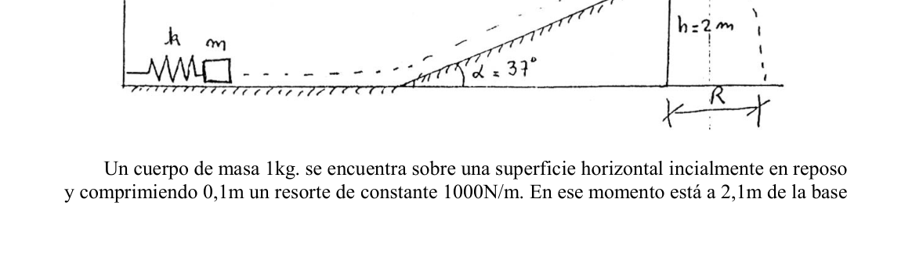
Topic: Newtonian Mechanics Metodi: Free-Body Diagram, Vector Decomposition Competenze: Physical Reasoning Objects: Block, Inclined Plane, String Fonte: Testo (PDF) — p.2
**Local 6 - General Peak (Due corpi a corda piatta inclinata) **
I corpi 1 e 2 di massa 20 Kg e 10 Kg. sono unite da una corda inestensibile, sul piano inclinato della figura. Il coefficiente di rottura cinematica tra i corpi e il piano è di 0,3. Una forza di 700 New viene applicata al corpo 1 in direzione parallela al piano come mostra la figura.
- Ho un’idea.
- l’accelerazione del sistema
- la tensione della corda (figura, angoli 30° e 60°)
Topic: Newtonian Mechanics Metodi: Free-Body Diagram, Vector Decomposition Competenze: Physical Reasoning Objects: Block, Inclined Plane, String Fonte: Testo (PDF) — p.2
**Local 6 - General Peak (Two flat-leaning rope bodies) **
The bodies 1 and 2 weigh 20 kg and 10 kg. They are connected by an unstretchable rope, over the inclined plane of the figure. The kinematic friction coefficient between the bodies and the plane is 0.3. A force of 700 New is applied to body 1 in a direction parallel to the plane as shown in the figure.
- What ?
- the acceleration of the system
- the tension on the rope (figure, angles 30° and 60°)
Topic: Newtonian Mechanics Metodi: Free-Body Diagram, Vector Decomposition Competenze: Physical Reasoning Objects: Block, Inclined Plane, String Fonte: Testo (PDF) — p.2
Local 7 - Capital Federal (Resorte comprimido, cuerpo plano inclinado)
Un cuerpo de masa 1kg, se encuentra sobre una superficie horizontal en reposo y comprimiendo 0,1m un resorte de constante 1000N/m. En ese momento esta a 2,1m de la base del plano inclinado de 37° de pendiente y 2m de altura. Cuando se deja libre el cuerpo, éste se mueve por la superficie horizontal, asciende por el plano inclinado y cae detrás de él a una distancia R de la pared vertical. Si en todas las superficies el coeficiente de rozamiento es 0,1 y se desprecia la fricción con el aire, calcular: a) La velocidad con que llega a comenzar a ascender por el plano. b) La distancia R que alcanza.
Topic: Conservation of Energy, Newtonian Mechanics Metodi: Conservation of Energy, Hooke’s Law, Kinematic Equations Competenze: Physical Reasoning Objects: Spring, Block, Inclined Plane Fonte: Testo (PDF) — p.2
**Local 7 - Capitale federale (resorso compresso, corpo piano inclinato) **
Un corpo di massa di 1 kg, si trova su una superficie orizzontale a riposo e compressa 0,1 m una sorgente di costante 1000N/m. A quel punto è a 2,1 m dalla base del piano inclinato di 37° di pendenza e 2 m di altezza. Quando il corpo viene lasciato libero, si muove sulla superficie orizzontale, sale per il piano inclinato e cade dietro di esso a una distanza R dal muro verticale. Se su tutte le superfici il coefficiente di ruggine è 0,1 e si disprezza la friczione con l’aria, calcolare: a) La velocità con cui si inizia a salire per piano. b) La distanza raggiunta R.
Topic: Conservation of Energy, Newtonian Mechanics Metodi: Conservation of Energy, Hooke’s Law, Kinematic Equations Competenze: Physical Reasoning Objects: Spring, Block, Inclined Plane Fonte: Testo (PDF) — p.2
The Commission shall, in accordance with Article 21 of Regulation (EC) No 1272/2009, adopt implementing acts laying down the rules for the application of this Regulation.
A body of 1 kg mass, it is located on a horizontal surface at rest and compressing 0,1 m a spring of constant 1000N/m. At that time it is 2.1 m from the base of the sloping plane of 37° slope and 2 m high. When the body is released, it moves along the horizontal surface, rises up the sloping plane and falls behind it at a distance R from the vertical wall. If the friction coefficient on all surfaces is 0,1 and the friction with air is neglected, calculate: (a) The speed at which it begins to rise above the plane. (b) The distance R reaches.
Topic: Conservation of Energy, Newtonian Mechanics Metodi: Conservation of Energy, Hooke’s Law, Kinematic Equations Competenze: Physical Reasoning Objects: Spring, Block, Inclined Plane Fonte: Testo (PDF) — p.2
Local 8 - San Fernando del Valle de Catamarca (Avion)
Un avión cuya masa es de 980Kg viaja en línea recta a 306Km/h durante dos minutos, al cabo de los cuales encuentra una nube muy densa que disminuye su velocidad gradualmente durante 2 minutos, hasta un valor de 241,2Km/h. Pasada la nube recupera la velocida inicial en 1 minuto. a)Describa el tipo de movimiento en cada intervalo. b)- Realice la gráfica velocidad-tiempo. c)-Calcule el espacio total recorrido durante el tiempo de movimiento descripto.
Topic: Newtonian Mechanics Metodi: Kinematic Equations Competenze: Physical Reasoning Objects: — Fonte: Testo (PDF) — p.2
**Local 8 - San Fernando del Valle di Catamarca (Avion) **
Un aereo di massa 980 kg viaggia in linea retta a 306 km/h per due minuti, dopo i quali trova una nube molto densa che diminuisce gradualmente la sua velocità per 2 minuti, fino a un valore di 241,2 km/h. Dopo il cloud, la velocità iniziale si riprende in un minuto. a) Descrivi il tipo di movimento in ogni intervallo. b) Realizzare il grafico velocità-tempo. c) Calcolare lo spazio totale percorso durante il tempo di movimento descritto.
Topic: Newtonian Mechanics Metodi: Kinematic Equations Competenze: Physical Reasoning Objects: — Fonte: Testo (PDF) — p.2
The Commission has decided to extend the period of validity of the agreement.
An aircraft with a mass of 980 kg travels in a straight line at 306 km/h for two minutes, after which it encounters a very dense cloud that slowly slows down its speed for 2 minutes, to a value of 241,2 km/h. After the cloud passes, it regains its initial speed in 1 minute. (a) Describe the type of movement at each interval. (b) Perform the speed-time chart. (c) - Calculate the total space travelled during the described time of movement.
Topic: Newtonian Mechanics Metodi: Kinematic Equations Competenze: Physical Reasoning Objects: — Fonte: Testo (PDF) — p.2
Local 9 - Rojas (Vehiculo y arbol)
El conductor de un vehículo que marcha a 108 Km/h ve un árbol caído en el camino 100 m. al frente de su posición.Para aplicar los frenos tarda 1/4 de segundo y después continúa frenándose a 4m/s. Calcule el tiempo total que tarda en detenerse desde que ve el árbol. ¿Se produce el choque?
Topic: Newtonian Mechanics Metodi: Kinematic Equations Competenze: Physical Reasoning Objects: — Fonte: Testo (PDF) — p.2
**Local 9 - Reds (Veicolo e albero) **
Il conducente di un veicolo che va a 108 Km/h vede un albero caduto sulla strada 100 m. Applicare i freni richiede 1/4 secondo e poi continua a frenare a 4m/s. Calcola il tempo totale di fermo da quando vedi l’albero. C’è uno scontro?
Topic: Newtonian Mechanics Metodi: Kinematic Equations Competenze: Physical Reasoning Objects: — Fonte: Testo (PDF) — p.2
**Local 9 - Red (Vehicle and tree) **
The driver of a vehicle speeding at 108 Km/h sees a fallen tree on the road 100 m. The brakes are applied for 1/4 second and then continue braking at 4m/s. Calculate the total time it takes to stop since you see the tree. Is there a shock?
Topic: Newtonian Mechanics Metodi: Kinematic Equations Competenze: Physical Reasoning Objects: — Fonte: Testo (PDF) — p.2
Local 10 - Florida (Sistema de poleas, aceleracion)
Para el sistema de la figura obtener una expresion para calcular la aceleración de cada una de las masas y las tensiones de las cuerdas. (figura: m1, m2, m3). NOTA: Se considera que los hilos son inextensibles y que la masa de las poleas es despreciable.
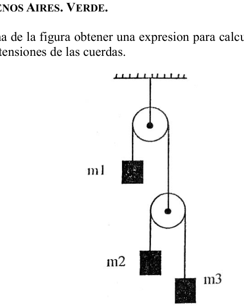
Topic: Newtonian Mechanics Metodi: Free-Body Diagram, Conservation Laws Competenze: Physical Reasoning Objects: Pulley, String, Block Fonte: Testo (PDF) — p.2
**Local 10 - Florida (Sistema di pullee, accelerazione) **
Per il sistema della figura ottenere un’espressione per calcolare l’accelerazione di ciascuna delle masse e le tensioni delle corde. (Figura: m1, m2, m3). NOTA: I fili sono considerati estensibili e la massa delle pollice è disprezzabile.
Topic: Newtonian Mechanics Metodi: Free-Body Diagram, Conservation Laws Competenze: Physical Reasoning Objects: Pulley, String, Block Fonte: Testo (PDF) — p.2
The following is the list of the types of vehicles that are included in the list of vehicles:
For the system of the figure to obtain an expression to calculate the acceleration of each of the masses and the tensions of the strings. (Figure: m1, m2, m3) NOTE: Wire is considered to be inextensible and the mass of the pulleys is despicable.
Topic: Newtonian Mechanics Metodi: Free-Body Diagram, Conservation Laws Competenze: Physical Reasoning Objects: Pulley, String, Block Fonte: Testo (PDF) — p.2
Local 11 - Resistencia (Plano inclinado, dos moviles)
Desde la cuspide de un plano inclinado de 20 m de base y 6 m de altura se lanzaron simultáneamente dos móviles, A por el plano inclinado y B en caída libre (velocidad inicial igual a cero). Si ambos móviles llegan simultáneamente al suelo con que velocidad fue lanzado A.
Topic: Newtonian Mechanics Metodi: Kinematic Equations Competenze: Physical Reasoning Objects: Inclined Plane, Projectile Fonte: Testo (PDF) — p.2
**Local 11 - Resistenza (piano inclinato, due mossi) **
Dal cuspido di un piano inclinato di 20 m di base e 6 m di altezza sono stati lanciati contemporaneamente due movimenti, A per il piano inclinato e B in caduta libera (velocità iniziale pari a zero). Se entrambi i movimenti arrivano al suolo contemporaneamente a che velocità è stato lanciato A.
Topic: Newtonian Mechanics Metodi: Kinematic Equations Competenze: Physical Reasoning Objects: Inclined Plane, Projectile Fonte: Testo (PDF) — p.2
The following is the list of the types of vehicles that are used in the manufacture of the product:
From the cusp of a base 20 m and 6 m high inclined plane two mobiles were launched simultaneously, A for the inclined plane and B for free fall (starting speed equal to zero). If both mobiles simultaneously hit the ground at what speed was A thrown.
Topic: Newtonian Mechanics Metodi: Kinematic Equations Competenze: Physical Reasoning Objects: Inclined Plane, Projectile Fonte: Testo (PDF) — p.2
Local 12 - Rojas (Bloques ascensor)
Pablo cuelga un bloque de 2Kg, del techo del ascensor y en la parte inferior del bloque 1, cuelga otro bloque del doble de masa. Se pide hallar: ./ Las tensiones de las dos cuerdas-el ascensor se desplaza hacia arriba con velocidad constante. ./ Idem anterior cuando el ascensor baja con aceleración de 3 m/s.
Topic: Newtonian Mechanics Metodi: Free-Body Diagram Competenze: Physical Reasoning Objects: Block, String Fonte: Testo (PDF) — p.2
**Local 12 - Rodi (Blocchi di ascensore) **
Pablo sospende un blocco di 2 kg dal tetto dell’ascensore e nella parte inferiore del blocco 1, sospende un altro blocco di doppio peso. Si chiede di trovare: ./ Le tensioni delle due corde - l’ascensore si sposta verso l’alto a velocità costante. ./ precedente quando l’ascensore scende a 3 m/s .
Topic: Newtonian Mechanics Metodi: Free-Body Diagram Competenze: Physical Reasoning Objects: Block, String Fonte: Testo (PDF) — p.2
The following is the list of the categories of vehicles used in the manufacture of the product:
Pablo hangs a 2kg block from the roof of the elevator and at the bottom of block 1, hangs another block of double mass. It is asked to find: ./ The tensions of the two ropes - the elevator moves upwards at a constant speed. ./ Similar to the previous one when the elevator is descending at an acceleration of 3 m/s.
Topic: Newtonian Mechanics Metodi: Free-Body Diagram Competenze: Physical Reasoning Objects: Block, String Fonte: Testo (PDF) — p.2
Local 13 - Dolores (Cinco fuerzas, equilibrio)
Sobre una barra de peso despreciable y 100 cm de longitud actuan las cinco fuerzas representadas en la figura. Hallar gráfica y analíticamente la equilibrante del sistema y su punto de aplicación. (figura con fuerzas, 60 cm)
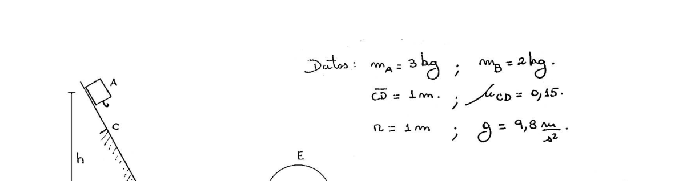
Topic: Rigid Body Statics Metodi: Torque & Angular Momentum Analysis, Vector Decomposition Competenze: Physical Reasoning Objects: Rod Fonte: Testo (PDF) — p.2
**Local 13 - Dolori (Cinque forze, equilibrio) **
Su una barra di peso sconsiderato e di 100 cm di lunghezza agiscono le cinque forze rappresentate nella figura. Trovare graficamente e analiticamente l’equilibrio del sistema e il suo punto di applicazione. (figura con forze, 60 cm)
Topic: Rigid Body Statics Metodi: Torque & Angular Momentum Analysis, Vector Decomposition Competenze: Physical Reasoning Objects: Rod Fonte: Testo (PDF) — p.2
Local 13 - Pain (Five forces, balance)
On a bar of despicable weight and 100 cm in length, the five forces depicted in the figure act. Graphically and analytically find the system balance and its application point. (Figure with force, 60 cm)
Topic: Rigid Body Statics Metodi: Torque & Angular Momentum Analysis, Vector Decomposition Competenze: Physical Reasoning Objects: Rod Fonte: Testo (PDF) — p.2
Local 14 - San Nicolas (Grafico, hallar incognita)
De acuerdo al gráfico, calcular la incógnita. (figura: gráfico v/t, V(0)=? hasta V(8)=20 m/s)
Topic: Newtonian Mechanics Metodi: Kinematic Equations, Graph Linearization Competenze: Physical Reasoning Objects: — Fonte: Testo (PDF) — p.2
**Local 14 - San Nicolas (Grafico, ritrovare incognita) **
Secondo il grafico, calcolare l’incognito. (Figura: grafico v/t, V(0)=? fino a V(8)=20 m/s)
Topic: Newtonian Mechanics Metodi: Kinematic Equations, Graph Linearization Competenze: Physical Reasoning Objects: — Fonte: Testo (PDF) — p.2
The Commission has decided to extend the scope of the proposal to the Member States.
According to the graph, calculate the unknown. (Figure: graph v/t, V(0) =? The maximum speed of the vehicle shall be:
Topic: Newtonian Mechanics Metodi: Kinematic Equations, Graph Linearization Competenze: Physical Reasoning Objects: — Fonte: Testo (PDF) — p.2
Local 15 - Capital Federal (Pista figura, dos bloques)
En la pista de la figura hay 2 bloques, que pueden moverse con rozamiento despreciable , salvo en el tramo CD. a)Considerar que altura deberá dejarse caer el bloque A para que pase por el punto E con la mínima velocidad, sin caerse de la pista. b) Luego que pase por E con esa velocidad, se encuentra con el bloque B que estaba en reposo, y se enganchan para dirigirse juntos hacia el resorte de constante elástica de K=1800 N.m. Determinar:
- Con qué velocidad se moverán luego de engancharse.
- Qué longitud se comprimirá el resorte. (figura. Datos: m1=8kg; m2=4kg; CE=1m; coef m=0,4; x=1m; g=9,8 m/s)
Topic: Conservation of Energy, Conservation of Momentum Metodi: Conservation of Energy, Conservation of Momentum, Hooke’s Law Competenze: Physical Reasoning Objects: Block, Spring Fonte: Testo (PDF) — p.2
**Local 15 - Capitale federale (Figura, due blocchi) **
Nella pista della figura ci sono 2 blocchi, che possono muoversi con scarsa rottura, eccetto nel tratto CD. a) Considerare quale altezza deve essere abbassata per far passare il blocco A attraverso il punto E con la minima velocità, senza cadere dal binario. b) Dopo aver attraversato E a questa velocità, si trova con il blocco B che era in riposo, e si accolgono per dirigere insieme verso la sorgente di costante elastica di K=1800 N.m. Determinare:
- A che velocità si muoveranno dopo l’attacco?
- Che lunghezza si comprimerà la primavera. (Figura. Dati: m1=8kg; m2=4kg; CE=1m; coef m=0,4; x=1m; g=9,8 m/s)
Topic: Conservation of Energy, Conservation of Momentum Metodi: Conservation of Energy, Conservation of Momentum, Hooke’s Law Competenze: Physical Reasoning Objects: Block, Spring Fonte: Testo (PDF) — p.2
The Commission has also adopted a proposal for a new Regulation on the protection of the environment.
In the track of the figure there are 2 blocks, which can move with despicable grinding, except in the CD section. (a) Consider the height at which block A must be dropped to pass through point E at the minimum speed without falling off the track. b) After passing through E at that speed, it encounters block B that was at rest, and they are hooked together to head towards the spring of constant elasticity of K=1800 N.m. Determine:
- How fast will they move after they’re hooked up?
- How long will the spring compress? (Figure. Data: m1=8kg; m2=4kg; CE=1m; coef m=0.4; x=1m; g=9.8 m/s)
Topic: Conservation of Energy, Conservation of Momentum Metodi: Conservation of Energy, Conservation of Momentum, Hooke’s Law Competenze: Physical Reasoning Objects: Block, Spring Fonte: Testo (PDF) — p.2
Local 16 - Comodoro Rivadavia (Juego del trineo, Rio Gallegos)
En la ciudad de Rio Gallegos un niño juega en el hielo; el juego consiste en arrastrar un trineo sobre el hielo. Si la masa del trineo es de 5 kg. y el muchacho ejerce una fuerza de 15 Nw. a 30°, determinar el trabajo realizado por el chico y la velocidad final del trineo cuando ha recorrido 5m., suponiendo que parte del reposo y no existe fricción.
Topic: Newtonian Mechanics, Conservation of Energy Metodi: Conservation of Energy, Vector Decomposition Competenze: Physical Reasoning Objects: Cart, String Fonte: Testo (PDF) — p.2
**Local 16 - Comodoro Rivadavia (Gioco dello sciame, Rio Gallegos) **
Nella città di Rio Gallegos un bambino gioca sul ghiaccio; il gioco consiste nel trascinare una ghiacciaia sul ghiaccio. Se la massa del bagliato è di 5 kg. e il ragazzo esercita una forza di 15 NW. a 30°, determinare il lavoro svolto dal ragazzo e la velocità finale del bagliamento quando ha percorso 5 m., supponendo che parte del riposo e non vi sia attrito.
Topic: Newtonian Mechanics, Conservation of Energy Metodi: Conservation of Energy, Vector Decomposition Competenze: Physical Reasoning Objects: Cart, String Fonte: Testo (PDF) — p.2
The following is the list of the official languages of the European Union:
In the city of Rio Gallegos a child plays on the ice; the game consists of dragging a sled over the ice. If the mass of the sled is 5 kg. And the boy exerts a force of 15 NW. a 30°, to determine the work done by the boy and the final speed of the sled when it has travelled 5m, assuming that part of the rest and there is no friction.
Topic: Newtonian Mechanics, Conservation of Energy Metodi: Conservation of Energy, Vector Decomposition Competenze: Physical Reasoning Objects: Cart, String Fonte: Testo (PDF) — p.2
Local 17 - Comodoro Rivadavia (Rio Gallegos, trineo hielo)
En la ciudad de Rio Gallegos un niño juega en el hielo; el juego consiste en arrastrar un trineo sobre el hielo. Si la masa del trineo es de 5 kg. y el muchacho ejerce una fuerza de 15 Nw a 30°, determinar el trabajo realizado por el chico y la velocidad final del trineo cuando ha recorrido 5m., suponiendo que parte del reposo y no existe fricción.
Topic: Newtonian Mechanics, Conservation of Energy Metodi: Conservation of Energy, Vector Decomposition Competenze: Physical Reasoning Objects: Cart, String Fonte: Testo (PDF) — p.2
**Local 17 - Comodoro Rivadavia (Rio Gallegos, ghiaccio scivolante) **
Nella città di Rio Gallegos un bambino gioca sul ghiaccio; il gioco consiste nel trascinare una ghiacciaia sul ghiaccio. Se la massa del bagliato è di 5 kg. e il ragazzo esercita una forza di 15 Nw a 30°, determinando il lavoro svolto dal ragazzo e la velocità finale del bagliardo quando ha percorso 5 metri, supponendo che parte del riposo e non ci sia attrito.
Topic: Newtonian Mechanics, Conservation of Energy Metodi: Conservation of Energy, Vector Decomposition Competenze: Physical Reasoning Objects: Cart, String Fonte: Testo (PDF) — p.2
The Commission has decided to extend the period of validity of the agreement.
In the city of Rio Gallegos a child plays on the ice; the game consists of dragging a sled over the ice. If the mass of the sled is 5 kg. and the boy exerts a force of 15 NW to 30°, determining the work done by the boy and the final speed of the sled when he has traveled 5m, assuming that part of the rest and there is no friction.
Topic: Newtonian Mechanics, Conservation of Energy Metodi: Conservation of Energy, Vector Decomposition Competenze: Physical Reasoning Objects: Cart, String Fonte: Testo (PDF) — p.2
Local 18 - San Fernando del Valle de Catamarca (Cuerpo caida libre, graficos)
Uno de los siguientes gráficos y-t corresponde al de un cuerpo en caída libre, partiendo del reposo. (figuras: graficos (a) y (b)) a).- Cuál de los dos gráficos es el correcto? b).- Cuánto vale la velocidad inicial del movimiento? c) Se le informa que el cuerpo tarda 4s en llegar al suelo. ¿Desde que altura cayó? d)Para el mismo movimiento, si la altura fuese la tercera parte de la anterior. ¿Qué tiempo tardaría en recorrerla?
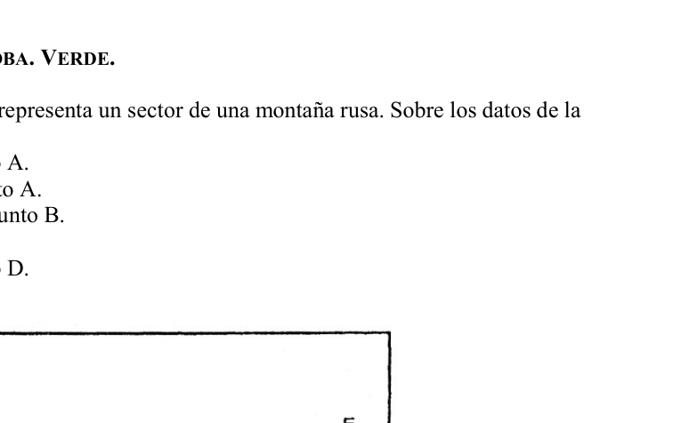
Topic: Newtonian Mechanics Metodi: Kinematic Equations, Graph Linearization Competenze: Physical Reasoning Objects: — Fonte: Testo (PDF) — p.2
**Local 18 - San Fernando del Valle di Catamarca (Cosso cadente libero, grafici) **
Uno dei seguenti grafici y-t corrisponde a quello di un corpo in caduta libera, partendo dal riposo. (Figure: grafici (a) e (b)) a).- Quale dei due grafici è corretto? b) Quanto vale la velocità iniziale del movimento? c) Si informa che il corpo deve essere in 4 secondi per arrivare al suolo. Da che altezza è caduto? d) Per lo stesso movimento, se la altezza è una terza parte della precedente. Quanto tempo ci vorrebbe per girare?
Topic: Newtonian Mechanics Metodi: Kinematic Equations, Graph Linearization Competenze: Physical Reasoning Objects: — Fonte: Testo (PDF) — p.2
The Commission has decided to extend the period of validity of the measures to be taken to ensure that the measures taken are implemented in accordance with Article 107 (1) TFEU.
One of the following y-t graphs corresponds to that of a body in free fall, starting from rest. (Figures: graphs (a) and (b)) a) Which of the two graphs is correct? (b) What is the initial speed of the motion? (c) You are informed that the body takes 4 seconds to reach the ground. How high did it fall? (d) For the same movement, if the height is one third of the previous one. How long would it take to get around it?
Topic: Newtonian Mechanics Metodi: Kinematic Equations, Graph Linearization Competenze: Physical Reasoning Objects: — Fonte: Testo (PDF) — p.2
Local 19 - Villa Carlos Paz (Montana rusa)
En el gráfico de la figura se representa un sector de una montaña rusa. Sobre los datos de la figura calcular:
- La energía cinética en el punto A.
- La energía potencial en el punto A.
- La velocidad del móvil en el punto B.
- La energia total en el punto C.
- La energía cinética en el punto D.
- Si el móvil llega al punto E. (figura: 30 m/s, 4 kg, alturas en m)
Topic: Conservation of Energy Metodi: Conservation of Energy Competenze: Physical Reasoning Objects: — Fonte: Testo (PDF) — p.2
**Local 19 - Villa Carlos Paz (Montana russa) **
Il grafico della figura rappresenta un settore di una montagna russa. Sulla base dei dati della figura calcolare:
- L’energia cinetica al punto A.
- L’energia potenziale al punto A.
- La velocità del cellulare al punto B.
- L’energia totale al punto C.
- L’energia cinetica al punto D.
- Se il cellulare arriva al punto E. (figura: 30 m/s, 4 kg, altezza in m)
Topic: Conservation of Energy Metodi: Conservation of Energy Competenze: Physical Reasoning Objects: — Fonte: Testo (PDF) — p.2
The Commission has decided to extend the period of validity of the agreement.
The figure shows a section of a roller coaster. On the data in the figure calculate:
- The kinetic energy at point A.
- The potential energy at point A.
- The speed of the mobile at point B.
- Total energy at point C.
- Kinetic energy at point D.
- If the mobile reaches point E. (Figure: 30 m/s, 4 kg, heights in m)
Topic: Conservation of Energy Metodi: Conservation of Energy Competenze: Physical Reasoning Objects: — Fonte: Testo (PDF) — p.2
Local 20 - Rojas (Cuerpo plano inclinado, aceleracion)
Se deja resbalar un cuerpo de 5 Kg. de masa por un plano inclinado de 25m. de longitud. El cuerpo lo recorre en 5 s. Se desea calcular: A- la aceleración del cuerpo. B- la fuerza paralela al plano inclinado. C- el ángulo formado por el plano inclinado y la vertical D- la altura del plano
Topic: Newtonian Mechanics Metodi: Kinematic Equations, Free-Body Diagram Competenze: Physical Reasoning Objects: Inclined Plane, Block Fonte: Testo (PDF) — p.2
**Local 20 - Rossi (Cosco piatto inclinato, accelerazione) **
Si lascia scivolare un corpo di 5 kg. di massa per un piano inclinato di 25 m. di lunghezza. Il corpo lo percorre in 5 secondi. Si desidera calcolare: A- l’accelerazione del corpo. B - la forza parallela al piano inclinato. C- l’angolo formato dal piano inclinato e dalla verticale D- altezza del piano
Topic: Newtonian Mechanics Metodi: Kinematic Equations, Free-Body Diagram Competenze: Physical Reasoning Objects: Inclined Plane, Block Fonte: Testo (PDF) — p.2
The vehicle shall be equipped with a single engine.
You let a 5kg body slip. mass by an inclined plane of 25 m. of length. The body goes through it in five seconds . Calculate: A- the acceleration of the body. B- the force parallel to the inclined plane. C- the angle formed by the inclined plane and the vertical D- height of the plane
Topic: Newtonian Mechanics Metodi: Kinematic Equations, Free-Body Diagram Competenze: Physical Reasoning Objects: Inclined Plane, Block Fonte: Testo (PDF) — p.2
Local 21 - Comodoro Rivadavia (Dos pelotas, edificio)
Se lanza una pelota A, desde la parte superior de un edificio en el mismo instante en que desde el suelo se lanza verticalmente hacia arriba una segunda pelota B. En el momento en que las pelotas chocan, se encuentran desplazándose en sentido opuesto y la velocidad de la primer pelota, es dos veces mayor que la que lleva la segunda. Determinar a qué altura del edificio se produce el choque, expresando ésta en forma de fracción.
Topic: Newtonian Mechanics Metodi: Kinematic Equations Competenze: Physical Reasoning Objects: Projectile Fonte: Testo (PDF) — p.2
**Local 21 - Comodoro Rivadavia (Due palle, edificio) **
Una palla A viene lanciata dalla parte superiore di un edificio nello stesso istante in cui dal pavimento viene lanciata verticalmente verso l’alto una seconda palla B. Quando le palle si schiantano, si trovano a spostarsi in direzione opposta e la velocità della prima palla è due volte maggiore di quella della seconda. Determinare a che altezza dell’edificio si verifica lo scontro, espresso in forma di frazione.
Topic: Newtonian Mechanics Metodi: Kinematic Equations Competenze: Physical Reasoning Objects: Projectile Fonte: Testo (PDF) — p.2
The first is the “M.S.K.O”.
A ball A is thrown from the top of a building at the same time as a second ball B is thrown vertically up from the ground. The moment the balls collide, they’re moving in the opposite direction and the speed of the first ball is twice that of the second. Determine at what height of the building the impact occurs, expressing it in fractional form.
Topic: Newtonian Mechanics Metodi: Kinematic Equations Competenze: Physical Reasoning Objects: Projectile Fonte: Testo (PDF) — p.2
Local 22 - Capital Federal (Pelota plataforma, bala, choque)
Una pelota de masa 1 kg se encuentra en reposo en el borde de una plataforma de 5 m de altura. Una bala de 10 g se mueve paralela a la mesa en dirección al centro de masa de la pelota. La bola choca plásticamente con la pelota y esta deja la mesa siguiendo la trayectoria de la figura cayendo a 2 m de distancia de la plataforma. Calcular: a) La velocidad de la pelota en abandonar la mesa. b) La velocidad de la bala en el espacio en la mesa. c) La energía disipada en forma de calor en el momento del choque. m/s
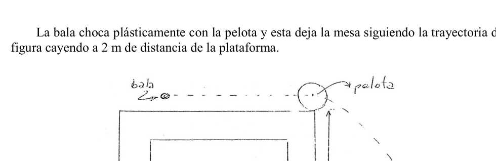
Topic: Conservation of Momentum, Newtonian Mechanics Metodi: Conservation of Momentum, Kinematic Equations, Conservation of Energy Competenze: Physical Reasoning Objects: Ball, Projectile Fonte: Testo (PDF) — p.2
**Local 22 - Capitale federale (Pilota piattaforma, pallottole, colpo) **
Una palla di massa di 1 kg si trova a riposo sul bordo di un piattaforma alto 5 m. Una pallottola da 10 g si muove parallelo al tavolo in direzione del centro di massa della palla. La palla colpisce plasticamente la palla e essa lascia il tavolo seguendo il percorso della figura cadendo a 2 m di distanza dal piattaforma. Calcolo: a) La velocità della palla nel lasciare la tavola. b) La velocità della pallottola nello spazio sul tavolo. c) L’energia dissipata in forma di calore al momento della collisione. m/s
Topic: Conservation of Momentum, Newtonian Mechanics Metodi: Conservation of Momentum, Kinematic Equations, Conservation of Energy Competenze: Physical Reasoning Objects: Ball, Projectile Fonte: Testo (PDF) — p.2
The Commission has decided to take the necessary measures to ensure that the Commission is able to take all necessary measures to ensure that the Commission is able to take all necessary measures to ensure that the Commission is able to take all necessary measures to ensure that the measures are implemented in a timely manner.
A 1 kg ball rests on the edge of a 5 m high platform. A 10 g bullet moves parallel to the table in the direction of the center of mass of the ball. The ball collides plastically with the ball and it leaves the table following the path of the figure falling 2 m away from the platform. Calculation of the (a) The speed of the ball when it leaves the table. (b) The speed of the bullet in the space on the table. (c) Energy dissipated as heat at the time of impact. m/s
Topic: Conservation of Momentum, Newtonian Mechanics Metodi: Conservation of Momentum, Kinematic Equations, Conservation of Energy Competenze: Physical Reasoning Objects: Ball, Projectile Fonte: Testo (PDF) — p.2
Local 23 - Resistencia (Cuerpo desde altura, encuentro)
Se deja caer un cuerpo (masa de 2 kg) desde una altura de 48 m. a) Con que velocidad inicial debe lanzarse hacia arriba, sobre la misma vertical, otro de 1 kg de masa, para que los cuerpos se encuentren a la mitad de la altura? b) Con qué diferencia de tiempo llegan al suelo? (suponga que se chocaron) c) Cuál es la energía mecánica del segundo cuerpo al llegar al punto de encuentro?
Topic: Newtonian Mechanics, Conservation of Energy Metodi: Kinematic Equations, Conservation of Energy Competenze: Physical Reasoning Objects: Projectile Fonte: Testo (PDF) — p.2
**Local 23 - Resistenza (Corpo da altezza, incontro) **
Si lascia cadere un corpo (massa di 2 kg) da un’altezza di 48 m. a) A che velocità iniziale si deve lanciare verso l’alto, sullo stesso verticale, un altro 1 kg di massa, per far sì che i corpi si trovino a metà altezza? b) Con quale differenza di tempo arrivano al suolo? (Supponiamo si siano scontrati) c) Qual è l’energia meccanica del secondo corpo quando arriva al punto di incontro?
Topic: Newtonian Mechanics, Conservation of Energy Metodi: Kinematic Equations, Conservation of Energy Competenze: Physical Reasoning Objects: Projectile Fonte: Testo (PDF) — p.2
**Local 23 - Resistance (body from height, encounter) **
A body (mass of 2 kg) is dropped from a height of 48 m. (a) At what initial speed must the body be thrown upwards, over the same vertical, another 1 kg of mass, so that the bodies are halfway up? (b) What time difference does it make when it reaches the ground? (assuming they collided) (c) What is the mechanical energy of the second body when it reaches the meeting point?
Topic: Newtonian Mechanics, Conservation of Energy Metodi: Kinematic Equations, Conservation of Energy Competenze: Physical Reasoning Objects: Projectile Fonte: Testo (PDF) — p.2
Local 24 - Comodoro Rivadavia (Cajones banda movil, potencia)
Por un plano inclinado, de 6 m de longitud y 1,5 m de altura, una banda móvil sube cajones de frutas de 20 kg. La banda se desliza con velocidad constante. Si la potencia útil del dispositivo es de 0.08 hp ¿cuantos cajones eleva por minuto?
Topic: Conservation of Energy, Newtonian Mechanics Metodi: Conservation of Energy Competenze: Physical Reasoning Objects: Inclined Plane Fonte: Testo (PDF) — p.2
**Local 24 - Comodoro Rivadavia (Castoni a banda mobile, potenza) **
Per un piano inclinato, lungo 6 m e alto 1,5 m, una banda mobile sale cassoni di frutta da 20 kg. La banda scivola a velocità costante. Se la potenza utile del dispositivo è di 0,08 CV, quante scatole si alzano al minuto?
Topic: Conservation of Energy, Newtonian Mechanics Metodi: Conservation of Energy Competenze: Physical Reasoning Objects: Inclined Plane Fonte: Testo (PDF) — p.2
The Commission has decided to extend the period of validity of the measures to be taken to ensure that the measures taken are implemented in accordance with Article 107 (1) TFEU.
On a sloping plane, 6 m long and 1.5 m high, a moving band climbs fruit baskets weighing 20 kg. The band slides at constant speed. If the device’s power output is 0.08 hp, how many drawers does it raise per minute?
Topic: Conservation of Energy, Newtonian Mechanics Metodi: Conservation of Energy Competenze: Physical Reasoning Objects: Inclined Plane Fonte: Testo (PDF) — p.2
Local 25 - General Pico (Edificio en construccion, choque)
Desde la parte superior de un edificio en construcción se sueltan piezas de 40m de altura. Al dejar caer un cuerpo en el instante en que desde el suelo se lanza verticalmente y hacia arriba un segundo cuerpo, en el momento en que se cruzan se desplazan en sentido opuesto y la velocidad del primero es el doble de la segunda. Determinar a qué altura del edificio se produce el choque. a) Determinar la posición del primer cuerpo en el instante en que el segundo alcanza su altura máxima en el caso de que choque contra él y se mencionado instante. b) Determinar la velocidad con que los cuerpos llegan a la base del edificio.
Topic: Newtonian Mechanics Metodi: Kinematic Equations Competenze: Physical Reasoning Objects: Projectile Fonte: Testo (PDF) — p.2
**Local 25 - General Peak (edificio in costruzione, colpo) **
Dalla parte superiore di un edificio in costruzione si scatenano pezzi di 40 metri di altezza. Quando si fa cadere un corpo nel momento in cui si lancia verticalmente dal suolo e verso l’alto un secondo corpo, nel momento in cui si incrociano si spostano in direzione opposta e la velocità del primo è doppia della seconda. Determinare a che altezza del edificio si verifica lo scontro. a) Determinare la posizione del primo corpo nel momento in cui il secondo raggiunge la sua altezza massima nel caso in cui si schianti contro di esso e si menzioni istantaneamente. b) Determinare la velocità con cui i corpi raggiungono la base dell’edificio.
Topic: Newtonian Mechanics Metodi: Kinematic Equations Competenze: Physical Reasoning Objects: Projectile Fonte: Testo (PDF) — p.2
The Commission has decided to extend the period of validity of the measures to be taken in order to ensure that the measures are implemented in accordance with the objectives of the programme.
From the top of a building under construction, 40m high pieces are released. When a body is dropped the moment it is thrown vertically from the ground and a second body is thrown upwards, the moment they cross they move in the opposite direction and the speed of the first is twice that of the second. Determine at what height of the building the impact occurs. (a) Determine the position of the first body at the moment the second reaches its maximum height in the event of a collision with it and is immediately mentioned. (b) Determine the speed at which bodies reach the base of the building.
Topic: Newtonian Mechanics Metodi: Kinematic Equations Competenze: Physical Reasoning Objects: Projectile Fonte: Testo (PDF) — p.2
Local 26 - San Fernando del Valle de Catamarca (Grafico velocidad-tiempo)
Dado el siguiente gráfico velocidad - tiempo, y considerando que para t= 0s el móvil pasa por el origen del sistema de referencia, calcular: a) En qué intervalos de tiempo el movimiento es uniforme ?, y por qué ? b) Cuanto vale la velocidad de dichos intervalos de tiempo? c) En qué intervalo de tiempo, la velocidad es negativa?. d) Indique los intervalos de tiempo con movimiento uniformemente variado. e) Calcule la aceleración en los intervalos indicados en el item anterior. f) Hallar el espacio recorrido por el móvil durante los primeros 9 s. g) Existe algún instante t, en el cuál el móvil pasa nuevamente por el origen del sistema de referencia? (figura: grafico v-t)
Topic: Newtonian Mechanics Metodi: Kinematic Equations, Graph Linearization Competenze: Physical Reasoning Objects: — Fonte: Testo (PDF) — p.2
**Local 26 - San Fernando del Valle di Catamarca (Grafico velocità-tempo) **
Data la seguente grafica velocità - tempo, e considerando che per t=0s il mobile passa per l’origine del sistema di riferimento, calcolare: a) In quali intervalli di tempo il movimento è uniforme, e perché? b) Qual è la velocità di tali intervalli di tempo? c) In quale intervallo di tempo la velocità è negativa? d) Indicare gli intervalli di tempo con movimento uniformemente variabile. e) Calcolare l’accelerazione negli intervalli indicati nel precedente punto. f) Trovare lo spazio percorso dal cellulare durante i primi 9 secondi. g) Esiste un momento t in cui il cellulare passa di nuovo dall’origine del sistema di riferimento? (Figura: grafico v-t)
Topic: Newtonian Mechanics Metodi: Kinematic Equations, Graph Linearization Competenze: Physical Reasoning Objects: — Fonte: Testo (PDF) — p.2
The Commission has also adopted a number of measures to combat the use of the ‘space-speed’ technology in the transport sector.
Given the following speed-time graph, and considering that for t=0s the mobile passes through the source of the reference system, calculate: (a) At what time intervals is the movement uniform, and why? (b) What is the speed of such time intervals? (c) At what time interval is the velocity negative? (d) Indicate the time intervals with uniformly varying movement. (e) Calculate acceleration at the intervals indicated in the previous item. (f) Find the space travelled by the mobile phone during the first 9 seconds. (g) Is there a time t, when the mobile phone goes back to the source of the reference system? (Figure: graph v-t)
Topic: Newtonian Mechanics Metodi: Kinematic Equations, Graph Linearization Competenze: Physical Reasoning Objects: — Fonte: Testo (PDF) — p.2
Local 27 - San Salvador de Jujuy (Bola desde mesa)
Una bola que rueda sobre una mesa horizontal de 75 cm. de altura cae tocando el suelo en un punto situado a una distancia horizontal de 1,5 m. del borde de la mesa.¿cual era la velocidad de la bola en el momento de abandonar la mesa?
Topic: Newtonian Mechanics Metodi: Kinematic Equations Competenze: Physical Reasoning Objects: Ball Fonte: Testo (PDF) — p.2
**Local 27 - San Salvador de Jujuy (Bola da tavola) **
Una palla che ruota su un tavolo orizzontale di 75 cm. di altezza cade toccando il suolo in un punto situato a una distanza orizzontale di 1,5 m. dal bordo del tavolo. Qual era la velocità della palla quando si era allontanata dal tavolo?
Topic: Newtonian Mechanics Metodi: Kinematic Equations Competenze: Physical Reasoning Objects: Ball Fonte: Testo (PDF) — p.2
The Commission has decided to extend the period of validity of the agreement.
A ball that rolls over a 75 cm horizontal table. The height of the falls is reached by touching the ground at a point at a horizontal distance of 1,5 m. From the edge of the table. What was the speed of the ball when it left the table?
Topic: Newtonian Mechanics Metodi: Kinematic Equations Competenze: Physical Reasoning Objects: Ball Fonte: Testo (PDF) — p.2
Local 28 - Dolores (Automovil A y B, encuentro)
Un automóvil sale de Bs.As. con destino a Azul a 80 Km/h y simultáneamente parte de Azul a Bs.As. otro a 70 Km/h. Si la distancia entre ambas ciudades es de 300 Km. y su soporte una resistencia rectilínea, determine gráfica y analíticamente: a). En que punto se cruzan?. b). ¿A que distancia de Bs.As. se cruzan?. c). Repita los cálculos suponiendo que el primer coche sale de Bs.As. 40 minutos 30 segundos después del 2°.
Topic: Newtonian Mechanics Metodi: Kinematic Equations Competenze: Physical Reasoning Objects: — Fonte: Testo (PDF) — p.2
**Local 28 - Dolores (Automobile A e B, incontro) **
Una macchina sta uscendo da B.S.A. per Azul a 80 Km/h e simultaneamente parte di Azul a Bs.As. Un altro a 70 km/h. Se la distanza tra le due città è di 300 km. e il suo supporto una resistenza rettilinea, determinare graficamente e analiticamente: a). A che punto si incrociano? b). A che distanza da B.S.A. si incrociano? c). Ripeta i calcoli, supponendo che la prima macchina esci da Bs.As. 40 minuti e 30 secondi dopo 2°.
Topic: Newtonian Mechanics Metodi: Kinematic Equations Competenze: Physical Reasoning Objects: — Fonte: Testo (PDF) — p.2
**Local 28 - Dolores (Automobile A and B, meeting) **
A car is leaving Bs.A. to Azul at 80 Km/h and simultaneously part of Azul to Bs.As. Another at 70 km/h. If the distance between the two cities is 300 km. and its support a straight resistance, determine graphically and analytically: a). Where do they cross? b). How far from B.S.A. They cross? c). Repeat the calculations assuming the first car leaves Bs.As. 40 minutes 30 seconds after 2°.
Topic: Newtonian Mechanics Metodi: Kinematic Equations Competenze: Physical Reasoning Objects: — Fonte: Testo (PDF) — p.2
Local 29 - General Pico (Dos moviles sentidos opuestos)
Dos móviles parten en sentidos opuestos sobre la misma recta: (A un sentido de B y B en sentido de A). A lo Km/h velocidad constante de 20 m/seg y B con m/seg y aceleración de 2 m/seg. Si en el instante en que parten ambos móviles estan separados una distancia de 400 m (y parten a la misma hora). HALLAR: a) El tiempo que tardan en cruzarse. b) Distancia de ambos móviles respecto del punto en que partió A cuando se cruzan. c) Velocidad del móvil B en ese punto.
Topic: Newtonian Mechanics Metodi: Kinematic Equations Competenze: Physical Reasoning Objects: — Fonte: Testo (PDF) — p.2
**Local 29 - General Peak (Due mosse opposte) **
Due mobili partono in direzioni opposte sulla stessa retta: (A in senso B e B in senso A). A Km/h velocità costante di 20 m/sec e B con m/seg e accelerazione di 2 m/seg. Se all’istante in cui partono i due telefoni cellulari sono separati a 400 m (e partono nello stesso momento). - Ho un’idea. a) Il tempo necessario per attraversare. b) Distanza tra i due movimenti dal punto di partenza di A quando si incontrano. c) velocità del veicolo B a quel punto.
Topic: Newtonian Mechanics Metodi: Kinematic Equations Competenze: Physical Reasoning Objects: — Fonte: Testo (PDF) — p.2
**Local 29 - General Peak (Two moving opposite directions) **
Two mobiles start in opposite directions on the same straight: (A in a direction from B and B in a direction from A). At Km/h constant speed of 20 m/s and B with m/seg and acceleration of 2 m/seg. If at the moment of departure both mobile phones are separated by a distance of 400 m (and depart at the same time). - What ? (a) The time it takes to cross. (b) Distance of both mobiles from the point where A departed when they cross. (c) Speed of the B-movement at that point.
Topic: Newtonian Mechanics Metodi: Kinematic Equations Competenze: Physical Reasoning Objects: — Fonte: Testo (PDF) — p.2
Local 30 - Castelar (Cuerpo plano inclinado, modulo aceleracion)
Un cuerpo de 4kg se desplaza con una velocidad inicial de 6m/s y comienza a subir por un plano inclinado 30°. Hay un rozamiento entre el cuerpo y la superficie de plano inclinado. El cuerpo recorre 6m por el plano inclinado. Calcular la fuerza de rozamiento que actua sobre el cuerpo, suponiendo que su módulo es constante. La velocidad al pie del plano inclinado luego de descender por el mismo plano.
Topic: Conservation of Energy, Newtonian Mechanics Metodi: Conservation of Energy, Free-Body Diagram Competenze: Physical Reasoning Objects: Block, Inclined Plane Fonte: Testo (PDF) — p.2
**Local 30 - Castelare (Cabra piana inclinata, modulo di accelerazione) **
Un corpo da 4 kg si muove a una velocità iniziale di 6 m/s e inizia ad ascendere per un piano inclinato 30°. C’è un’arricciozione tra il corpo e la superficie di un piano inclinato. Il corpo percorre 6 metri per il piano inclinato. Calcolare la forza di ruggine che agisce sul corpo, supponendo che il suo modulo sia costante. La velocità al piede del piano inclinato dopo aver scesa sullo stesso piano.
Topic: Conservation of Energy, Newtonian Mechanics Metodi: Conservation of Energy, Free-Body Diagram Competenze: Physical Reasoning Objects: Block, Inclined Plane Fonte: Testo (PDF) — p.2
The vehicle is equipped with a single engine.
A 4kg body moves at an initial speed of 6m/s and begins to rise on a sloping plane 30°. There’s a friction between the body and the sloping flat surface. The body runs 6m along the inclined plane. Calculate the force of friction acting on the body, assuming its modulus is constant. The velocity at the foot of the inclined plane after descending along the same plane.
Topic: Conservation of Energy, Newtonian Mechanics Metodi: Conservation of Energy, Free-Body Diagram Competenze: Physical Reasoning Objects: Block, Inclined Plane Fonte: Testo (PDF) — p.2
Local 31 - General Pico (Cuerpo angulo, fuerza F)
Una fuerza de 100 New. tira de un cuerpo de 20 Kg. de masa formando un ángulo de 30° con la horizontal. El coeficiente de roce cinemático entre el cuerpo y el plano es 0,2. Si en estas condiciones avanza 10 m partiendo del reposo. Calcular:
- La aceleración.
- Trabajo de la fuerza externa
- Trabajo de la fuerza de roce
- Aumento de la energia cinética
- Velocidad final
- El tiempo en recorrer los 10 m. (figura, , 30°)
Topic: Newtonian Mechanics, Conservation of Energy Metodi: Free-Body Diagram, Conservation of Energy, Kinematic Equations Competenze: Physical Reasoning Objects: Block Fonte: Testo (PDF) — p.2
**Local 31 - Generale Pico (Corpo angolare, forza F) **
Una forza di 100 New. tira un corpo di 20 kg. di massa formando un angolo di 30° con la orizzontale. Il coefficiente di rottura cinematica tra il corpo e il piano è di 0,2. Se in queste condizioni si avanza 10 metri dal riposo. Calcolo:
- L’accelerazione.
- Lavorare da parte di forze esterne
- Lavoro della forza di frattura
- Aumento dell’energia cinetica
- velocità finale
- Il tempo di percorrenza dei 10 m. (Figura, , 30°)
Topic: Newtonian Mechanics, Conservation of Energy Metodi: Free-Body Diagram, Conservation of Energy, Kinematic Equations Competenze: Physical Reasoning Objects: Block Fonte: Testo (PDF) — p.2
Local 31 - General Pico (Cuerpo angulo, fuerza F)
A force of 100 New. It’s a 20kg body shot. de masa formando un ángulo de 30° con la horizontal. The kinematic friction coefficient between the body and the plane is 0.2. If under these conditions it advances 10 m from rest. Calculation of the
- Acceleration.
- External force work
- Work of the brushing force
- Increased kinetic energy
- Final speed
- The time taken to travel the 10 m. (figura, , 30°)
Topic: Newtonian Mechanics, Conservation of Energy Metodi: Free-Body Diagram, Conservation of Energy, Kinematic Equations Competenze: Physical Reasoning Objects: Block Fonte: Testo (PDF) — p.2
Local 32 - Rojas (Trineo rampa, dos puestos)
Un trineo parte del reposo en una rampa inclinada con aceleración constante. Pasa por un primer puesto de control con una velocidad de 5m/s y por el segundo puesto con una velocidad de 8m/s. Calcular la aceleración que experimenta, la distancia entre el primer punto de partida al primer puesto y el tiempo transcurrido desde que partió hasta que pasó por el segundo puesto.
Topic: Newtonian Mechanics Metodi: Kinematic Equations Competenze: Physical Reasoning Objects: Cart, Inclined Plane Fonte: Testo (PDF) — p.2
**Local 32 - Rodi (trineo rampa, due posti) **
Un scivolo parte del riposo su una rampa inclinata con costante accelerazione. Passa per un primo posto di controllo con una velocità di 5m/s e per il secondo posto con una velocità di 8m/s. Calcolare l’accelerazione che si prova, la distanza tra il primo punto di partenza al primo posto e il tempo trascorso dal momento in cui si è partito fino al momento in cui si è passato al secondo posto.
Topic: Newtonian Mechanics Metodi: Kinematic Equations Competenze: Physical Reasoning Objects: Cart, Inclined Plane Fonte: Testo (PDF) — p.2
**Local 32 - Red (Ramped skating, two stands) **
A sled is resting on a steep ramp with constant acceleration. It passes through a first control post at a speed of 5m/s and through the second post at a speed of 8m/s. Calculate the acceleration you experience, the distance between the first starting point to the first place and the time elapsed from the start until the second place.
Topic: Newtonian Mechanics Metodi: Kinematic Equations Competenze: Physical Reasoning Objects: Cart, Inclined Plane Fonte: Testo (PDF) — p.2
Local 33 - Rojas (Trenes Bs As Mar del Plata)
Las estaciones de Bs.As. y Mar del Plata distan aproximadamente 400 Km. De Bs. As. sale un tren que tardará en llegar a Mar del Plata 5 Hs. De Mar del Plata sale otro que llegará a Bs. As. en 3 Hs. Díferentes gráfica y analíticamente los tiempos y lugares de encuentro para ambos trenes si el tren de Bs.As. parte el a tres y diferencia de horas que separan a la ciudad de Constitución. Si la demora del tren de Mar del Plata hubiera sido de 330’, ¿Qué hubiera sucedido?
Topic: Newtonian Mechanics Metodi: Kinematic Equations Competenze: Physical Reasoning Objects: — Fonte: Testo (PDF) — p.2
**Local 33 - Roses (Trenes Bs As Mar del Plata) **
Le stazioni di B.S.A. e il Mar del Plata sono distanti circa 400 Km. De Bs. As. Un treno arriva a Mar del Plata in 5 ore. Da Mar del Plata uscirà un altro che raggiungerà Bs. As. en 3 Hs. Grafica e analisi diversi i tempi e luoghi di incontro per entrambi i treni se il treno di BsAs. La parte a tre e la differenza di ore che separano la città di Costituzione. Se il ritardo del treno del Mar del Plata fosse stato di 330’, cosa sarebbe successo?
Topic: Newtonian Mechanics Metodi: Kinematic Equations Competenze: Physical Reasoning Objects: — Fonte: Testo (PDF) — p.2
The Commission has decided to extend the period of validity of the agreement.
The BsAs stations. and the Silver Sea are about 400 km away. De Bs. As. A train leaves, and it will take 5 hs to reach the Silver Sea. Another one comes out of Mar del Plata and will reach Bs. As. en 3 Hs. Different graphically and analytically the times and meeting places for both trains if the train from Bs.As. The difference is three hours apart from the city of Constitution. If the delay on the Mar del Plata train had been 330’, what would have happened?
Topic: Newtonian Mechanics Metodi: Kinematic Equations Competenze: Physical Reasoning Objects: — Fonte: Testo (PDF) — p.2
Local 34 - Dolores (Tiro al blanco, proyectil)
Un avión que vuela horizontalmente a una altura de 1200 m sobre el suelo con una velocidad de 200Km/h, deja caer una bomba sobre un blanco situado en tierra. Determinar: a) La distancia horizontal entre la vertical de lanzamiento y la del blanco en el instante inicial de la caída. b) El tiempo de cada del proyectil y su posición un instante antes de su impacto sobre el suelo. (Para m/s) c) La energía cinética en el momento de llegar al suelo si no presenta efectos del viento ( Para la bomba m=20kg) g) Realizar los gráficos de posición-tiempo y proyección. f) En cuánto se debe modificar el ángulo del inciso a), si el blanco modifica su posición inicial en 100 m.
Topic: Newtonian Mechanics Metodi: Kinematic Equations Competenze: Physical Reasoning Objects: Projectile Fonte: Testo (PDF) — p.2
**Local 34 - Dolores (Tiro al bersaglio, proiettile) **
Un aereo che vola orizzontalmente ad un’altezza di 1200 m sul suolo con una velocità di 200 km/h, fa cadere una bomba su un bersaglio situato a terra. Determinare: a) La distanza orizzontale tra la verticale di lancio e quella del bersaglio all’istante iniziale del lancio. b) Il tempo di ciascuna proiettina e la sua posizione un istante prima dell’impatto sul suolo. (Per m/s) c) Energia cinetica al momento di raggiungere il suolo se non presenta effetti del vento (Per la pompa m=20kg) g) Realizzare i grafici di posizione-tempo e di proiezione. f) Quanto è necessario modificare l’angolo di cui al punto (a), se il bianco modifica la sua posizione iniziale di 100 m.
Topic: Newtonian Mechanics Metodi: Kinematic Equations Competenze: Physical Reasoning Objects: Projectile Fonte: Testo (PDF) — p.2
Local 34 - Pain (shot to the target, projectile)
An aircraft that flies horizontally at an altitude of 1200 m above the ground at a speed of 200 km/h, drops a bomb on a target on the ground. Determine: (a) The horizontal distance between the vertical of the throw and the target at the initial moment of fall. (b) The time of each projectile and its position one moment before impact on the ground. (For m/s) (c) Kinetic energy at ground level if wind is not affected (For pump m=20kg) (g) Perform position-time and projection charts. (f) How much of the angle of subparagraph (a) should be changed if the target changes its initial position by 100 m.
Topic: Newtonian Mechanics Metodi: Kinematic Equations Competenze: Physical Reasoning Objects: Projectile Fonte: Testo (PDF) — p.2
Local 35 - San Salvador de Jujuy (Bloque plano inclinado, fuerza)
Un bloque de 50 kg. es empujado una distancia de 6m subiendo por la superficie de un plano inclinado 37°,mediante una fuerza F=50Kg paralela a la superficie del plano.El coeficiente de rozamiento entre el bloque y el plano es 0,2. a),Que trabajo realiza la fuerza F y cuál ha sido el trabajo realizado contra el rozamiento?. b)Calcule el aumento de la energia cinética del bloque y el aumento de energía potencial del mismo.
Topic: Conservation of Energy, Newtonian Mechanics Metodi: Conservation of Energy, Free-Body Diagram Competenze: Physical Reasoning Objects: Block, Inclined Plane Fonte: Testo (PDF) — p.2
**Local 35 - San Salvador de Jujuy (Blocco piano inclinato, forza) **
Un blocco di 50 kg. è spinto a una distanza di 6 m su la superficie di un piano inclinato 37°, con una forza F=50Kg parallela alla superficie del piano.Il coefficiente di ruggine tra il blocco e il piano è di 0,2. a) Quale lavoro fa la forza F e quale è stato il lavoro contro il ruggine? b) Calcolare l’aumento dell’energia cinetica del blocco e l’aumento dell’energia potenziale del blocco.
Topic: Conservation of Energy, Newtonian Mechanics Metodi: Conservation of Energy, Free-Body Diagram Competenze: Physical Reasoning Objects: Block, Inclined Plane Fonte: Testo (PDF) — p.2
The following is the list of the Member States’ official languages of the Union:
A 50kg block. is pushed upwards by a distance of 6 m up the surface of an inclined plane 37°,by a force F=50Kg parallel to the surface of the plane.The coefficient of friction between the block and the plane is 0.2. (a) What work is done by force F and what has been done against friction? (b) Calculate the increase in kinetic energy of the block and the increase in potential energy of the block.
Topic: Conservation of Energy, Newtonian Mechanics Metodi: Conservation of Energy, Free-Body Diagram Competenze: Physical Reasoning Objects: Block, Inclined Plane Fonte: Testo (PDF) — p.2
Local 36 - Caseros (Verdadero o falso, maquinas y peso)
Ante las posibles situaciones presentadas a continuación responde si son verdaderas o falsas y justifica cada respuesta. a) Si en una palanca en equilibrio se alarga la distancia de la potencia al punto de apoyo por el agregado de un cabo, para que siga en equilibrio debo acortar proporcionalmente la resistencia al punto de apoyo. b) Si se dispone de poco tiempo para realizar un trabajo utilizaría una máquina de poca potencia para un mayor rendimiento. c)En un mismo lugar de la Tierra los pesos de los cuerpos de distintas masas son distintos, y las masas de los cuerpos de distintos pesos son distintas. d)Para un cuerpo que cae libremente desde una altura el aumento de velocidad y no influye en su energía potencial.
Topic: Newtonian Mechanics Metodi: Conservation of Energy Competenze: Physical Reasoning Objects: Lever Fonte: Testo (PDF) — p.2
**Local 36 - Caserato (vero o falso, macchine e peso) **
In base alle possibili situazioni che seguono, risponde se sono vere o false e giustifica ogni risposta. a) Se in una leva in equilibrio la distanza della potenza dal punto di sostegno viene allungata dall’aggregazione di un cavo, per mantenerlo in equilibrio devo proporzionalmente ridurre la resistenza al punto di sostegno. b) Se si dispone di poco tempo per svolgere un lavoro si utilizzerebbe una macchina a bassa potenza per un maggiore rendimento. c) In una stessa parte della Terra i pesi dei corpi di masse diverse sono diversi, e le masse dei corpi di pesi diversi sono diversi. d) Per un corpo che cade liberamente da un’altezza l’aumento della velocità e non influenza la sua energia potenziale.
Topic: Newtonian Mechanics Metodi: Conservation of Energy Competenze: Physical Reasoning Objects: Lever Fonte: Testo (PDF) — p.2
**Local 36 - Household goods (true or false, machinery and weight) **
In the following situations, he answers whether they are true or false and justifies each answer. (a) If on a lever in equilibrium the distance from the power to the support is extended by the aggregate of a cable, the resistance to the support must be proportionally shortened in order to keep it in equilibrium. (b) If you have little time to do a job, you would use a low power machine for higher performance. (c) In the same place on Earth the weights of bodies of different masses are different, and the masses of bodies of different masses are different. (d) For a body falling freely from a height the increase in speed and does not affect its potential energy.
Topic: Newtonian Mechanics Metodi: Conservation of Energy Competenze: Physical Reasoning Objects: Lever Fonte: Testo (PDF) — p.2
Local 37 - Rauch (Tren subterraneo, aceleracion frenado)
El conductor de un tren subterráneo de 40 m. de longitud que marcha a 15 m/s, debe aplicar los frenos 50m, antes de entrar a una estación cuyo andén mide 100 m. de longitud. Calcular entre qué valores (mínimo y máximo) debe hallarse el de la aceleración de frenado, para que el tren se detenga dentro de los límites del andén.
Topic: Newtonian Mechanics Metodi: Kinematic Equations Competenze: Physical Reasoning Objects: — Fonte: Testo (PDF) — p.2
**Local 37 - Rauch (treno sotterraneo, frenata) **
Il conducente di un treno sotterraneo di 40 metri. di lunghezza che corrisponde a 15 m/s, deve applicare i freni 50 m prima di entrare in una stazione il cui banco è di 100 m. di lunghezza. Calcolare tra quali valori (minimo e massimo) si deve trovare quello dell’accelerazione di frenata, per fermare il treno entro i limiti del banco.
Topic: Newtonian Mechanics Metodi: Kinematic Equations Competenze: Physical Reasoning Objects: — Fonte: Testo (PDF) — p.2
The following is the list of the categories of vehicles that are subject to the approval of the Commission:
The driver of a 40m subway train. of a length running at 15 m/s, apply the 50 m brakes before entering a station with a platform measuring 100 m. of length. Calculate between which values (minimum and maximum) the braking acceleration should be found, so that the train stops within the platform limits.
Topic: Newtonian Mechanics Metodi: Kinematic Equations Competenze: Physical Reasoning Objects: — Fonte: Testo (PDF) — p.2
Local 38 - Dolores (Grafico espacio-tiempo)
Estudia la gráfica y responde: a) ¿Qué tipo de movimiento describe cada segmento? ¿Por qué? b) ¿Cuál es la distancia recorrida en cada segmento? c) ¿ En qué pto. hay mayor velocidad? d) Realizar las gráficas espacio-tiempo, para los segmentos DE, EF y FG. (figura: grafico v-t)
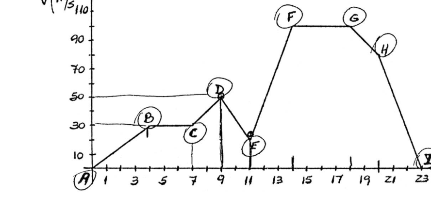
Topic: Newtonian Mechanics Metodi: Kinematic Equations, Graph Linearization Competenze: Physical Reasoning Objects: — Fonte: Testo (PDF) — p.2
**Local 38 - Dolores (Grafico spazio-tempo) **
Studia la grafica e risponde: a) Che tipo di movimento descrive ogni segmento? - Perché? b) Qual è la distanza percorsa in ogni segmento? c) In che modo. - C’è una velocità maggiore? d) realizzare i grafici spaziotempo per i segmenti DE, EF e FG. (Figura: grafico v-t)
Topic: Newtonian Mechanics Metodi: Kinematic Equations, Graph Linearization Competenze: Physical Reasoning Objects: — Fonte: Testo (PDF) — p.2
The Commission has also adopted a number of measures to ensure that the Commission is able to take appropriate measures to ensure that the measures are implemented in accordance with the common position.
He studies the graphics and answers: (a) What kind of movement does each segment describe? - Why? - I don’t know. (b) What is the distance travelled in each segment? (c) Where. Is there any higher speed? (d) To produce the space-time graphs for the DE, EF and FG segments. (Figure: graph v-t)
Topic: Newtonian Mechanics Metodi: Kinematic Equations, Graph Linearization Competenze: Physical Reasoning Objects: — Fonte: Testo (PDF) — p.2
Local 39 - Mar del Plata (Bloque fuerza paralela al piso)
Sobre un bloque de 50 kg se aplica una fuerza paralela al piso. El coeficiente de rozamiento cinético entre el piso y el bloque es de 0,4. Partiendo del reposo alcanza una velocidad de 10 m/s luego de recorrer 10 m. Calcule: a ) la variación de la energía cinética. b ) la fuerza aplicada al bloque. c ) el trabajo de la fuerza de rozamiento.
Topic: Newtonian Mechanics, Conservation of Energy Metodi: Conservation of Energy, Free-Body Diagram Competenze: Physical Reasoning Objects: Block Fonte: Testo (PDF) — p.2
**Local 39 - Mar del Plata (Blocco di forza parallela al pavimento) **
Su un blocco di 50 kg si applica una forza parallela al pavimento. Il coefficiente di rottura cinetica tra il pavimento e il blocco è di 0,4. Partendo dal riposo raggiunge una velocità di 10 m/s dopo aver percorso 10 m. Calcola: a) variazione dell’energia cinetica. b) la forza applicata al blocco. c) il lavoro della forza di rottura.
Topic: Newtonian Mechanics, Conservation of Energy Metodi: Conservation of Energy, Free-Body Diagram Competenze: Physical Reasoning Objects: Block Fonte: Testo (PDF) — p.2
The following is the list of the Member States’ official data sources:
A 50 kg block shall be subjected to a parallel force to the floor. The kinetic friction coefficient between the floor and the block is 0,4. Starting from rest it reaches a speed of 10 m/s after traveling 10 m. Calculate: (a) the change in kinetic energy. (b) the force applied to the block. c) the work of the friction force.
Topic: Newtonian Mechanics, Conservation of Energy Metodi: Conservation of Energy, Free-Body Diagram Competenze: Physical Reasoning Objects: Block Fonte: Testo (PDF) — p.2
Local 40 - Caseros (Cuerpo plano inclinado, esquema)
¿Cuánto pesa el cuerpo que esta sobre el plano inclinado? Esquema (no a escala). (figura con poleas, 6m, 8m, 4m, P, 2P, mu=0,2)
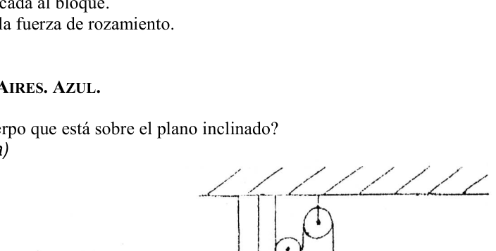
Topic: Newtonian Mechanics, Rigid Body Statics Metodi: Free-Body Diagram, Vector Decomposition Competenze: Physical Reasoning Objects: Block, Inclined Plane, Pulley Fonte: Testo (PDF) — p.2
**Local 40 - Caserotti (Cosco piatto inclinato, schema) **
Quanto pesa il corpo che sta sul piano inclinato? Schema (non a scala). (figura con pollice, 6m, 8m, 4m, P, 2P, mu=0,2)
Topic: Newtonian Mechanics, Rigid Body Statics Metodi: Free-Body Diagram, Vector Decomposition Competenze: Physical Reasoning Objects: Block, Inclined Plane, Pulley Fonte: Testo (PDF) — p.2
**Local 40 - Houses (Flat body tilted, scheme) **
How much does the body weigh on the slope? Scheme (not at scale). (Figure with pulleys, 6m, 8m, 4m, P, 2P, mu=0,2)
Topic: Newtonian Mechanics, Rigid Body Statics Metodi: Free-Body Diagram, Vector Decomposition Competenze: Physical Reasoning Objects: Block, Inclined Plane, Pulley Fonte: Testo (PDF) — p.2
Local 41 - Ibarreta (Dos trenes y mosca)
Dos trenes viajan en distintas direcciones por la misma vía. El tren A viaja a 100 Km/h y el B a 80 km/h. Cuando se encuentran a 90 Km de distancia una mosca comienza a pasar de un tren a otro a 120 km/h hasta que se aplastan al pasar el tren A a 70 Km/h. ¿Finalmente los trenes chocan? ¿Qué distancia recorre la mosca hasta que los trenes chocan?
Topic: Newtonian Mechanics Metodi: Kinematic Equations Competenze: Physical Reasoning Objects: — Fonte: Testo (PDF) — p.2
**Local 41 - Ibarreta (Due treni e mosca) **
Due treni viaggiano in direzioni diverse sulla stessa pista. Il treno A viaggia a 100 Km/h e il treno B a 80 km/h. Quando si trovano a 90 Km di distanza una mosca inizia a passare da un treno all’altro a 120 km/h fino a quando si schiacciano passando il treno A a 70 Km/h. Finalmente i treni si schiantano? Quanto percorre la mosca finché i treni non si schiantano?
Topic: Newtonian Mechanics Metodi: Kinematic Equations Competenze: Physical Reasoning Objects: — Fonte: Testo (PDF) — p.2
**Local 41 - Ibarreta (Two trains and a fly) **
Two trains travel in different directions on the same track. The A train travels at 100 km/h and the B train at 80 km/h. When they are 90 km away a fly starts to pass from one train to another at 120 km/h until they crush when passing the A train at 70 km/h. Are the trains finally colliding? How far does the fly travel until the trains collide?
Topic: Newtonian Mechanics Metodi: Kinematic Equations Competenze: Physical Reasoning Objects: — Fonte: Testo (PDF) — p.2
Local 42 - San Fernando del Valle de Catamarca (Acelerador de particulas)
Un aparato que acelera partículas atómicas. Las partículas al salir de allí, después de recorrer una vuelta chocan en una pared de un material determinado que las hace vibrar. Determinar: a) Calcular la longitud del recorrido de la partícula de 20 cm de diámetro. b) Si la partícula después de un giro a adquirido una velocidad de 4.10 m/s y luego de atravesar la muestra de espesor 6.10 m sale con una velocidad de 2 x 10 m/s. Determinar: (i)la aceleración, ii) el tiempo que tarda en atravesar la lámina, iii) dibuje con escala adecuada la aceleración en función del tiempo y la velocidad en función del tiempo.
Topic: Newtonian Mechanics Metodi: Kinematic Equations Competenze: Physical Reasoning Objects: Particle Beam Fonte: Testo (PDF) — p.2
**Local 42 - San Fernando del Valle di Catamarca (acceleratore di particelle) **
Un apparecchio che accelera le particelle atomiche. Le particelle uscendo da lì, dopo aver fatto un giro, si schiantano contro un muro di un determinato materiale che le fa vibrare. Determinare: a) Calcolare la lunghezza del percorso della particella di 20 cm di diametro. b) Se la particella dopo un giro ha acquisito una velocità di 4,10 m/s e dopo aver attraversato il campione di spessore di 6,10 m esce a velocità di 2 x 10 m/s. Determinare: (i) l’accelerazione; (ii) il tempo necessario per attraversare la lamina; (iii) disegnare con adeguata scala l’accelerazione in funzione del tempo e la velocità in funzione del tempo.
Topic: Newtonian Mechanics Metodi: Kinematic Equations Competenze: Physical Reasoning Objects: Particle Beam Fonte: Testo (PDF) — p.2
The following is the list of the Member States’ official data protection authorities.
A device that accelerates atomic particles. The particles, when they leave, after a spin, collide with a wall of a certain material that makes them vibrate. Determine: (a) Calculate the length of the particle’s path of 20 cm in diameter. (b) If the particle after a spin has acquired a speed of 4.10 m/s and after passing through the sample of 6.10 m thickness exits at a speed of 2 x 10 m/s. Determine: (i) the acceleration, (ii) the time it takes to cross the sheet, (iii) draw the acceleration with appropriate scale and speed with time.
Topic: Newtonian Mechanics Metodi: Kinematic Equations Competenze: Physical Reasoning Objects: Particle Beam Fonte: Testo (PDF) — p.2
Local 43 - D.F. Sarmiento (Bloque sobre bloque, polea)
Un bloque de masa 200gr. descansa sobre otro de masa 800gr. El conjunto es arrastrado a velocidad constante sobre una superficie horizontal no pulida, por un bloque de masa 250gr., suspendido como muestra la figura (a). Se separa el primer bloque de 200gr y se une al bloque suspendido como muestra la figura (b). ¿Cuál será ahora la aceleración del sistema?
Topic: Newtonian Mechanics Metodi: Free-Body Diagram Competenze: Physical Reasoning Objects: Block, Pulley, String Fonte: Testo (PDF) — p.2
Local 43 - D.F. Sorgimento (blocco su blocco, pollea)
Un blocco di massa di 200 gr. Si sta appoggiando su un altro di massa 800 gr. L’insieme è trascinato a velocità costante su una superficie orizzontale non lucidata da un blocco di massa 250 gr, sospeso come mostrato nella figura (a). Se parte il primo blocco di 200gr e si unisce al blocco sospeso come mostrato nella figura (b). Qual è l’accelerazione del sistema?
Topic: Newtonian Mechanics Metodi: Free-Body Diagram Competenze: Physical Reasoning Objects: Block, Pulley, String Fonte: Testo (PDF) — p.2
The Commission shall adopt delegated acts in accordance with Article 21 of this Regulation. The following table shows the methodology used for calculating the value of the product:
A block of mass of 200 grams. rests on another 800g mass. The assembly is dragged at a constant speed over an unpolished horizontal surface by a 250 gr mass block suspended as shown in Figure (a). The first 200gr block is separated and joined to the suspended block as shown in Figure (b). What will the acceleration of the system be now?
Topic: Newtonian Mechanics Metodi: Free-Body Diagram Competenze: Physical Reasoning Objects: Block, Pulley, String Fonte: Testo (PDF) — p.2
Local 44 - Mar del Plata (Viga uniforme, equilibrio)
La viga uniforme AB tiene 4 m de largo y pesa 100 kgf. La viga reposa en A y puede rotar alrededor del punto C. Un hombre de 75 kgf camina a lo largo de la viga partiendo de A. Calcular la máxima distancia que el hombre puede caminar a partir de A manteniendo el equilibrio. (figura, 2,5 m, C, B)
Topic: Rigid Body Statics Metodi: Torque & Angular Momentum Analysis Competenze: Physical Reasoning Objects: Beam Fonte: Testo (PDF) — p.2
**Local 44 - Mar del Plata (Viga uniforme, equilibrio) **
Il fascio uniforme AB è lungo 4 m e pesa 100 kgf. Il viglio si trova su A e può ruotare attorno al punto C. Un uomo di 75 kgc cammina lungo il vigno partendo da A. Calcolare la distanza massima che un uomo può camminare da A mantenendo l’equilibrio. (Figura, 2,5 m, C, B)
Topic: Rigid Body Statics Metodi: Torque & Angular Momentum Analysis Competenze: Physical Reasoning Objects: Beam Fonte: Testo (PDF) — p.2
The Commission shall, by means of implementing acts, adopt delegated acts in accordance with Article 21 of Regulation (EC) No 1272/2009.
The AB uniform beam is 4 m long and weighs 100 kgf. The beam rests on A and can rotate around the point C. A 75-pound man walks along the beam starting from A. Calculate the maximum distance a man can walk from A while maintaining balance. (Figure, 2.5 m, C, B)
Topic: Rigid Body Statics Metodi: Torque & Angular Momentum Analysis Competenze: Physical Reasoning Objects: Beam Fonte: Testo (PDF) — p.2
Local 45 - Gualeguaychu (Superman y Luisa Lane)
Luisa Lane, la chica enamorada de Superman en esta historieta, es arrojada desde lo alto de un edificio de 180 m de altura y desciende en caída libre. Superman llega a lo alto del edificio a los 4.0 s después del inicio de la caída de Luisa y se lanza, con velocidad constante, para salvarla. ¿Cuál es el mínimo valor de la velocidad que Superman debe desarrollar para alcanzar a una arrebatadora antes de que choque contra el suelo? (Considera m/s).
Topic: Newtonian Mechanics Metodi: Kinematic Equations Competenze: Physical Reasoning Objects: Projectile Fonte: Testo (PDF) — p.2
**Local 45 - Gualeguaychu (Superman e Luisa Lane) **
Luisa Lane, la ragazza innamorata di Superman in questo film, viene gettata da un edificio alto 180 metri e scende in caduta libera. Superman arriva al vertice del palazzo a 4.0 secondi dopo che Luisa ha iniziato a cadere e lancia, a velocità costante, per salvarla. Qual è il minimo valore della velocità che Superman deve sviluppare per raggiungere un raptor prima che colpisca il suolo? (Considerato m/s).
Topic: Newtonian Mechanics Metodi: Kinematic Equations Competenze: Physical Reasoning Objects: Projectile Fonte: Testo (PDF) — p.2
The first is the “Show Me” section.
Luisa Lane, the girl in love with Superman in this comic, is thrown from a 180-meter-high building and descends in free fall. Superman reaches the top of the building at 4.0 seconds after Luisa’s fall begins and launches, at constant speed, to save her. What is the minimum value of the speed Superman must develop to reach a raptor before it hits the ground? (It is m/s).
Topic: Newtonian Mechanics Metodi: Kinematic Equations Competenze: Physical Reasoning Objects: Projectile Fonte: Testo (PDF) — p.2
Local 46 - Caseros (Peso en la Tierra y la Luna)
Un astronauta pesa en la tierra 85 Kg. Se desea saber: a) Si su masa es igual en la tierra que en la Luna. Justificar. b) Si su peso es igual en la tierra que en la Luna. Justificar.
Topic: Gravitation Metodi: Newton’s Law of Gravitation Competenze: Physical Reasoning Objects: Planet Fonte: Testo (PDF) — p.2
**Local 46 - Caseros (Peso sulla Terra e sulla Luna) **
Un astronauta pesa 85 kg sulla terra. Si desidera sapere: a) Se la sua massa sulla Terra è uguale a quella della Luna. Giustificare. b) Se il suo peso sulla Terra è uguale a quello della Luna. Giustificare.
Topic: Gravitation Metodi: Newton’s Law of Gravitation Competenze: Physical Reasoning Objects: Planet Fonte: Testo (PDF) — p.2
**Local 46 - Households (Weight on the Earth and the Moon) **
An astronaut weighs 85 kg on Earth. You want to know: (a) If its mass is the same on the earth as on the moon. Justify it. (b) If its weight is the same on earth as on the moon. Justify it.
Topic: Gravitation Metodi: Newton’s Law of Gravitation Competenze: Physical Reasoning Objects: Planet Fonte: Testo (PDF) — p.2
Local 47 - General Pico (Dos bloques polea, planos sin rozamiento)
Dos bloques están unidos por una pequeña polea y descansan sobre planos sin rozamiento, como indica la figura: a) En que sentido se moverá el sistema? b) Cual es la aceleración de los bloques? c) Cual es la tensión de la cuerda? (Datos: m/s, m/s; figura 100 kg, 30 kg, 30°, 53°)
Topic: Newtonian Mechanics Metodi: Free-Body Diagram, Vector Decomposition Competenze: Physical Reasoning Objects: Block, Pulley, Inclined Plane Fonte: Testo (PDF) — p.2
**Local 47 - General Peak (Due blocchi di pollea, piani senza rottura) **
Due blocchi sono uniti da una piccola polea e riposano su piani senza ruggine, come indica la figura: a) In che senso il sistema si muoverà? b) Qual è l’accelerazione dei blocchi? c) Qual è la tensione della corda? (Dati: m/s, m/s; figura 100 kg, 30 kg, 30°, 53°)
Topic: Newtonian Mechanics Metodi: Free-Body Diagram, Vector Decomposition Competenze: Physical Reasoning Objects: Block, Pulley, Inclined Plane Fonte: Testo (PDF) — p.2
The following table shows the results of the calculation of the total number of samples:
Two blocks are joined by a small pole and rest on flat, unrawn planes, as shown in the figure: (a) In what sense will the system move? (b) What is the acceleration of the blocks? (c) What is the tension of the rope? (Dates: m/s, m/s; figure 100 kg, 30 kg, 30°, 53°)
Topic: Newtonian Mechanics Metodi: Free-Body Diagram, Vector Decomposition Competenze: Physical Reasoning Objects: Block, Pulley, Inclined Plane Fonte: Testo (PDF) — p.2
Local 48 - Ibarreta (Colectivo Formosa-Pirane-Ibarreta)
Un colectivo sale de Formosa a las 0:30 hacia Pirane -100 KM.- a 60 km/h. Allega durante 15 minutos y parte con una aceleración de 200 km/h hasta comandante Fontana -41 km- donde para 5 minutos y continua el viaje hasta Ibarreta -202 km de Formosa- a 70 km/h. A qué hora llega a Ibarreta? Que tiempo dura el viaje?
Topic: Newtonian Mechanics Metodi: Kinematic Equations Competenze: Physical Reasoning Objects: — Fonte: Testo (PDF) — p.2
**Local 48 - Ibarreta (Collectivo Formosa-Pirane-Ibarreta) **
Un collettivo parte da Formosa alle 0:30 per Pirane -100 KM.- a 60 km/h. Arriva per 15 minuti e parte con un’accelerazione di 200 km/h fino al comandante Fontana -41 km- dove per 5 minuti e continua il viaggio fino a Ibarreta -202 km da Formosa- a 70 km/h. A che ora arriva a Ibarreta? Quanto dura il viaggio?
Topic: Newtonian Mechanics Metodi: Kinematic Equations Competenze: Physical Reasoning Objects: — Fonte: Testo (PDF) — p.2
The Commission has decided to extend the period of validity of the measures to be taken to ensure that the measures taken are implemented in accordance with Article 107 (1) TFEU.
A collective leaves Formosa at 0:30 to Pirane -100 KM.- at 60 km/h. It arrives for 15 minutes and leaves at an acceleration of 200 km/h to commander Fontana -41 km- where for 5 minutes and continues the journey to Ibarreta -202 km from Formosa - at 70 km/h. What time does he arrive at Ibarreta? How long is the trip?
Topic: Newtonian Mechanics Metodi: Kinematic Equations Competenze: Physical Reasoning Objects: — Fonte: Testo (PDF) — p.2
Local 49 - Caseros (Honda, piedra vertical)
Un niño sentado sobre el piso lanza con su honda una piedra verticalmente hacia arriba con m/s para caer en pleno reposo en una nube de un árbol a 50m. de altura. (Despreciamos la longitud de la honda). a)¿Qué altura alcanza la piedra? b)¿Desde qué altura le proyectó la piedra en el suelo? c)¿Donde se encuentra la piedra en su máxima altura ( 0,5 seg)? d)¿Qué velocidad lleva la piedra a los 5,5 seg?
Topic: Newtonian Mechanics Metodi: Kinematic Equations Competenze: Physical Reasoning Objects: Projectile Fonte: Testo (PDF) — p.2
**Local 49 - Caseros (Honda, pietra verticale) **
Un bambino seduto sul pavimento lancia con la sua sponda una pietra verticalmente verso l’alto con m/s per cadere a riposo in un nubo da un albero a 50m. di altezza. (Spregiamo la lunghezza dellaonda). a) A che altezza raggiunge la pietra? b) Da che altezza le ha gettato la pietra sul suolo? c) Dove si trova la pietra a massima altezza (0,5 seg)? d) A che velocità porta la pietra a 5,5 secondi?
Topic: Newtonian Mechanics Metodi: Kinematic Equations Competenze: Physical Reasoning Objects: Projectile Fonte: Testo (PDF) — p.2
The Commission has decided to extend the period of validity of the measures.
A child sitting on the floor throws a stone vertically up with a hove with m/s to fall at rest into a tree cloud at 50m. of height. (We disregard the length of the honda). (a) How high does the stone reach? (b) From what height did you throw the stone at him? (c) Where is the stone at its maximum height (0.5 sec)? (d) What speed does the stone travel at 5.5 seconds?
Topic: Newtonian Mechanics Metodi: Kinematic Equations Competenze: Physical Reasoning Objects: Projectile Fonte: Testo (PDF) — p.2
Local 50 - San Nicolas (Nieve, lanzamiento de viveres)
En el men de pila la ciudad de Rio Gallegos, fue tapada por la nieve. La sensación térmica fue de 27° bajo cero. Fue declarada zona de emergencia. El aeropuerto fue clausurado temporariamente. a) Expresa la temperatura en °F. b) Si se necesitan enviar provisiones a dicha población por medio de un avión que vuela a 2940 m de altura y una velocidad de 200 Km/h, ¿cuántos metros antes de llegar al lugar deberá lanzar los víveres?
Topic: Newtonian Mechanics, Thermodynamics Metodi: Kinematic Equations Competenze: Physical Reasoning Objects: Projectile Fonte: Testo (PDF) — p.2
**Local 50 - San Nicolas (Nieve, lancio di cisterne) **
La città di Rio Gallegos, in mare, è stata coperta dalla neve. La sensazione termica è stata 27° sotto zero. È stata dichiarata zona di emergenza. L’aeroporto è stato temporaneamente chiuso. a) Esprime la temperatura in °F. b) Se è necessario inviare provviste a tale popolazione da un aereo che vola ad un’altezza di 2940 m e a una velocità di 200 Km/h, quanti metri prima di arrivare al luogo dovrà lanciare i provvisti?
Topic: Newtonian Mechanics, Thermodynamics Metodi: Kinematic Equations Competenze: Physical Reasoning Objects: Projectile Fonte: Testo (PDF) — p.2
The Commission has decided to extend the period of validity of the measures to be taken to ensure that the measures taken are implemented in accordance with the objectives of the programme.
In the main, the city of Rio Gallegos was covered in snow. The thermal sensation was 27° below zero. It was declared an emergency zone. The airport was temporarily closed. (a) Expresses the temperature in °F. (b) If supplies are to be sent to the population by means of an aircraft flying at 2940 m altitude and 200 km/h, how many metres before arriving at the place must the supplies be thrown?
Topic: Newtonian Mechanics, Thermodynamics Metodi: Kinematic Equations Competenze: Physical Reasoning Objects: Projectile Fonte: Testo (PDF) — p.2
Local 51 - Capital Federal (Tres cuerpos, hilos, mesa con polea)
Se tienen tres cuerpos de 1 kg unidos mediante dos hilos de masa despreciable y de 3 m de longitud. Se los coloca según la figura dejando 2 m de separación entre los dos de arriba y entre el del medio y el borde de la mesa. Entre los cuerpos y la mesa hay rozamiento con coeficientes y y la polea tiene masa despreciable. Si los soltaron: a) ¿Se mueve el sistema? b) ¿Con qué aceleración? c) Si cuando la cuerda se estira completamente suponemos que los cuerpos comienzan a moverse con la misma velocidad, ¿cuál es esta? d) ¿Cuál es la aceleración del cuerpo que cuelga al estirarse la cuerda? e) Si experimenta hasta que el cuerpo del medio llegue al borde de la mesa, ¿cuánta energía se perdió por rozamiento y cuánta se perdió en el punto c)? f) Repita los puntos a), b), d) y c) cuando se colocan los cuerpos como en la posición inicial, pero dejando 3 m entre los cuerpos que están sobre la mesa. Datos: m/s
Topic: Newtonian Mechanics, Conservation of Energy Metodi: Free-Body Diagram, Conservation of Energy Competenze: Physical Reasoning Objects: Block, Pulley, String Fonte: Testo (PDF) — p.2
**Local 51 - Capitale federale (tre corpi, fili, tavolo con polla) **
Si hanno tre corpi di 1 kg uniti da due fili di massa sconsiderata e lunghi 3 m. Si collocano secondo la figura lasciando 2 m di distanza tra i due di sopra e tra quello del mezzo e il bordo del tavolo. Tra i corpi e la tavola c’è un’acciaio con coefficienti e e la polla ha una massa scadente. Se li hanno rilasciati: a) Il sistema si muove? b) Con quale accelerazione? c) Se quando la corda si allunga completamente supponiamo che i corpi iniziino a muoversi alla stessa velocità, qual è questa? d) Qual è l’accelerazione del corpo che si appende quando si estende la corda? e) Se si sperimenta fino a quando il corpo medio raggiunge il bordo del tavolo, quanta energia è stata persa per rasatura e quanta energia è stata persa al punto c)? f) Ripetere i punti a), b), d) e c) quando i corpi sono posizionati come nella posizione iniziale, ma lasciando 3 m tra i corpi che sono sul tavolo. Data: m/s
Topic: Newtonian Mechanics, Conservation of Energy Metodi: Free-Body Diagram, Conservation of Energy Competenze: Physical Reasoning Objects: Block, Pulley, String Fonte: Testo (PDF) — p.2
Local 51 - Capital Federal (Tres cuerpos, hilos, mesa con polea)
They have three bodies of 1 kg, connected by two threads of scornful mass and 3 m long. They are placed according to the figure leaving 2 m of separation between the two above and between the middle and the edge of the table. Between the bodies and the table there is friction with and coefficients and the pulley has a despicable mass. If they let them go: (a) Is the system moving? (b) With what acceleration? c) If when the rope is fully stretched we assume that the bodies start moving at the same speed, what is this? (d) What is the acceleration of the body that hangs when the rope is stretched? (e) If you experiment until the middle body reaches the edge of the table, how much energy was lost by rubbing and how much was lost at point (c)? (f) Repeat points (a), (b), (d) and (c) when the bodies are placed as in the initial position, but leaving 3 m between the bodies on the table. Datos: m/s
Topic: Newtonian Mechanics, Conservation of Energy Metodi: Free-Body Diagram, Conservation of Energy Competenze: Physical Reasoning Objects: Block, Pulley, String Fonte: Testo (PDF) — p.2
Local 52 - Bahia Blanca (Auto policia, infractor)
Un coche de policía pretende alcanzar a un infractor que marcha con una velocidad constante de 125 km/h. Suponiendo que el móvil de la policía parte del reposo, en el mismo instante en que el infractor lo adelanta, con una aceleración constante de 8 km/seg hasta alcanzar su máxima velocidad de 190 km/h, que luego mantiene constante. a) Determinar el tiempo requerido para que el coche policial de alcance al infractor. b) Determinar la distancia recorrida por el patrullero hasta dar alcance al infractor. c) Realizar gráficas posición-tiempo, velocidad-tiempo y aceleración-tiempo para ambos vehículos. Identificando en las dos primeras, las magnitudes requeridas en las preguntas anteriores.
Topic: Newtonian Mechanics Metodi: Kinematic Equations Competenze: Physical Reasoning Objects: — Fonte: Testo (PDF) — p.2
**Local 52 - Bahia Bianca (auto di polizia, infrazione) **
Una macchina di polizia vuole raggiungere un’infrazione che cammina a una velocità costante di 125 km/h. Supponiamo che il cellulare della polizia parte dal riposo, nello stesso istante in cui l’infractore lo avanza, con un’accelerazione costante di 8 km/sec fino a raggiungere la sua velocità massima di 190 km/h, che poi mantiene costante. a) Determinare il tempo necessario per raggiungere l’automobile della polizia. b) Determinare la distanza percorsa dal patrullero fino a raggiungere l’infractor. c) realizzare grafici di posizione-tempo, velocità-tempo e accelerazione-tempo per entrambi i veicoli. Identificando nelle prime due, le dimensioni richieste nelle domande precedenti.
Topic: Newtonian Mechanics Metodi: Kinematic Equations Competenze: Physical Reasoning Objects: — Fonte: Testo (PDF) — p.2
The Commission has decided to extend the period of validity of the application of this Regulation to the Member States.
A police car is trying to catch a criminal who is moving at a constant speed of 125 km/h. Assuming that the police mobile leaves the rest, at the same moment the offender advances it, with a constant acceleration of 8 km/s until it reaches its maximum speed of 190 km/h, which then keeps constant. (a) Determine the time required for the police car to reach the offender. (b) Determine the distance travelled by the patrolman to reach the offender. (c) To perform position-time, speed-time and acceleration-time charts for both vehicles. Identifying in the first two the magnitude required in the previous questions.
Topic: Newtonian Mechanics Metodi: Kinematic Equations Competenze: Physical Reasoning Objects: — Fonte: Testo (PDF) — p.2
Local 53 - Mar del Plata (Grafico dos moviles rectilineos)
De la gráfica de dos movimientos rectilíneos, representada a continuación, determine: a) ¿el tipo de movimiento de cada móvil. b) las velocidades iniciales de cada uno. c) las velocidades iniciales de cada móvil. d) el tiempo que cada móvil tarda en llegar al origen de coordenadas. e) la separación entre los móviles a los 10 segundos. (figura grafico x-t, Movil 1, Movil 2)
Topic: Newtonian Mechanics Metodi: Kinematic Equations, Graph Linearization Competenze: Physical Reasoning Objects: — Fonte: Testo (PDF) — p.2
**Local 53 - Mar del Plata (grafico a due movimenti rettilineari) **
Dal grafico di due movimenti rettilini, rappresentato di seguito, determinare: a) il tipo di movimento di ciascun mobile. b) le velocità iniziali di ciascuna. c) le velocità iniziali di ciascun cellulare. d) il tempo impiegato per ogni cellulare per raggiungere l’origine delle coordinate. e) la separazione tra i cellulari ogni 10 secondi. (grafico x-t, Movil 1, Movil 2)
Topic: Newtonian Mechanics Metodi: Kinematic Equations, Graph Linearization Competenze: Physical Reasoning Objects: — Fonte: Testo (PDF) — p.2
**Local 53 - Silver Sea (Two straight linear movements chart) **
From the graph of two straight movements, shown below, determine: (a) the type of movement of each mobile. (b) the initial speeds of each. (c) the initial speeds of each mobile. (d) the time it takes each mobile to reach the coordinate source. (e) the separation between the mobiles every 10 seconds. (Graph x-t, Movil 1, Movil 2)
Topic: Newtonian Mechanics Metodi: Kinematic Equations, Graph Linearization Competenze: Physical Reasoning Objects: — Fonte: Testo (PDF) — p.2
Local 54 - Capital Federal (Jupiter, satelite, gravedad)
La distancia entre el centro del planeta Júpiter y uno de sus satélites es 27 veces su radio. Dicho satélite describe una órbita en círculo con período m/seg y tiro de tiro de 30 °. Calcular la aceleración de la gravedad en la superficie de Júpiter, sabiendo que su radio es de 71000km.
Topic: Gravitation Metodi: Kepler’s Laws, Newton’s Law of Gravitation Competenze: Physical Reasoning Objects: Planet, Satellite Fonte: Testo (PDF) — p.2
**Local 54 - Capitale federale (Jupiter, satellite, gravità) **
La distanza tra il centro del pianeta Giove e uno dei suoi satelliti è 27 volte il suo raggio. Tale satellite descrive un’orbita in cerchio con periodo m/sec e tiro di tiro di 30 °. Calcolare l’accelerazione della gravità sulla superficie di Giove, sapendo che il suo raggio è di 71000 km.
Topic: Gravitation Metodi: Kepler’s Laws, Newton’s Law of Gravitation Competenze: Physical Reasoning Objects: Planet, Satellite Fonte: Testo (PDF) — p.2
The Commission has decided to extend the period of validity of the agreement.
The distance between the center of Jupiter and one of its satellites is 27 times its radius. The satellite describes a circular orbit with a period m/sec and a launching rate of 30 °. Calculate the acceleration of gravity on the surface of Jupiter, knowing that its radius is 71000 km.
Topic: Gravitation Metodi: Kepler’s Laws, Newton’s Law of Gravitation Competenze: Physical Reasoning Objects: Planet, Satellite Fonte: Testo (PDF) — p.2
Local 55 - Corrientes (Proyectil y antiproyectil)
Desde un cierto punto A se lanza un proyectil con m/seg y ángulo de tiro de 30°. Desde un punto B, ubicado en la misma recta horizontal que A, y distante 700 m de éste, se lanza verticalmente hacia arriba, con m/seg un antiproyectil. ¿ En qué instante se debe disparar el antiproyectil para que al ascender, choque con el proyectil ?
Topic: Newtonian Mechanics Metodi: Kinematic Equations, Vector Decomposition Competenze: Physical Reasoning Objects: Projectile Fonte: Testo (PDF) — p.2
**Local 55 - Correnti (proiettore e antiproiettore) **
Da un certo punto A viene lanciato un proiettile con m/seg e angolo di lancio di 30°. Da un punto B, situato nello stesso retto orizzontale di A, e distante 700 m da esso, viene lanciato verticalmente verso l’alto, con m/seg un antiproiettile. A che punto deve essere sparo il proiettile per fargli colpire il proiettile?
Topic: Newtonian Mechanics Metodi: Kinematic Equations, Vector Decomposition Competenze: Physical Reasoning Objects: Projectile Fonte: Testo (PDF) — p.2
The Commission shall adopt delegated acts in accordance with Article 21 of Regulation (EC) No 1290/2009.
From a certain point A a projectile is launched with m/sec and a shooting angle of 30°. From a point B, located in the same horizontal straight as A, and 700 m away from it, a projectile is launched vertically upwards, with m/sec. What time should the anti-ballistic be fired so that as it ascends, it hits the projectile?
Topic: Newtonian Mechanics Metodi: Kinematic Equations, Vector Decomposition Competenze: Physical Reasoning Objects: Projectile Fonte: Testo (PDF) — p.2
Local 56 - General Pico (Remolque, caja, camion)
El remolque de la figura debe viajar a una velocidad de 90 km/hora, si el coeficiente de rozamiento estático () entre el remolque y la caja es de 0.15; determinar: a)La distancia mínima que debe acelerar para evitar que la caja se corra b)Si el camión recorre el gran puente y se sujeta para ella la caja al camión con una cuerda, cuál es la tensión de esta. (figura camion)
Topic: Newtonian Mechanics Metodi: Free-Body Diagram, Kinematic Equations Competenze: Physical Reasoning Objects: Block, Cart Fonte: Testo (PDF) — p.2
**Local 56 - General Pico (remolco, cassetta, camion) **
Il rimorchio della figura deve viaggiare a una velocità di 90 km/h, se il coefficiente di rottura statica () tra il rimorchio e la cassa è di 0,15; determinare: a) La distanza minima da accelerare per evitare che la cassa corra b) Se il camion attraversa il ponte grande e la cassa è attaccata al camion con una corda, qual è la tensione del ponte. (Figura camion)
Topic: Newtonian Mechanics Metodi: Free-Body Diagram, Kinematic Equations Competenze: Physical Reasoning Objects: Block, Cart Fonte: Testo (PDF) — p.2
The Commission has decided to extend the period of validity of the agreement.
The figure trailer shall travel at a speed of 90 km/h if the static friction coefficient () between the trailer and the box is 0,15; determine: (a) The minimum distance to be accelerated to prevent the box from running (b) If the truck crosses the main bridge and the box is attached to the truck with a rope, what is the tension of the truck? (pictured truck)
Topic: Newtonian Mechanics Metodi: Free-Body Diagram, Kinematic Equations Competenze: Physical Reasoning Objects: Block, Cart Fonte: Testo (PDF) — p.2
Local 57 - Resistencia (Caja plano inclinado, energia)
Un hombre da un empujón a una caja cuya masa es de 4 kg. Como consecuencia la misma se desplaza con una velocidad inicial de 6 m/s por un plano horizontal. Luego comienza a subir por un plano inclinado de 30°. Hay rozamiento entre el cuerpo y la superficie del plano inclinado. Por esta causa, el cuerpo se detiene a la altura de 1,5 m. Calcular: a. La fuerza de rozamiento sobre el cuerpo, suponiendo que se constante. b) El coeficiente de rozamiento. c) La energía cinética en el punto A. d) La energia potencial en el punto B. e) Tiempo que tarda en recorrer la distancia . (figura plano inclinado, , A, B)
Topic: Conservation of Energy, Newtonian Mechanics Metodi: Conservation of Energy, Free-Body Diagram, Kinematic Equations Competenze: Physical Reasoning Objects: Block, Inclined Plane Fonte: Testo (PDF) — p.2
**Local 57 - Resistenza (Bassa piatta inclinata, energia) **
Un uomo spinge una scatola di 4 kg. Di conseguenza, si sposta con una velocità iniziale di 6 m/s per un piano orizzontale. Comincia poi ad ascendere per un piano inclinato di 30°. C’è un’acciaio tra il corpo e la superficie del piano inclinato. Per questo il corpo si ferma ad un’altezza di 1,5 metri. Calcolo: a. La forza di ruggine sul corpo, supponendo che sia costante. b) Coefficiente di rasatura. c) Energia cinetica al punto A. d) L’energia potenziale del punto B. e) Tempo necessario per percorrere la distanza . (figura piana inclinata, , A, B)
Topic: Conservation of Energy, Newtonian Mechanics Metodi: Conservation of Energy, Free-Body Diagram, Kinematic Equations Competenze: Physical Reasoning Objects: Block, Inclined Plane Fonte: Testo (PDF) — p.2
The following table shows the results of the calculation of the weighted average weight of the vehicle:
A man pushes a box that weighs four kilograms. As a result, it moves at an initial speed of 6 m/s on a horizontal plane. Then it starts to rise up a slope of 30°. There’s a friction between the body and the surface of the inclined plane. For this reason, the body stops at 1.5 m. Calculation of the a. The force of friction on the body, assuming it is constant. (b) The coefficient of friction. (c) Kinetic energy at point A. (d) The potential energy at point B. (e) Time taken to travel the distance . (Figure flat tilted, , A, B)
Topic: Conservation of Energy, Newtonian Mechanics Metodi: Conservation of Energy, Free-Body Diagram, Kinematic Equations Competenze: Physical Reasoning Objects: Block, Inclined Plane Fonte: Testo (PDF) — p.2
Local 58 - Resistencia (Circuito, calorias, voltimetros)
En la resistencia del circuito de la figura se disipan 23,9 calorías en cada segundo. Calcular las lecturas de los voltímetros y el amperímetro. (figura: , , , )
Topic: Circuits Metodi: Kirchhoff’s Laws, Equivalent Circuit Reduction Competenze: Physical Reasoning Objects: Resistor, Battery, Galvanometer Fonte: Testo (PDF) — p.2
**Local 58 - Resistenza (circuito, calorie, voltimetro) **
La resistenza del circuito della figura consente di dissipare 23,9 calorie al secondo. Calcolare le letture dei voltometri e dell’ampimetro. (Figura: , , , )
Topic: Circuits Metodi: Kirchhoff’s Laws, Equivalent Circuit Reduction Competenze: Physical Reasoning Objects: Resistor, Battery, Galvanometer Fonte: Testo (PDF) — p.2
Local 58 - Resistencia (Circuito, calorias, voltimetros)
In the resistance of the figure circuit, 23,9 calories are dissipated per second. Calculate the readings of the voltometers and the ampere. (figura: , , , )
Topic: Circuits Metodi: Kirchhoff’s Laws, Equivalent Circuit Reduction Competenze: Physical Reasoning Objects: Resistor, Battery, Galvanometer Fonte: Testo (PDF) — p.2
Local 59 - San Fernando del Valle de Catamarca (Esfera y pendulo cargados)
Considere una esfera A cargada y un péndulo B también cargado, ambos con cargas de igual magnitud pero de signos contrarios.( Ver figura). Sabiendo que B está en equilibrio y que su masa tiene un valor de 10g a) Realice un diagrama del cuerpo libre donde analice las fuerzas que participan en el sistema péndulo-esfera. b) Plantee las ecuaciones de equilibrio. c) Calcule la carga de c/u de estos cuerpos. d) ¿Cuál será la posición y signo de una tercera carga, de igual magnitud a las anteriores, de modo que provoque que la péndulo quede en posición vertical ?. (figura, 5 cm, L=8 cm)
Topic: Electrostatics Metodi: Coulomb’s Law, Free-Body Diagram Competenze: Physical Reasoning Objects: Point Charge, Pendulum Fonte: Testo (PDF) — p.2
**Local 59 - San Fernando del Valle di Catamarca (Sfera e pendolo carico) **
Considera una sfera A carica e un pendolo B anche carica, entrambi con carichi di uguale magnitudo ma di segni opposti. Sapendo che B è in equilibrio e che la sua massa ha un valore di 10g a) Realizzare un diagramma del corpo libero che analizzi le forze che partecipano al sistema pendolo-sfera. b) Sulla base delle equazioni di equilibrio. c) Calcolare il carico di c/u di questi corpi. d) Qual è la posizione e il segno di una terza carica, di grandezza uguale a quelle precedenti, in modo da far sì che il pendolo rimanga in posizione verticale? (figura, 5 cm, L=8 cm)
Topic: Electrostatics Metodi: Coulomb’s Law, Free-Body Diagram Competenze: Physical Reasoning Objects: Point Charge, Pendulum Fonte: Testo (PDF) — p.2
**Local 59 - San Fernando del Valle de Catamarca (Ball and pendulum loaded) **
Consider a loaded A sphere and a loaded B pendulum, both with charges of equal magnitude but of opposite signs. Knowing that B is in equilibrium and that its mass is worth 10g (a) Draw a diagram of the free body where you analyze the forces involved in the pendulum-sphere system. (b) Set the equilibrium equations. (c) Calculate the c/u load of these bodies. (d) What will be the position and sign of a third load, of the same magnitude as the previous ones, so as to cause the pendulum to remain in vertical position? (Figure, 5 cm, L=8 cm)
Topic: Electrostatics Metodi: Coulomb’s Law, Free-Body Diagram Competenze: Physical Reasoning Objects: Point Charge, Pendulum Fonte: Testo (PDF) — p.2
Local 60 - Florida (Condensadores en paralelo, energia)
Un condensador de 5 µF de capacidad se carga a 70V y se conecta, seguidamente, en paralelo con otro de 10 µF cargado a 150V. Hallar: a)La carga y diferencia de potencial de la asociación, b)la carga de cada condensador del sistema, c)la energía total almacenada, d)la energía total almacenada en los dos condensadores antes de asociarlos.
Topic: Electrostatics, Circuits Metodi: Equivalent Circuit Reduction, Electric Potential Method Competenze: Physical Reasoning Objects: Capacitor Fonte: Testo (PDF) — p.2
**Local 60 - Florida (Condensatori in parallelo, energia) **
Un condensatore a 5 μF di capacità si carica a 70 V e viene quindi collegato in parallelo con un altro condensatore a 10 μF a 150 V. Trovare: (a) carico e differenza di potenziale dell’associazione; (b) carico di ciascun condensatore del sistema; (c) totale energia immagazzinata; (d) totale energia immagazzinata nei due condensatori prima di associarli.
Topic: Electrostatics, Circuits Metodi: Equivalent Circuit Reduction, Electric Potential Method Competenze: Physical Reasoning Objects: Capacitor Fonte: Testo (PDF) — p.2
The following is the list of the types of energy used in the production of electricity:
A capacitance capacitor of 5 μF is charged at 70V and connected in parallel to another capacitor of 10 μF charged at 150V. Find out: (a) The load and potential difference of the combination; (b) the load of each system capacitor; (c) the total energy stored; (d) the total energy stored in the two capacitors before joining them.
Topic: Electrostatics, Circuits Metodi: Equivalent Circuit Reduction, Electric Potential Method Competenze: Physical Reasoning Objects: Capacitor Fonte: Testo (PDF) — p.2
Local 61 - Capital Federal (Motor electrico, factor de potencia)
Un motor eléctrico de 2 HP para 220 V de corriente alterna monofásica de frecuencia Hz, se emplea para levantar a un cuerpo de 50 kg con una velocidad constante. a) Hallar la velocidad con que asciende el cuerpo. b) Un voltímetro conectado en los bornes del motor indica 1760 W, ¿cuál es el rendimiento del motor? c) ¿Qué energía en Kwh consumirá el motor al elevar el cuerpo 40 metros? d) Un amperímetro conectado en el circuito arroja una lectura de 10 A, ¿cuál es el factor de potencia del motor? e) Corregir el factor de potencia en atraso mediante una batería de capacitores ¿de qué valor debe ser la capacitancia? f) Hallar el porcentaje de reducción de la corriente de línea después de haber corregido el factor de potencia. g) Representar un circuito eléctrico que represente la situación planteada conectando como corresponde los instrumentos, la carga y la batería de capacitores. h) ¿A qué frecuencia resonará el circuito? y Q?. i) ¿Qué igualdad se podría conseguir mediante las lecturas (y cálculos correspondientes) de los instrumentos en el caso anterior? Considerar instrumentos ideales.
Topic: Circuits, Electromagnetism Metodi: Equivalent Circuit Reduction, Kirchhoff’s Laws Competenze: Physical Reasoning Objects: Capacitor, Battery, Galvanometer Fonte: Testo (PDF) — p.2
**Local 61 - capitale federale (motore elettrico, fattore di potenza) **
Un motore elettrico a 220 V di corrente alternativa monopassiale a frequenza Hz, da 2 HP, è utilizzato per sollevare un corpo da 50 kg a velocità costante. a) Calcolare la velocità con cui il corpo sale. b) Un voltometro collegato ai bordi del motore indica 1760 W, qual è la performance del motore? c) Che energia consumerà il motore in Kwh alzando il corpo a 40 metri? d) Un amperimetro collegato al circuito produce una lettura di 10 A, qual è il fattore di potenza del motore? e) Correzione del fattore di potenza in ritardo con una batteria di capacitori f) Determinare la percentuale di riduzione del corrente di linea dopo aver corretto il fattore di potenza. g) Presenta un circuito elettrico che rappresenti la situazione in questione collegando, in modo appropriato, gli strumenti, la carica e la batteria dei capacitori. h) A che frequenza si farà il risonamento del circuito? y Q?. (i) Che parità potrebbe essere ottenuta mediante le letture (e i relativi calcoli) degli strumenti nel caso precedente? Considerare gli strumenti ideali.
Topic: Circuits, Electromagnetism Metodi: Equivalent Circuit Reduction, Kirchhoff’s Laws Competenze: Physical Reasoning Objects: Capacitor, Battery, Galvanometer Fonte: Testo (PDF) — p.2
The Commission shall, in accordance with Article 21 of Regulation (EC) No 1272/2009, adopt implementing acts laying down the rules on the application of this Regulation.
An electric motor of 2 HP for 220 V of single-phase alternating current of Hz frequency is used to lift a 50 kg body at a constant speed. (a) Find the speed at which the body is lifting. (b) A voltage meter connected to the engine terminals indicates 1760 W, what is the engine performance? (c) What energy in Kwh will the engine consume when lifting the body 40 meters? d) An ampere connected to the circuit gives a reading of 10 A, what is the engine power factor? (e) Correction of the power factor in arrears by a capacitor battery. (f) Find the percentage of line current reduction after the power factor has been corrected. (g) To represent an electrical circuit representing the situation in question by connecting the instruments, the load and the capacitor battery accordingly. (h) How often will the circuit resonate? y Q?. (i) What equality could be achieved by the readings (and corresponding calculations) of the instruments in the previous case? Consider ideal instruments.
Topic: Circuits, Electromagnetism Metodi: Equivalent Circuit Reduction, Kirchhoff’s Laws Competenze: Physical Reasoning Objects: Capacitor, Battery, Galvanometer Fonte: Testo (PDF) — p.2
Local 62 - Rojas (Circuito condensadores)
De acuerdo al circuito de la figura,donde x 10F, µF, x 10 volt. Se pide hallar: A- La carga del condensador equivalente. B- La carga de cada condensador. C- La diferencia de potencial en cada condensador. (figura circuito , , R)
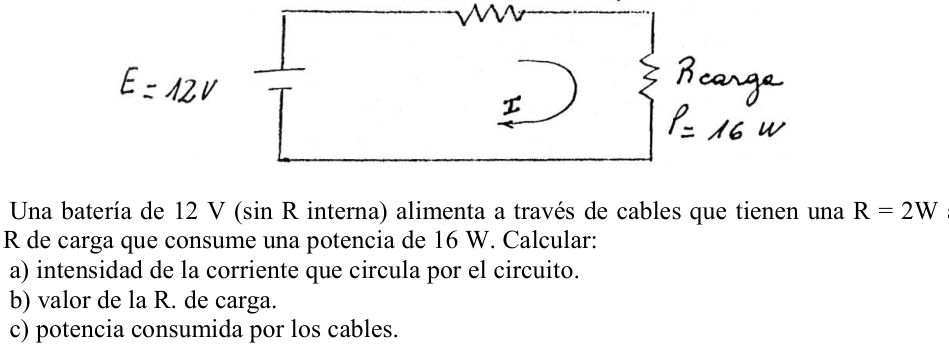
Topic: Circuits, Electrostatics Metodi: Equivalent Circuit Reduction Competenze: Physical Reasoning Objects: Capacitor, Battery, Resistor Fonte: Testo (PDF) — p.2
**Local 62 - Rodi (Condensatori) **
Secondo il circuito della figura, dove x 10F, μF, x 10 volt. Si chiede di trovare: A- Il carico del condensatore equivalente. B. Il carico di ogni condensatore. C- La differenza di potenziale in ogni condensatore. (circuito , , R)
Topic: Circuits, Electrostatics Metodi: Equivalent Circuit Reduction Competenze: Physical Reasoning Objects: Capacitor, Battery, Resistor Fonte: Testo (PDF) — p.2
Local 62 - Rojas (Circuito condensadores)
According to the circuit in the figure, where x 10F, μF, x 10 volt. It is asked to find: A- The equivalent capacitor load. B- The load of each capacitor. C- The potential difference in each capacitor. (figura circuito , , R)
Topic: Circuits, Electrostatics Metodi: Equivalent Circuit Reduction Competenze: Physical Reasoning Objects: Capacitor, Battery, Resistor Fonte: Testo (PDF) — p.2
Local 63 - San Nicolas (Bateria 12V, cables)
Una batería de 12 V (con R interna) alimenta a través de cables que tienen una R=2W a una R de carga que consume una potencia de 16 W. Calcular: a) intensidad de la corriente que circula por el circuito. b) valor de la R. de carga. c) potencia consumida por los cables. (figura: cables=2, V, , W)
Topic: Circuits Metodi: Kirchhoff’s Laws, Equivalent Circuit Reduction Competenze: Physical Reasoning Objects: Battery, Resistor, Wire Fonte: Testo (PDF) — p.2
**Local 63 - San Nicolas (batteria 12V, cavi) **
Una batteria da 12 V (con R interno) alimenta attraverso cavi che hanno un R=2W un R di carica che consuma una potenza di 16 W. Calcolo: a) intensità del corrente che circola nel circuito. b) valore della R. di carico. c) potenza consumata dai cavi. (Figura: cavi=2, V, , W)
Topic: Circuits Metodi: Kirchhoff’s Laws, Equivalent Circuit Reduction Competenze: Physical Reasoning Objects: Battery, Resistor, Wire Fonte: Testo (PDF) — p.2
Local 63 - San Nicolas (Bateria 12V, cables)
A 12 V battery (with internal R) feeds via cables that have an R=2W to a 16 W power consuming charge R. Calculation of the (a) the intensity of the current circulating through the circuit. (b) value of the R. of cargo. (c) power consumed by the cables. (figura: cables=2, V, , W)
Topic: Circuits Metodi: Kirchhoff’s Laws, Equivalent Circuit Reduction Competenze: Physical Reasoning Objects: Battery, Resistor, Wire Fonte: Testo (PDF) — p.2
Local 64 - Comodoro Rivadavia (Condensador plano, dielectrico)
¿ Cual será la capacidad de un condensador plano cuyas placas poseen una superficie de 3500 cm y están entre sí a una distancia de 4 mm ? ¿ Qué sucede si se le intercala un dieléctrico de valor 4,2 ?
Topic: Electrostatics Metodi: Gauss’s Law Competenze: Physical Reasoning Objects: Capacitor Fonte: Testo (PDF) — p.2
**Local 64 - Comodoro Rivadavia (Condensatore piano, dielettrico) **
¿ Cual será la capacidad de un condensador plano cuyas placas poseen una superficie de 3500 cm y están entre sí a una distancia de 4 mm ? E se gli viene scambiato un dieletrico di valore 4,2 ?
Topic: Electrostatics Metodi: Gauss’s Law Competenze: Physical Reasoning Objects: Capacitor Fonte: Testo (PDF) — p.2
Local 64 - Comodoro Rivadavia (Condensador plano, dielectrico)
¿ Cual será la capacidad de un condensador plano cuyas placas poseen una superficie de 3500 cm y están entre sí a una distancia de 4 mm ? What happens if you get a 4.2-value dielectric ?
Topic: Electrostatics Metodi: Gauss’s Law Competenze: Physical Reasoning Objects: Capacitor Fonte: Testo (PDF) — p.2
Local 65 - San Salvador de Jujuy (Esferas cargadas, hilos)
Dos esferas de iguales radios y pesos están suspendidas de hilos de manera que sus superficies se toquen.Después de comunicarles una carga de C se han repelido y distanciado formando los hilos un ángulo de 60°.Halle el peso de las esferas si la distancia desde el punto de suspensión hasta el centro de la esfera es de 20 cm.
Topic: Electrostatics Metodi: Coulomb’s Law, Free-Body Diagram Competenze: Physical Reasoning Objects: Sphere, Point Charge, String Fonte: Testo (PDF) — p.2
**Local 65 - San Salvador de Jujuy (Sfere cariche, fili) **
Due sfere di uguali radii e pesi sono sospesi da fili in modo che le loro superfici si toccino. Dopo aver comunicato loro un carico di C sono stati respinti e distanziati formando i fili un angolo di 60°.
Topic: Electrostatics Metodi: Coulomb’s Law, Free-Body Diagram Competenze: Physical Reasoning Objects: Sphere, Point Charge, String Fonte: Testo (PDF) — p.2
The Commission has decided to extend the period of validity of the measures to be taken to ensure that the measures taken are implemented in accordance with Article 107 (1) TFEU.
Two spheres of equal radii and weights are suspended from threads so that their surfaces touch. After communicating a charge of C they have been repelled and distanced forming the threads an angle of 60°. Find the weight of the spheres if the distance from the point of suspension to the center of the sphere is 20 cm.
Topic: Electrostatics Metodi: Coulomb’s Law, Free-Body Diagram Competenze: Physical Reasoning Objects: Sphere, Point Charge, String Fonte: Testo (PDF) — p.2
Local 66 - Capital Federal (Auto electrico de juguete, resistencia interna)
Se quiere diseñar un auto eléctrico de juguete para desarrollar una velocidad de 0,5 m/s. El coeficiente de rozamiento dinámico es de 0,1 y la masa de 2 kg. El auto pesee un motor de 0,5 Ω, con una resistencia óhmica de 100 W, y tiene un rendimiento del 82%. a) Encontrar la tensión que debe entregar una fuente con una resistencia interna de 9 W, para cumplir el requisito de diseño. b) Indicar cómo colocaría en el circuito eléctrico las dos lámparas de los frenos delanteros, sabiendo que la resistencia es de 36 W, para que la velocidad se altere lo menos posible al encenderlos.
Topic: Circuits, Newtonian Mechanics Metodi: Kirchhoff’s Laws, Equivalent Circuit Reduction Competenze: Physical Reasoning Objects: Battery, Resistor Fonte: Testo (PDF) — p.2
**Local 66 - Capitale federale (auto elettrica giocattolo, resistenza interna) **
Si vuole progettare un’auto elettrica giocattolo per sviluppare una velocità di 0,5 m/s. Il coefficiente di rottura dinamica è di 0,1 e la massa di 2 kg. L’auto pesa un motore di 0,5 Ω, con una resistenza omica di 100 W, e ha un rendimento dell’82%. a) Trovare la tensione che deve essere fornita da una fonte con una resistenza interna di 9 W, per soddisfare il requisito di progettazione. b) Indicare come inserire nel circuito elettrico le due lampade dei freni anteriori, sapendo che la resistenza è di 36 W, in modo che la velocità sia alterata il meno possibile quando si accendono.
Topic: Circuits, Newtonian Mechanics Metodi: Kirchhoff’s Laws, Equivalent Circuit Reduction Competenze: Physical Reasoning Objects: Battery, Resistor Fonte: Testo (PDF) — p.2
The Commission has also adopted a number of measures to ensure that the Commission is able to take appropriate measures to ensure that the measures are implemented in accordance with the objectives of the programme.
They want to design an electric toy car to develop a speed of 0.5 m/s. The dynamic coefficient of friction is 0,1 and the mass 2 kg. The car weighs 0.5 Ω, with an ohmic resistance of 100 W, and has an efficiency of 82%. (a) Find the voltage to be delivered by a source with an internal resistance of 9 W, to meet the design requirement. (b) indicate how the two lamps of the front brakes would be placed in the electrical circuit, knowing that the resistance is 36 W, so that the speed is altered as little as possible when switched on.
Topic: Circuits, Newtonian Mechanics Metodi: Kirchhoff’s Laws, Equivalent Circuit Reduction Competenze: Physical Reasoning Objects: Battery, Resistor Fonte: Testo (PDF) — p.2
Local 67 - San Fernando del Valle de Catamarca (Tres cargas puntuales)
Tres cargas eléctricas puntuales Q1, Q2 y Q3 se colocan sobre una mesa aislada según muestra en la figura. El medio que rodea las cargas es aire y se indica la distancia que las separa. Sabiendo que la fuerza con que se atraen las cargas Q1 y Q2 es positiva: b) Si Q1 y Q3 se acercan hasta quedar separadas por 16 cm, cuánto veces disminuye la distancia entre ambas? c) Si la fuerza entre Q2 y Q3 es de 1.5*10 N y cuál será el valor cambia la distancia de 16 cm. d) Suponiendo solo varia Q3 de 5 x 10 y para Q2 de 4 x 10 ¿qué valor toma la fuerza de atracción entre ambas? e) Si la fuerza Q1 - Q3 calculada en d) aumenta 4 veces, la distancia Q1 - Q3 aumenta o disminuye ?, cuantas veces ?, cuál es entonces su nuevo valor? (figura, 8 cm, 81 cm, Q1 Q2 Q3)
Topic: Electrostatics Metodi: Coulomb’s Law Competenze: Physical Reasoning Objects: Point Charge Fonte: Testo (PDF) — p.2
**Local 67 - San Fernando del Valle di Catamarca (Tre cariche puntuali) **
Tre cariche elettriche puntate Q1, Q2 e Q3 sono posizionate su un tavolo isolato come mostrato nella figura. Il mezzo che circonda le cariche è l’aria e si indica la distanza che le separa. Sapendo che la forza con cui le cariche Q1 e Q2 attraggono è positiva: b) Se Q1 e Q3 si avvicinano fino a essere separati di 16 cm, quante volte diminuisce la distanza tra loro? c) Se la forza tra Q2 e Q3 è di 1,5*10 N e quale sarà il valore cambia la distanza di 16 cm. d) Supponiamo che varia solo Q3 di 5 x 10 e per Q2 di 4 x 10 quale valore prende la forza di attrazione tra i due? e) Se la forza Q1 - Q3 calcolata in d) aumenta 4 volte, la distanza Q1 - Q3 aumenta o diminuisce ?, quante volte ?, qual è allora il suo nuovo valore? (Figura, 8 cm, 81 cm, Q1 Q2 Q3)
Topic: Electrostatics Metodi: Coulomb’s Law Competenze: Physical Reasoning Objects: Point Charge Fonte: Testo (PDF) — p.2
The Commission has decided to extend the period of validity of the measures to cover the costs of the operation of the airport.
Three spot electric charges Q1, Q2 and Q3 are placed on an isolated table as shown in the figure. The medium surrounding the loads is air and the distance between them is indicated. Knowing that the force with which Q1 and Q2 loads are attracted is positive: (b) If Q1 and Q3 approach each other until they are separated by 16 cm, how many times does the distance between them decrease? (c) If the force between Q2 and Q3 is 1.5*10 N and what will be the value changes the distance by 16 cm. (d) Assuming only Q3 varies from 5 x 10 and for Q2 from 4 x 10, what value does the force of attraction take between the two? (e) If the force Q1 - Q3 calculated in d) increases 4 times, the distance Q1 - Q3 increases or decreases ?, how many times ?, what is then its new value? (Figure, 8 cm, 81 cm, Q1 Q2 Q3)
Topic: Electrostatics Metodi: Coulomb’s Law Competenze: Physical Reasoning Objects: Point Charge Fonte: Testo (PDF) — p.2
Local 68 - Resistencia (Circuito resistores, dos fem)
Para el circuito indicado: V V () a) Determinar la corriente eléctrica en cada resistor. b) Cuál es la diferencia de potencial entre A y B? c) Determine la potencia que consume . d) ¿Qué cantidad de calor genera en media hora? (figura circuito)
Topic: Circuits Metodi: Kirchhoff’s Laws, Equivalent Circuit Reduction Competenze: Physical Reasoning Objects: Resistor, Battery Fonte: Testo (PDF) — p.2
**Local 68 - Resistenza (circuito resistente, due fem) **
Per il circuito indicato: V V () a) Determinazione del corrente elettrica in ciascun resistore. b) Qual è la differenza di potenziale tra A e B? c) Determina la potenza consumata . d) Quanta calore genera in mezz’ora? (Figura circuito)
Topic: Circuits Metodi: Kirchhoff’s Laws, Equivalent Circuit Reduction Competenze: Physical Reasoning Objects: Resistor, Battery Fonte: Testo (PDF) — p.2
**Local 68 - Resistance (resistant circuit, two fem) **
For the indicated circuit: V V () (a) Determine the electric current in each resistor. (b) What is the potential difference between A and B? (c) Determine the power consumed . (d) How much heat does generate in half an hour? (circuit figure)
Topic: Circuits Metodi: Kirchhoff’s Laws, Equivalent Circuit Reduction Competenze: Physical Reasoning Objects: Resistor, Battery Fonte: Testo (PDF) — p.2
Local 69 - Rojas (Hallar R3)
Dada la siguiente figura, calcular . (figura: 600V, , , ?, A)
Topic: Circuits Metodi: Kirchhoff’s Laws, Equivalent Circuit Reduction Competenze: Physical Reasoning Objects: Resistor, Battery Fonte: Testo (PDF) — p.2
**Local 69 - Reds (Hallar R3) **
Se si considera che il valore di sia inferiore a quello di , calcola la figura seguente: (Figura: 600V, , , , A)
Topic: Circuits Metodi: Kirchhoff’s Laws, Equivalent Circuit Reduction Competenze: Physical Reasoning Objects: Resistor, Battery Fonte: Testo (PDF) — p.2
Local 69 - Rojas (Hallar R3)
Given the following figure, calculate . (figura: 600V, , , ?, A)
Topic: Circuits Metodi: Kirchhoff’s Laws, Equivalent Circuit Reduction Competenze: Physical Reasoning Objects: Resistor, Battery Fonte: Testo (PDF) — p.2
Local 70 - Capital Federal (Motor CC, lamparas)
Un motor de C.C. de 736 W y rendimiento del 84% se conecta en paralelo con 5 lámparas de 25W/200V las cuales trabajan a tensión nominal, suministrada por un generador de fem V, de resistencia interna r(Ω). a) Representar el circuito. b) ¿Qué corriente circula por el circuito? c) ¿Qué corriente circula por el motor? d) ¿Qué corriente circula por cada lámpara? e) ¿Cuál es la energía absorbida por el motor en 20 minutos y cuál la entregada? f) Hallar la resistencia del generador.
Topic: Circuits Metodi: Kirchhoff’s Laws, Equivalent Circuit Reduction Competenze: Physical Reasoning Objects: Battery, Resistor Fonte: Testo (PDF) — p.2
**Local 70 - Capitale federale (motore CC, lampade) **
Un motore di C.C. di 736 W e un rendimento dell’84% è collegato in parallelo a 5 lampade di 25W/200V che funzionano a tensione nominale, fornite da un generatore di fem V, di resistenza interna r(Ω). a) rappresentare il circuito. b) Che corrente circola nel circuito? c) Che corrente circola attraverso il motore? d) Che corrente circola per ogni lampada? e) Qual è l’energia assorbita dal motore in 20 minuti e quale è la consegnata? f) Indicare la resistenza del generatore.
Topic: Circuits Metodi: Kirchhoff’s Laws, Equivalent Circuit Reduction Competenze: Physical Reasoning Objects: Battery, Resistor Fonte: Testo (PDF) — p.2
The Commission has also adopted a proposal for a regulation on the protection of the environment.
A C.C. engine . a power output of 736 W and 84% is connected in parallel to 5 25W/200V lamps operating at rated voltage, supplied by an internal resistance fem V generator r(Ω. (a) represent the circuit. (b) What current is circulating in the circuit? (c) What current is flowing through the engine? (d) What current is flowing through each lamp? (e) What is the energy absorbed by the engine in 20 minutes and what is delivered? (f) Determine the resistance of the generator.
Topic: Circuits Metodi: Kirchhoff’s Laws, Equivalent Circuit Reduction Competenze: Physical Reasoning Objects: Battery, Resistor Fonte: Testo (PDF) — p.2
Local 71 - D.F. Sarmiento (Fuente 56V, tres resistencias)
Una fuente de 56V , está aplicada a una asociación de tres resistencias produciendo una corriente de 20A. a) Calcular el valor de la resistencia . b) Disponer de una batería, de una resistencia, de un voltímetro y de un amperímetro, ¿Qué circuito montaría para determinar el valor de la resistencia?. Una vez armado el circuito ¿Cómo procederia para lograr el objetivo propuesto? (figura: 56V, , , A)
Topic: Circuits Metodi: Kirchhoff’s Laws, Equivalent Circuit Reduction Competenze: Physical Reasoning Objects: Resistor, Battery, Galvanometer Fonte: Testo (PDF) — p.2
Il numero di persone che hanno ricevuto la notifica è stato di circa un milione di euro. Sermento (fonte 56V, tre resistenze)**
Una fonte di 56 V , viene applicata ad un’associazione di tre resistenze producendo un corrente di 20 A. a) Calcolare il valore della resistenza . b) Dispone di una batteria, di una resistenza, di un voltímetro e di un amperímetro, quale circuito monterebbe per determinare il valore della resistenza? Una volta che il circuito è stato armarto, come procedere per raggiungere l’obiettivo proposto? (Figura: 56V, , , A)
Topic: Circuits Metodi: Kirchhoff’s Laws, Equivalent Circuit Reduction Competenze: Physical Reasoning Objects: Resistor, Battery, Galvanometer Fonte: Testo (PDF) — p.2
Local 71 - D.F. Sarmiento (Fuente 56V, tres resistencias)
A 56V source is applied to a three-resistance association producing a 20A current. (a) Calculate the value of the resistance . (b) Having a battery, resistor, voltmeter and ampere, what circuit would you mount to determine the resistor value? Once the circuit is set up, how would it proceed to achieve the proposed goal? (figura: 56V, , , A)
Topic: Circuits Metodi: Kirchhoff’s Laws, Equivalent Circuit Reduction Competenze: Physical Reasoning Objects: Resistor, Battery, Galvanometer Fonte: Testo (PDF) — p.2
Local 72 - Ibarreta (Circuito, determinar valores)
EN EL CIRCUITO DADO DETERMINAR LOS VALORES DE : 1- --------e. (figura circuito con valores , etc.)
Topic: Circuits Metodi: Kirchhoff’s Laws, Equivalent Circuit Reduction Competenze: Physical Reasoning Objects: Resistor, Battery Fonte: Testo (PDF) — p.2
**Local 72 - Ibarreta (circuito, determinazione dei valori) **
Nel circolo dato per determinare i valori di: 1- --------e. (Figura di circuito con valori , ecc.)
Topic: Circuits Metodi: Kirchhoff’s Laws, Equivalent Circuit Reduction Competenze: Physical Reasoning Objects: Resistor, Battery Fonte: Testo (PDF) — p.2
The following is the list of the relevant data sources for the calculation of the total value of the data:
In the Circuit DETERMINE the VALUES of: 1- --------e. (circuit figure with values , etc.)
Topic: Circuits Metodi: Kirchhoff’s Laws, Equivalent Circuit Reduction Competenze: Physical Reasoning Objects: Resistor, Battery Fonte: Testo (PDF) — p.2
Local 73 - Corrientes (Lampara 0,4 watt, resistencia paralela)
Una lámpara de 0,4 watt se diseña para que trabaje con dos voltios entre sus terminales. Una resistencia "", se coloca en paralelo con la lámpara y la combinación se pone en serie con la resistencia ohm y una batería de 3 volt y una resistencia interna de 1 ohm. Dibuje el circuito y calcular: a) el valor de la resistencia de la lámpara, b) el valor que debe tener para que la lámpara funciones al voltaje deseado.
Topic: Circuits Metodi: Kirchhoff’s Laws, Equivalent Circuit Reduction Competenze: Physical Reasoning Objects: Resistor, Battery Fonte: Testo (PDF) — p.2
**Local 73 - Correnti (Lampa di 0,4 watt, resistenza parallela) **
Una lampada da 0,4 watt è progettata per funzionare con due volt tra i suoi terminali. Una resistenza "", è posta in parallelo alla lampada e la combinazione è messa in serie con resistenza ohm e una batteria di 3 volt e resistenza interna di 1 ohm. Disegni il circuito e calcoli: a) il valore della resistenza della lampada, b) il valore che deve essere per far funzionare la lampada al voltaggio desiderato.
Topic: Circuits Metodi: Kirchhoff’s Laws, Equivalent Circuit Reduction Competenze: Physical Reasoning Objects: Resistor, Battery Fonte: Testo (PDF) — p.2
**Local 73 - Current (Lamp of 0,4 watt, parallel resistance) **
A 0.4-watt lamp is designed to work with two volts between its terminals. A resistance "" is placed parallel to the lamp and the combination is set in series with the resistance ohm and a 3 volt battery and an internal resistance of 1 ohm. Draw the circuit and calculate: (a) the value of the lamp’s resistance, (b) the value must be obtained for the lamp to operate at the desired voltage.
Topic: Circuits Metodi: Kirchhoff’s Laws, Equivalent Circuit Reduction Competenze: Physical Reasoning Objects: Resistor, Battery Fonte: Testo (PDF) — p.2
Local 74 - Buenos Aires (Placas cargadas, electron)
Entre dos placas planas y paralelas cargadas con cargas iguales y de signos opuestos existe un campo eléctrico uniforme. Se lanza un electron en el extremo izquierdo de la placa negativa con una velocidad inicial Vo según se indica en la figura. Posteriormente se observa que el electron llega al extremo opuesto de la placa inferior en un intervalo de tiempo de seg. A)Calcular el campo eléctrico entre las placas B)En que punto de una pantalla fluorescente colocada a 12 cm impactara el electron despues de abandonar las placas (se desprecian los efectos de borde). (figura, 3 cm, 2 cm, , 6 cm, 12 cm)
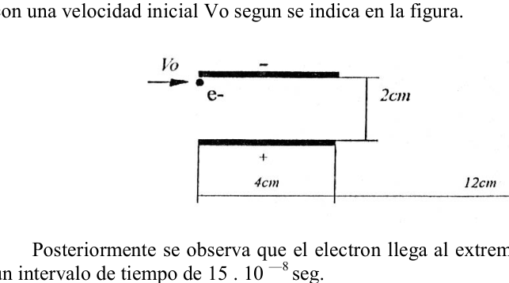
Topic: Electrostatics, Newtonian Mechanics Metodi: Coulomb’s Law, Kinematic Equations Competenze: Physical Reasoning Objects: Electron, Capacitor, Screen Fonte: Testo (PDF) — p.2
**Local 74 - Buenos Aires (Platte cariche, elettroni) **
Tra due placche piatte e parallele cariche di uguali carichi e di segni opposti esiste un campo elettrico uniforme. Si lancia un elettrone alla fine sinistra della scheda negativa con una velocità iniziale Vo come indicato nella figura. Successivamente si osserva che l’elettrone raggiunge l’estremità opposta della scheda inferiore in un intervallo di tempo di seg. A) Calcolare il campo elettrico tra le schede B) A che punto di uno schermo fluorescente posizionato a 12 cm colpisce l’elettrone dopo aver lasciato le plache (si disprezzano gli effetti di bordo). (figura, 3 cm, 2 cm, , 6 cm, 12 cm)
Topic: Electrostatics, Newtonian Mechanics Metodi: Coulomb’s Law, Kinematic Equations Competenze: Physical Reasoning Objects: Electron, Capacitor, Screen Fonte: Testo (PDF) — p.2
Local 74 - Buenos Aires (Placas cargadas, electron)
Between two flat and parallel plates with equal and opposite sign loads, there is a uniform electric field. An electron is thrown at the left end of the negative plate with an initial velocity Vo as shown in the figure. It is then observed that the electron reaches the opposite end of the lower plate in a time interval of seg. A) Calculate the electric field between the plates B) At which point of a fluorescent display placed at 12 cm the electron will impact after leaving the plates (the edge effects are neglected). (figura, 3 cm, 2 cm, , 6 cm, 12 cm)
Topic: Electrostatics, Newtonian Mechanics Metodi: Coulomb’s Law, Kinematic Equations Competenze: Physical Reasoning Objects: Electron, Capacitor, Screen Fonte: Testo (PDF) — p.2
Local 75 - Florida (Calentador electrico, especificaciones)
En un calentador eléctrico se encuentran las siguientes especificaciones del fabricante: 960 W, 120 V. a) Explica el significado de estos valores. b) Suponiendo que el calentador esté conectado al voltaje adecuado, ¿qué corriente pasará a través de él? c) ¿Cuánto vale la resistencia eléctrica de ese calentador?
Topic: Circuits Metodi: Kirchhoff’s Laws Competenze: Physical Reasoning Objects: Resistor Fonte: Testo (PDF) — p.2
**Local 75 - Florida (caldabile elettrico, specifiche) **
Un caldaio elettrico è conformato alle seguenti specifiche del fabbricante: 960 W, 120 V. a) Esprima il significato di questi valori. b) Supponendo che il riscaldatore sia collegato alla volta adeguata, quale corrente passerà attraverso di esso? c) Qual è la resistenza elettrica di tale riscaldatore?
Topic: Circuits Metodi: Kirchhoff’s Laws Competenze: Physical Reasoning Objects: Resistor Fonte: Testo (PDF) — p.2
The following is the list of the airports in the United States:
An electric heater shall have the following manufacturer’s specifications: 960 W, 120 V. (a) Explain the meaning of these values. (b) Assuming the heater is connected to the appropriate voltage, what current will pass through it? (c) What is the electrical resistance of that heater?
Topic: Circuits Metodi: Kirchhoff’s Laws Competenze: Physical Reasoning Objects: Resistor Fonte: Testo (PDF) — p.2
Local 76 - Dolores (Bateria 27V, circuito resistivo)
Una batería de 27 Volt y una resistencia interna de 1W, alimenta el circuito resistivo que se representa en el diagrama siguiente; calcular : a. Las intensidades y tensiones en cada resistencia. b. El calor desprendido por cada lado del circuito en 30 seg. c. La potencia que disipa cada resistencia. d. La energia que consume el circuito en KW-h. (figura: 27V/R i+1Ω, 12Ω, 2.5Ω, 3.5Ω, 26Ω)
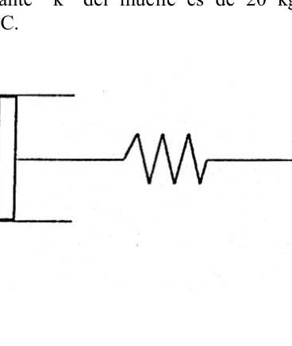
Topic: Circuits Metodi: Kirchhoff’s Laws, Equivalent Circuit Reduction Competenze: Physical Reasoning Objects: Battery, Resistor Fonte: Testo (PDF) — p.2
**Local 76 - Dolores (batteria 27V, circuito resistente) **
Una batteria da 27 Volt e una resistenza interna di 1W, alimenta il circuito resistente rappresentato nel diagramma seguente; calcolare: a. Le intensità e le tensioni di ogni resistenza. b. Il calore scaricato da ogni lato del circuito in 30 secondi. c. La potenza che dissipa ogni resistenza. d. L’energia che il circuito consuma in KW-h. (Figura: 27V/R i+1Ω, 12Ω, 2.5Ω, 3.5Ω, 26Ω)
Topic: Circuits Metodi: Kirchhoff’s Laws, Equivalent Circuit Reduction Competenze: Physical Reasoning Objects: Battery, Resistor Fonte: Testo (PDF) — p.2
The following table shows the results of the calculation of the total number of electrical power units:
A 27 Volt battery and an internal resistance of 1W, power the resistance circuit as shown in the following diagram; calculate: The intensities and tensions at each resistance. b. The heat released from each side of the circuit in 30 seconds. c. The power that dissipates every resistance. d. The energy that consumes the circuit in KW-h. (Figure: 27V/R i+1Ω, 12Ω, 2.5Ω, 3.5Ω, 26Ω)
Topic: Circuits Metodi: Kirchhoff’s Laws, Equivalent Circuit Reduction Competenze: Physical Reasoning Objects: Battery, Resistor Fonte: Testo (PDF) — p.2
Local 77 - Bahia Blanca (Refrigerador, verdadero o falso)
a) Algunos anuncios comerciales de refrigeradores suelen pregonar las ventajas de estos productos diciendo “Nuestro producto no deja entrar el calor ni escapar el frío”. Decir si esta afirmación es verdadera o falsa, justificando su respuesta. b) Suponiendo que deseamos descongelar un refrigerador indicar cuál de los métodos siguientes sería el más adecuado para concretar esta tarea, fundamentando la elección : b.1) Colocar en su interior cierta masa de agua caliente. b.2) Colocar la misma masa de metal caliente a la misma temperatura.
Topic: Thermodynamics Metodi: First Law of Thermodynamics Competenze: Physical Reasoning Objects: Heat Engine Fonte: Testo (PDF) — p.2
**Local 77 - Bahia Blanca (Frigorante, vero o falso) **
a) Alcuni annunci commerciali di frigoriferi spesso esortano i vantaggi di questi prodotti dicendo: “Il nostro prodotto non lascia entrare il calore e non esce il freddo”. Indicare se questa affermazione è vera o falsa, giustificando la sua risposta. b) Supponiamo che vogliamo scongelarci un frigorifero, indicando quale dei seguenti metodi sarebbe il più adatto per realizzare questo compito, fondando la scelta: b.1) Mettere dentro una certa massa di acqua calda. b.2) Mettere la stessa massa di metallo caldo alla stessa temperatura.
Topic: Thermodynamics Metodi: First Law of Thermodynamics Competenze: Physical Reasoning Objects: Heat Engine Fonte: Testo (PDF) — p.2
**Local 77 - Bahia Blanca (Refrigerator, true or false) **
(a) Some commercials for refrigerators often promote the advantages of these products by saying “Our product does not let heat in or escape cold”. Declare whether this statement is true or false, justifying your answer. (b) Suppose we wish to thaw a refrigerator, we indicate which of the following methods would be most appropriate to accomplish this task, and we give the choice: (b.1) Place a certain amount of hot water inside. (b.2) Place the same mass of hot metal at the same temperature.
Topic: Thermodynamics Metodi: First Law of Thermodynamics Competenze: Physical Reasoning Objects: Heat Engine Fonte: Testo (PDF) — p.2
Local 78 - Florida (Gas en cilindro, piston, resorte)
Se tiene un sistema como el de la figura el cual se encuentra a P1 = 1atm y T1=27°C y tiene en su interior un mol de aire. Si dejamos pasar calor de 30 cm no permite el paso a través de él de masa ni calor. El aire calor en Q1 añadido al sistema hasta que el móvil se comprime 10cm respecto de su posición inicial, después de la cual el estado del sistema esta definido por P2 y P2. La constante “k” del muelle es de 20 kg/cm y las condiciones atmosfericas son P0=1atm y T0=27ºC. Halle: a)La energia acumulada por el muelle b)El trabajo realizado por el sistema. c)El incremento de energia interna. d)La temperatura final del sistema. (figura cilindro-piston-resorte, Q1)
Topic: Thermodynamics, Conservation of Energy Metodi: First Law of Thermodynamics, Ideal Gas Law, Hooke’s Law Competenze: Physical Reasoning Objects: Gas, Cylinder, Piston, Spring Fonte: Testo (PDF) — p.2
**Local 78 - Florida (Gas in cilindro, pistone, scarico) **
Si ha un sistema come quello della figura che si trova a P1 = 1atm e T1=27°C e ha all’interno un mol d’aria. Se lasciamo passare un caldo di 30 centimetri non permette il passaggio attraverso di esso di massa o calore. L’aria calda in Q1 aggiunta al sistema fino a quando il cellulare si compresse 10 cm rispetto alla sua posizione iniziale, dopo di che lo stato del sistema è definito da P2 e P2. La costante “k” del molo è di 20 kg/cm e le condizioni atmosferiche sono P0=1atm e T0=27oC.
- Hale: a) L’energia accumulata dal molo b) Il lavoro svolto dal sistema. c) L’aumento dell’energia interna. d) La temperatura finale del sistema. (fig. cilindro-pistone-risorsa, Q1)
Topic: Thermodynamics, Conservation of Energy Metodi: First Law of Thermodynamics, Ideal Gas Law, Hooke’s Law Competenze: Physical Reasoning Objects: Gas, Cylinder, Piston, Spring Fonte: Testo (PDF) — p.2
The Commission has not yet adopted any new regulatory framework for the provision of electricity to the public.
It has a system like that of the figure which is located at P1 = 1atm and T1=27°C and has inside it a mol of air. If we let heat pass 30 centimeters it does not allow the passage through it of mass or heat. Hot air in Q1 added to the system until the mobile is compressed 10cm from its initial position, after which the system state is defined by P2 and P2. The constant “k” of the dock is 20 kg/cm and the atmospheric conditions are P0=1atm and T0=27oC. I ‘m not going to lie . (a) The energy accumulated by the dock (b) The work carried out by the system. (c) Increased internal energy. (d) The final temperature of the system. (Figure cylinder-piston-resort, Q1)
Topic: Thermodynamics, Conservation of Energy Metodi: First Law of Thermodynamics, Ideal Gas Law, Hooke’s Law Competenze: Physical Reasoning Objects: Gas, Cylinder, Piston, Spring Fonte: Testo (PDF) — p.2
Local 79 - San Fernando del Valle de Catamarca (Terrorista, termometro y explosivo)
Hassan Al Kilo, conocido terrorista internacional, se encuentra en Nosolandia, potencia mundial de la que es destacado militante. Su misión consiste en colocar un poderoso explosivo en la Casa de Gobierno para vengar a sus compatriotas encarcelados. El explosivo está construido de tal manera que se activará cuando la temperatura ambiente alcance como mínimo los 32°C. Para realizar su misión Hassan solo pudo conseguir un termómetro graduado desde 0 hasta 250 grados en una escala que está referido. ¿ Podria Ud. controlar los siguientes interrogantes que atormentan a Hassan? a) ¿Cuál es la escala que se utilizó para graduar el termómetro si al colocarlo en hielo fundente al mercurio se ubica en la marca 32?. b)¿ Cuál es la temperatura en grados Celsius del lugar si a las 0,0900hs. la columna de mercurio se ubica en la marca 70? c) En un matísimo local se pronostica una máxima de 95 grados ¿Se podrá realizar la operación ese día?. d)¿ A cuántos grados Kelvin equivaldrá la diferencia en grados Celsius entre la temperatura de las 0,0900hs y la temperatura crítica? e)- Si la temperatura aumenta 2,33 °K por hora, ¿ cuánto tiempo dispondrá la Policía para desactivar el explosivo?.
Topic: Thermodynamics Metodi: Dimensional Analysis Competenze: Physical Reasoning Objects: Manometer Fonte: Testo (PDF) — p.2
**Local 79 - San Fernando del Valle di Catamarca (Terrorista, termometro e esplosivo) **
Hassan Al Kilo, noto terrorista internazionale, si trova in Nosolandia, potenza mondiale di cui è un militante di spicco. La sua missione consiste nel posizionare un potente esplosivo nella Casa del Governo per vendicare i suoi compatrioti incarcerati. L’esplosivo è costruito in modo tale da essere attivato quando la temperatura ambiente raggiunge almeno 32°C. Per realizzare la sua missione Hassan è riuscito a ottenere solo un termometro graduato da 0 a 250 gradi su una scala che è stata indicata. Potresti … controllare le seguenti domande che tormentano Hassan? a) Qual è la scala utilizzata per gradare il termometro se, quando viene messo su ghiaccio in fumo al mercurio, si trova nella marca 32? b) Qual è la temperatura in gradi Celsius del luogo se a 0,0900h? La colonna di mercurio si trova sul marchio 70? c) In un locale molto matto è previsto un massimo di 95 gradi. d) A quante gradi Kelvin si equivarrebbe la differenza di gradi Celsius tra la temperatura di 0,0900h e la temperatura critica? e) Se la temperatura aumenta 2,33 °K all’ora, quanto tempo avrà la polizia per disattivare l’esplosivo?
Topic: Thermodynamics Metodi: Dimensional Analysis Competenze: Physical Reasoning Objects: Manometer Fonte: Testo (PDF) — p.2
The Commission has also adopted a number of measures to combat the spread of the virus.
Hassan Al Kilo, a known international terrorist, is in Nosolandia, a world power he is a prominent militant for. Their mission is to place a powerful explosive in the Government House to avenge their imprisoned compatriots. The explosive is constructed in such a way that it will be activated when the ambient temperature reaches at least 32°C. To accomplish his mission Hassan was only able to get a graduated thermometer from 0 to 250 degrees on a scale that is referred to. Could you please ? control the following questions that torment Hassan? (a) What scale was used to grade the thermometer if when placed on mercury-melting ice it is located on mark 32? (b) What is the temperature in degrees Celsius of the place if at 0.0900h? The mercury column is located on mark 70? (c) A maximum of 95 degrees is forecast in a very small area. d) How many degrees Kelvin will the difference in degrees Celsius between the temperature of 0.0900 hrs and the critical temperature be equal? (e) If the temperature rises 2,33 °K per hour, how long will the police have to deactivate the explosive?
Topic: Thermodynamics Metodi: Dimensional Analysis Competenze: Physical Reasoning Objects: Manometer Fonte: Testo (PDF) — p.2
Local 80 - Capital Federal (Cilindro, embolo, cubo de hierro, gas)
Tenemos un cilindro de 2,5 cm de radio con un émbolo de masa despreciable al que se le ha atado mediante un hilo inextensible de masa despreciable un cubo de hierro de 10 cm de lado. En estas condiciones el émbolo esta a 20 cm de la base del cilindro. a) Si sumergimos el cubo dentro de un balde de agua y suponemos hasta que el gas vuelva a su temperatura inicial, ¿cuánto se desplaza el émbolo? b) Si ahora cortamos el hilo y esperamos hasta que el gas vuelva a su temperatura inicial, ¿cuánto se desplaza el émbolo? c) Si la temperatura inicial era de 20°C, ¿hasta qué temperatura debemos llevar al gas para que el émbolo vuelva a su posición inicial? Datos: m/s, g/cm, g/cm, 1 atm = 76 cm de Hg.
Topic: Fluid Mechanics, Thermodynamics Metodi: Hydrostatic Equilibrium, Ideal Gas Law Competenze: Physical Reasoning Objects: Cylinder, Piston, Container Fonte: Testo (PDF) — p.2
**Local 80 - Capitale federale (cylindro, embolio, cubo di ferro, gas) **
Abbiamo un cilindro di 2,5 cm di raggio con un’emblema di massa disprezzabile che è stata attaccata con un filo di massa disprezzabile inestensibile un cubo di ferro di 10 cm di lato. In queste condizioni, l’imbolo è a 20 cm dalla base del cilindro. a) Se immergiamo il cubo in un vassoio d’acqua e supponiamo che fino a quando il gas ritorna alla temperatura iniziale, quanto si sposta l’imbolo? b) Se adesso tagliamo il filo e aspettiamo che il gas torni alla temperatura iniziale, quanto si sposta l’imbolo? c) Se la temperatura iniziale era 20°C, a che temperatura dobbiamo portare il gas per far tornare l’imbolo alla sua posizione iniziale? Dati: m/s, g/cm, g/cm, 1 atm = 76 cm di Hg.
Topic: Fluid Mechanics, Thermodynamics Metodi: Hydrostatic Equilibrium, Ideal Gas Law Competenze: Physical Reasoning Objects: Cylinder, Piston, Container Fonte: Testo (PDF) — p.2
The amount of the loan is EUR 7 million.
We have a cylinder with a radius of 2.5 cm with a scornful mass embolus that has been tied to it by an unexpandable thread of scornful mass a 10 cm side iron cube. Under these conditions the cylinder is 20 cm from the cylinder base. (a) If we dip the bucket into a bucket of water and assume until the gas returns to its initial temperature, how much of the bucket moves? (b) If we now cut the thread and wait until the gas returns to its initial temperature, how much of the plume moves? (c) If the initial temperature was 20°C, to what temperature should the gas be brought back to its initial position? The data are: m/s, g/cm, g/cm, 1 atm = 76 cm of Hg.
Topic: Fluid Mechanics, Thermodynamics Metodi: Hydrostatic Equilibrium, Ideal Gas Law Competenze: Physical Reasoning Objects: Cylinder, Piston, Container Fonte: Testo (PDF) — p.2
Local 81 - Resistencia (Mezcla de agua, calor)
Se desea obtener 50 litros de agua a 40°C mezclando con 20 litros de agua que tienen la temperatura de 10°C a)Determinar la cantidad de calor necesaria para el calentamiento de los 30 litros restantes. B) Calcular la temperatura que debe tener inicialmente estos 30 litros. c) Establecer la potencia que debe suministrar en Kw-hora suponiendo que no existen las pérdidas de calor
Topic: Thermodynamics Metodi: First Law of Thermodynamics Competenze: Physical Reasoning Objects: Calorimeter Fonte: Testo (PDF) — p.2
**Local 81 - Resistenza (miscela di acqua, calore) **
Si desidera ottenere 50 litri di acqua a 40°C mescolando con 20 litri di acqua a temperatura di 10°C a) Determinare la quantità di calore necessaria per riscaldare i restanti 30 litri. B) Calcolare la temperatura che deve avere inizialmente questi 30 litri. c) stabilire la potenza da fornire in Kw-ora, purché non vi siano perdite di calore
Topic: Thermodynamics Metodi: First Law of Thermodynamics Competenze: Physical Reasoning Objects: Calorimeter Fonte: Testo (PDF) — p.2
The following is the list of the types of water treatment plants used:
50 litres of water at 40°C is to be obtained by mixing with 20 litres of water with a temperature of 10°C. (a) Determine the amount of heat required for heating the remaining 30 litres. (b) Calculate the temperature that these 30 litres should initially have. (c) Establish the power to be supplied in Kw-hours assuming no heat losses occur
Topic: Thermodynamics Metodi: First Law of Thermodynamics Competenze: Physical Reasoning Objects: Calorimeter Fonte: Testo (PDF) — p.2
Local 82 - Comodoro Rivadavia (Mol de oxigeno, calor)
Se calienta un mol de gas oxígeno desde una temperatura de 20°C y una presión de 1 atm. hasta una temperatura de 100°C. Suponiendo que el gas oxigeno es un gas ideal: a)¿ Cuánto calor deberá suministrarse si durante el calentamiento se mantiene constante el volumen? b)¿ Cuanto calor deberá suministrarse si se mantiene constante la presión ? c)¿ Cuanto trabajo realizará el gas en la parte b)?
Topic: Thermodynamics, Kinetic Theory Metodi: First Law of Thermodynamics, Ideal Gas Law Competenze: Physical Reasoning Objects: Gas Fonte: Testo (PDF) — p.2
**Local 82 - Comodoro Rivadavia (Mol di ossigeno, calore) **
Un mol di gas ossigeno viene riscaldato a una temperatura di 20°C e a una pressione di 1 atm. fino a una temperatura di 100°C. Supponendo che l’ossigeno sia un gas ideale: a) Quanto calore deve essere fornito se il volume durante il riscaldamento è mantenuto costante? b) Quanto calore deve essere fornito se la pressione è mantenuta costante ? c) Quanto lavoro farà il gas nella parte b)?
Topic: Thermodynamics, Kinetic Theory Metodi: First Law of Thermodynamics, Ideal Gas Law Competenze: Physical Reasoning Objects: Gas Fonte: Testo (PDF) — p.2
The Commission has decided to extend the period of validity of the measures to be taken to ensure that the measures taken are implemented in accordance with the opinion of the European Parliament and of the Council.
One mole of oxygen gas is heated from a temperature of 20°C and a pressure of 1 atm. up to a temperature of 100°C. Assuming oxygen gas is an ideal gas: (a) How much heat should be supplied if the volume is kept constant during heating? (b) How much heat should be supplied if the pressure is kept constant ? (c) How much work will the gas do in Part (b)?
Topic: Thermodynamics, Kinetic Theory Metodi: First Law of Thermodynamics, Ideal Gas Law Competenze: Physical Reasoning Objects: Gas Fonte: Testo (PDF) — p.2
Local 83 - Capital Federal (Vapor, hielo, calorimetria)
Cinco kilogramos de vapor a 100°C/Pa ocupan un volumen de 8.4 m. Considerando a la densidad del agua kg/dm a 100°C y 101300 Pa y el calor de vaporización kcal/kg, hallar: a) la cantidad de calor necesario para evaporar los cinco kilogramos de agua liquida a 100°C. b) el trabajo realizado al expandirse el agua a 100°C mientras cambia de estado. c) la relación entre la energia absorbida por el agua al dilatarse frente a la cantidad de calor total consumida. d) el incremento de la energia interna de 1 kg de agua cuando se vaporiza a 100°C. e) el poder calorífico del líquido a los 10 minutos de fluir la corriente, calculando el cambio de estado de los 5 kg de agua pero el sistema solo permite aprovechar el 70% del calor suministrado. f) la temperatura final y la composición de la mezcla si a los 5 kg de vapor se le agregan 28kg de hielo a -20°C. Datos: calor específico kcal/kg°C, kcal/kg. g) representar la evolución del sistema del punto f en un gráfico de temperatura en función de la cantidad de calor.
Topic: Thermodynamics Metodi: First Law of Thermodynamics Competenze: Physical Reasoning Objects: Gas, Calorimeter Fonte: Testo (PDF) — p.2
**Local 83 - Capitale federale (vapore, ghiaccio, caloriometria) **
5 kg di vapore a 100°C/Pa occupano un volume di 8,4 m. Considerando la densità dell’acqua kg/dm a 100°C e 101300 Pa e il calore di vaporizzazione kcal/kg, si trova: a) la quantità di calore necessaria per evaporare i 5 kg di acqua liquida a 100°C. b) il lavoro svolto per espandere l’acqua a 100°C mentre cambia di stato. c) il rapporto tra l’energia assorbita dall’acqua in espansione e la quantità totale di calore consumata. d) l’aumento dell’energia interna di 1 kg di acqua quando viene vaporizzata a 100°C. e) il potere calore del liquido a 10 minuti dal flusso del corrente, calcolando il cambiamento di stato dei 5 kg di acqua, ma il sistema consente di sfruttare solo il 70% del calore fornito. f) la temperatura finale e la composizione della miscela se ai 5 kg di vapore vengono aggiunti 28 kg di ghiaccio a -20°C. Data: calore specifico kcal/kg°C, kcal/kg. g) rappresentare l’evoluzione del sistema del punto f in un grafico di temperatura in funzione della quantità di calore.
Topic: Thermodynamics Metodi: First Law of Thermodynamics Competenze: Physical Reasoning Objects: Gas, Calorimeter Fonte: Testo (PDF) — p.2
Local 83 - Capital Federal (Vapor, hielo, calorimetria)
Five kilograms of steam at 100°C/Pa occupies a volume of 8,4 m. Taking into account the water density kg/dm to 100°C and 101300 Pa and the vaporization heat kcal/kg, find: (a) the amount of heat required to evaporate the five kilograms of liquid water to 100°C. (b) the work done on the water expansion to 100°C while changing state. (c) the ratio of the energy absorbed by water as it dilates to the total amount of heat consumed. (d) the increase in the internal energy of 1 kg of water when evaporated to 100°C. (e) the heat output of the liquid at 10 minutes after flow, calculating the change in state of 5 kg of water but the system allows only 70% of the heat supplied to be used. (f) the final temperature and composition of the mixture if 28 kg of ice is added to the 5 kg of steam at -20°C. Datos: calor específico kcal/kg°C, kcal/kg. (g) represent the evolution of the point f system on a temperature graph based on the amount of heat.
Topic: Thermodynamics Metodi: First Law of Thermodynamics Competenze: Physical Reasoning Objects: Gas, Calorimeter Fonte: Testo (PDF) — p.2
Local 84 - Villa Carlos Paz (Espejo esferico concavo)
Sobre el eje óptico de un espejo esférico cóncavo de 60 cm de radio y a 45 cm de dicho espejo, se ubica un objeto de 20 cm de altura.
- Confeccionar un dibujo en el que se represente la situación planteada.
- ¿A qué distancia del espejo se forma la imagen?
- ¿Qué altura tendrá la imagen?
- La imagen será real o virtual. Justifique su respuesta.
Topic: Geometric Optics Metodi: Thin Lens & Mirror Equation, Ray Tracing Competenze: Physical Reasoning Objects: Mirror Fonte: Testo (PDF) — p.2
**Local 84 - Villa Carlos Paz (Specchio spiacevole concave) **
Sull’asse ottico di uno specchio sfero concavo di 60 cm di raggio e a 45 cm di distanza da tale specchio, si trova un oggetto di 20 cm di altezza.
- Fare un disegno che rappresenti la situazione.
- A che distanza si forma l’immagine dallo specchio?
- Quanto sarà alta l’immagine?
- L’immagine sarà reale o virtuale. giustifica la tua risposta.
Topic: Geometric Optics Metodi: Thin Lens & Mirror Equation, Ray Tracing Competenze: Physical Reasoning Objects: Mirror Fonte: Testo (PDF) — p.2
The following is the list of the official languages of the European Union:
Above the optical axis of a concave spherical mirror with a radius of 60 cm and 45 cm from the mirror, an object of 20 cm in height is located.
- Draw a drawing depicting the situation.
- How far from the mirror is the image formed?
- How high will the image be?
- The image shall be real or virtual. Justify your answer.
Topic: Geometric Optics Metodi: Thin Lens & Mirror Equation, Ray Tracing Competenze: Physical Reasoning Objects: Mirror Fonte: Testo (PDF) — p.2
Local 85 - Capital Federal (Rayo, cubo material transparente)
Un rayo incide con un ángulo α sobre la superficie horizontal de un cubo de material transparente de índice ‘n’, inmerso en aire. a) Indicar para que valores de α hay reflexión total interna en la cara vertical. b) Para algún α del punto a) , puede haber reflexión total en la base del cubo? Justificar. c) Si ° , encuentre el máximo ‘n’ para que no haya reflexión total en la cara vertical, ¿Se puede reflejar totalmente en la cara superior? (figura cubo, rayo)
Topic: Geometric Optics Metodi: Snell’s Law Competenze: Physical Reasoning Objects: Prism Fonte: Testo (PDF) — p.2
**Local 85 - Capitale federale (Rays, cubo di materiale trasparente) **
Un raggio incide da un angolo α sulla superficie orizzontale di un cubo di materiale trasparente di indice ‘n’ immerso in aria. a) Indicare per quali valori di α si trova la riflessione totale interna sul lato verticale. b) Per un α di punto a) può esserci riflessione totale alla base del cubo? Giustificare. c) Se °, trova il massimo ‘n’ in modo che non ci sia riflessione totale sul viso verticale, può essere riflesso totalmente sul viso superiore? (figura cubo, fulmine)
Topic: Geometric Optics Metodi: Snell’s Law Competenze: Physical Reasoning Objects: Prism Fonte: Testo (PDF) — p.2
The amount of the loan is EUR 10 million.
A beam shall strike at an α angle on the horizontal surface of a transparent ‘n’ index material cube, submerged in air. (a) Indicate for which values of α there is total internal reflection on the vertical side. (b) For any α of point (a), can there be total reflection at the base of the cube? Justify it. (c) If ° , find the maximum ‘n’ so that there is no total reflection on the vertical face, can it be fully reflected on the upper face? (cube figure, lightning)
Topic: Geometric Optics Metodi: Snell’s Law Competenze: Physical Reasoning Objects: Prism Fonte: Testo (PDF) — p.2
Local 86 - Dolores (Lente divergente, imagen)
Determinar la posición y el tamaño de la imagen dada por una lente divergente de -18 cm de distancia focal, de un objeto de 9 cm. de altura, situado a una distancia de la lente de 0,27m. ¿Qué escolerla si duplicamos el radio de curvatura? Resuelva ambos casos gráfica y analíticamente.
Topic: Geometric Optics Metodi: Thin Lens & Mirror Equation, Ray Tracing Competenze: Physical Reasoning Objects: Lens Fonte: Testo (PDF) — p.2
**Local 86 - Dolore (Lens divergente, immagine) **
Determinare la posizione e la dimensione dell’immagine data da un lente divergente di -18 cm di distanza focale, di un oggetto di 9 cm. di altezza, situata a una distanza da 0,27 m dalla lente. Che cosa facciamo se raddoppiamo il raggio di curvatura? Risolve entrambi i casi graficamente e analiticamente.
Topic: Geometric Optics Metodi: Thin Lens & Mirror Equation, Ray Tracing Competenze: Physical Reasoning Objects: Lens Fonte: Testo (PDF) — p.2
The following is the list of the categories of the categories of the products concerned:
Determine the position and size of the image given by a divergent lens of -18 cm focal length, of a 9 cm object. of a height of 0,27 m from the lens. What do you do if we double the radius of curvature? Solve both cases graphically and analytically.
Topic: Geometric Optics Metodi: Thin Lens & Mirror Equation, Ray Tracing Competenze: Physical Reasoning Objects: Lens Fonte: Testo (PDF) — p.2
Local 87 - Castelar (Lamina de vidrio, rayos perpendiculares)
Sea una lámina de vidrio con un índice de refracción de 1,5. Bajo qué ángulo de incidencia (desde el aire) los rayos reflejado y refractado en la lámina, serán perpendiculares.
Topic: Geometric Optics Metodi: Snell’s Law Competenze: Physical Reasoning Objects: Prism Fonte: Testo (PDF) — p.2
**Local 87 - Castelare (Lamma di vetro, raggi perpendicolari) **
Si tratta di una lamina di vetro con un tasso di refraczione di 1,5. Sotto quale angolo di incidenza (dall’aria) i raggi riflessi e refratti sulla lamina, saranno perpendicolari.
Topic: Geometric Optics Metodi: Snell’s Law Competenze: Physical Reasoning Objects: Prism Fonte: Testo (PDF) — p.2
The following table shows the results of the calculation of the total amount of the investment:
It’s a sheet of glass with a refractive index of 1.5. Under which angle of incidence (from the air) the rays reflected and refracted on the sheet shall be perpendicular.
Topic: Geometric Optics Metodi: Snell’s Law Competenze: Physical Reasoning Objects: Prism Fonte: Testo (PDF) — p.2
Local 88 - Capital Federal (Pescador, pecera, refraccion)
Un pescador estaba nadando tranquilamente en su piscina cuando de pronto apareció un físico que envió un rayo de luz que entró por la pared izquierda, rebotó en el fondo con un ángulo de 45° en la mitad de la pecera y salió por la derecha. Continúe las preguntas al pescador. Datos: , , km/s. (figura pecera, 1 cm, 20 cm, 1 cm)
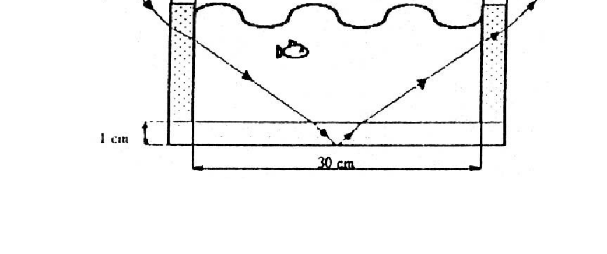
Topic: Geometric Optics Metodi: Snell’s Law, Ray Tracing Competenze: Physical Reasoning Objects: Container Fonte: Testo (PDF) — p.2
**Local 88 - Capitale federale (pescatore, pescatore, rifrazione) **
Un pescatore stava nuotando tranquillamente nella sua piscina quando improvvisamente un fisico si è presentato che ha inviato un raggio di luce che è entrato attraverso il muro sinistro, rimbalzato in fondo con un angolo di 45° nella metà della pesca e è uscito dalla destra. Continua a fare domande al pescatore. Dati: , , km/s. (figura di pesce, 1 cm, 20 cm, 1 cm)
Topic: Geometric Optics Metodi: Snell’s Law, Ray Tracing Competenze: Physical Reasoning Objects: Container Fonte: Testo (PDF) — p.2
Local 88 - Capital Federal (Pescador, pecera, refraccion)
A fisherman was swimming quietly in his pool when suddenly a physicist appeared who sent a beam of light that entered through the left wall, bounced back at the bottom with an angle of 45° in the middle of the fish tank and came out right. Continue asking the fisherman questions. Datos: , , km/s. (fish size, 1 cm, 20 cm, 1 cm)
Topic: Geometric Optics Metodi: Snell’s Law, Ray Tracing Competenze: Physical Reasoning Objects: Container Fonte: Testo (PDF) — p.2
Local 89 - D.F. Sarmiento (Lente, imagen menor y virtual)
Un objeto de 20 cm. de alto situado a 60 cm. de una lente produce una imagen menor que él y virtual. Si la distancia focal es de 30 cm, determinar: a) ¿Qué tipo de lente es y por qué? b) ¿Cuál es la posición de la imagen? c) ¿Cuál es la altura de la imagen? d) ¿Qué potencia tiene la lente? e) ¿Cuál es el aumento de la lente? f) Graficar.
Topic: Geometric Optics Metodi: Thin Lens & Mirror Equation, Ray Tracing Competenze: Physical Reasoning Objects: Lens Fonte: Testo (PDF) — p.2
Il numero di persone che hanno ricevuto la notifica è stato di circa un milione di euro. Sorgere (lente, miniatura e immagine virtuale) **
Un oggetto di 20 cm. di altezza di 60 cm. di un obiettivo produce un’immagine minore di lui e virtuale. Se la distanza focale è di 30 cm, determinare: a) Che tipo di lente è e perché? b) Qual è la posizione dell’immagine? c) Qual è l’altezza dell’immagine? d) Qual è la potenza del lente? e) Qual è l’aumento della lente? f) Grafica.
Topic: Geometric Optics Metodi: Thin Lens & Mirror Equation, Ray Tracing Competenze: Physical Reasoning Objects: Lens Fonte: Testo (PDF) — p.2
The Commission shall adopt delegated acts in accordance with Article 21 of Regulation (EC) No 1290/2009. The following table shows the results of the calculation of the total cost of the project:
A 20 cm object. of a height of 60 cm. It’s a smaller image than it is and it’s virtual. If the focal length is 30 cm, determine: (a) What kind of lens is it and why? (b) What is the position of the image? (c) What is the height of the image? (d) What power does the lens have? (e) What is the increase in lens? (f) Drawing.
Topic: Geometric Optics Metodi: Thin Lens & Mirror Equation, Ray Tracing Competenze: Physical Reasoning Objects: Lens Fonte: Testo (PDF) — p.2
Local 90 - D.F. Sarmiento (Vidrio y agua, angulo de incidencia)
Dado un juego de vidrio, cuyo índice de refracción es de 1,5 y de agua, cuyo índice de refracción es 1,3, rodeados de aire, como lo indica la figura. Calcular el ángulo con que debe incidir el rayo en la cara AB para que emerja paralelo a la cara superior CD. (figura B,C,D, vidrio, agua, aire)
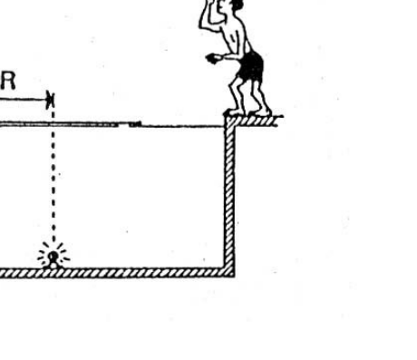
Topic: Geometric Optics Metodi: Snell’s Law, Ray Tracing Competenze: Physical Reasoning Objects: Prism Fonte: Testo (PDF) — p.2
Local 90 - D.F. Sermiente (Visro e acqua, angolo di incidenza)
Dato un gioco di vetro, il cui indice di refraczione è di 1,5 e di acqua, il cui indice di refraczione è di 1,3, circondati da aria, come indica la figura. Calcolare l’angolo con cui il raggio deve incidere sulla faccia AB per emergere parallelo alla faccia superiore del CD. (Figura B, C, D, vetro, acqua, aria)
Topic: Geometric Optics Metodi: Snell’s Law, Ray Tracing Competenze: Physical Reasoning Objects: Prism Fonte: Testo (PDF) — p.2
The following is the list of the Member States’ official languages: Sarmient (Glass and water, angle of incidence)**
Given a glass set, whose refractive index is 1.5 and water, whose refractive index is 1.3, surrounded by air, as shown in the figure. Calculate the angle at which the beam must strike the face AB so that it emerges parallel to the upper face CD. (Figure B, C, D, glass, water, air)
Topic: Geometric Optics Metodi: Snell’s Law, Ray Tracing Competenze: Physical Reasoning Objects: Prism Fonte: Testo (PDF) — p.2
Local 91 - Mar del Plata (Indice de refraccion, prisma)
El índice de refracción de un prisma de un rayo monocromático determinado este rayo sobre la cara del prisma, para un ángulo de incidencia determinado. El ángulo del prisma rectangulo es de 60°. ¿Bajo qué ángulo emerge medido por el rayo sobre la cara del prisma, para que luego de transmitirse por el otro salga luz por ninguna de las caras?
Topic: Geometric Optics Metodi: Snell’s Law Competenze: Physical Reasoning Objects: Prism Fonte: Testo (PDF) — p.2
**Local 91 - Mar del Plata (indice di rifrazione, prisma) **
L’indice di refraczione di un prisma di un raggio monocromatico determinato questo raggio sul volto del prisma, per un determinato angolo di incidenza. L’angolo del prisma rettangolo è 60°. Da quale angolo emerge misurato dal raggio sul volto del prisma, in modo che dopo essere stato trasmesso dall’altro, la luce salga da nessuna delle facce?
Topic: Geometric Optics Metodi: Snell’s Law Competenze: Physical Reasoning Objects: Prism Fonte: Testo (PDF) — p.2
The following is the list of the countries of the European Union and of the countries of the European Union.
The refractive index of a prism of a monochrome beam determined this beam over the face of the prism, for a given angle of incidence. The angle of the rectangular prism is 60°. At what angle does the lightning beam emerge, measured over the face of the prism, so that after it is transmitted through the other, light is emitted through neither face?
Topic: Geometric Optics Metodi: Snell’s Law Competenze: Physical Reasoning Objects: Prism Fonte: Testo (PDF) — p.2
Local 92 - Ibarreta (Oscar, profundidad de piscina)
OSCAR QUE MIDE 1,80 M MIRA VERTICALMENTE DESDE EL AIRE,EL FONDO DE UNA PISCINA DE AGUA Y PIENSA, QUE SUERTE VOY A PODER ENTRAR,PORQUE VEO QUE LA PROFUNDIDAD ES DE 1,50 M Y NO IMPORTA QUE NO SEPA NADAR. QUÉ OCURRE EN REALIDAD ?
Topic: Geometric Optics Metodi: Snell’s Law Competenze: Physical Reasoning Objects: Container Fonte: Testo (PDF) — p.2
**Local 92 - Ibarreta (Oscar, profondità piscina) **
Pescare che misura 1,80 m Verticalmente dall’aria, il fondo di una piscina d’acqua e piana, che si può entrare, perché vedo che la profondità è di 1,50 m e non importa che non sa nuotare. Cosa succede in realtà ?
Topic: Geometric Optics Metodi: Snell’s Law Competenze: Physical Reasoning Objects: Container Fonte: Testo (PDF) — p.2
The Commission has decided to extend the period of validity of the measures to be taken to ensure that the measures taken are implemented in accordance with the objectives of the programme.
A fish that measures 1.80 m vertically from the air, the bottom of a pool of water and water, that you’re going to be able to enter, because I see that the depth is 1.50 m and it doesn’t matter that you don’t know how to swim. What ‘s really going on ?
Topic: Geometric Optics Metodi: Snell’s Law Competenze: Physical Reasoning Objects: Container Fonte: Testo (PDF) — p.2
Local 93 - Gualeguaychu (Lampara en piscina, disco flotante)
Una pequeña lámpara está instalada en la parte central del fondo de una piscina, cuya profundidad es de 2,0 m. Un disco de madera, de radio R, flota en la superficie del agua como se indica en la figura del enunciado. ¿Cuál debe ser el menor valor de R para que la lámpara no pueda ser vista por un observador que se halla fuera del agua, cualquiera sea la posición de dicho observador? () (figura piscina, R)
Topic: Geometric Optics Metodi: Snell’s Law Competenze: Physical Reasoning Objects: Disk, Container Fonte: Testo (PDF) — p.2
**Local 93 - Gualeguaychu (Lampina in piscina, disco galleggiante) **
Una piccola lampada è installata nella parte centrale del fondo di una piscina, la cui profondità è di 2,0 m. Un disco di legno, di radio R, galleggia sulla superficie dell’acqua come indicato nella figura della frase. Qual è il minimo valore di R per impedire che la lampada sia visibile da un osservatore fuori dall’acqua, qualunque sia la posizione di tale osservatore? () (figura piscina, R)
Topic: Geometric Optics Metodi: Snell’s Law Competenze: Physical Reasoning Objects: Disk, Container Fonte: Testo (PDF) — p.2
The following is the list of the official languages of the Republic of Moldova:
A small lamp is installed at the center of the bottom of a pool, which is 2.0 m deep. A wooden disc, with R radius, floats on the surface of the water as shown in the figure in the sentence. What is the minimum R value for the lamp to be invisible to an observer outside the water, regardless of the position of the observer? () (swimming pool figure, R)
Topic: Geometric Optics Metodi: Snell’s Law Competenze: Physical Reasoning Objects: Disk, Container Fonte: Testo (PDF) — p.2
Local 94 - Castelar (Recipiente con agua, balanza de resorte)
Un recipiente con 400m de agua se encuentra sobre una balanza de resorte. ¿Cuál será la lectura sobre la balanza cuando se sumerge un trozo de hierro de 62,4 g, suspendido de un hilo? (El peso del recipiente es 100g)
Topic: Fluid Mechanics Metodi: Hydrostatic Equilibrium Competenze: Physical Reasoning Objects: Container, Spring Fonte: Testo (PDF) — p.2
**Local 94 - Castelar (contenitore con acqua, bilancia di scarico) **
Un recipiente con 400 m di acqua si trova su una bilancia di primavera. Qual è la lettura sulla bilancia quando si immerge un pezzo di ferro di 62,4 g, sospeso da un filo? (Il peso del recipiente è di 100 g)
Topic: Fluid Mechanics Metodi: Hydrostatic Equilibrium Competenze: Physical Reasoning Objects: Container, Spring Fonte: Testo (PDF) — p.2
**Local 94 - Casting (water container, spring balance) **
A container with 400 m of water is located on a spring scale. What will be the reading on the scale when a 62.4-g piece of iron is submerged, suspended from a thread? (The weight of the container is 100 g)
Topic: Fluid Mechanics Metodi: Hydrostatic Equilibrium Competenze: Physical Reasoning Objects: Container, Spring Fonte: Testo (PDF) — p.2
Local 95 - Capital Federal (Presion arterial, jirafa)
Una persona tiene una presión arterial de 105 mm/Hg medida en su brazo. Si se mantiene erguida y su corazón está a 1,40 m por encima del nivel de sus pies, y su cabeza a 40 cm por encima del corazón. ¿Cuál sería su presión arterial medida en el pie y en la cabeza? ¿Qué conclusión puedes sacar? Una jirafa tiene su cuello tan largo que hace que su cabeza esté a 3 m por encima del corazón de este animal hace falta una presión de 60 mm Hg para moverla a través del corazón hasta esa altura. Datos: Densidad de la sangre humana: 1,05.10 Kg.m. Densidad de la sangre de la jirafa: 1,03.10 Kg.m. m.s. 1 mm Hg = 133,3 N.m.
Topic: Fluid Mechanics Metodi: Hydrostatic Equilibrium Competenze: Physical Reasoning Objects: — Fonte: Testo (PDF) — p.2
**Local 95 - Capitale federale (pressione arteriosa, giraffa) **
Una persona ha una pressione arteriosa di 105 mm/Hg misurata nel braccio. Se si mantiene in piedi e il cuore è a 1,40 metri al di sopra del livello dei piedi, e la testa a 40 cm al di sopra del cuore. Qual è la pressione arteriosa del piede e della testa? Che conclusione puoi trarre? Una giraffa ha il collo così lungo che la sua testa è a 3 metri sopra il cuore di questo animale. Ci vuole una pressione di 60 mmHg per spostarla attraverso il cuore fino a quella altezza. Dati: densità del sangue umano: 1,05.10 Kg.m. Densità del sangue della giraffa: 1,03.10 Kg.m. m.s. 1 mm Hg = 133,3 N.m.
Topic: Fluid Mechanics Metodi: Hydrostatic Equilibrium Competenze: Physical Reasoning Objects: — Fonte: Testo (PDF) — p.2
The following is the list of the Member States’ national health authorities:
A person has a blood pressure of 105 mm/Hg measured in his arm. If you stand upright and your heart is 1.40 meters above your feet, and your head is 40 centimeters above your heart. What would your blood pressure be measured in your foot and head? What conclusions can you draw? A giraffe has a neck so long that it has its head 3 meters above the heart of this animal, and it takes a pressure of 60 mm Hg to move it through the heart to that height. The data are based on the data of the human blood density: 1.05.10 Kg.m. Density of the giraffe’s blood: 1.03.10 Kg.m. m.s. 1 mm Hg = 133,3 N.m.
Topic: Fluid Mechanics Metodi: Hydrostatic Equilibrium Competenze: Physical Reasoning Objects: — Fonte: Testo (PDF) — p.2
Local 96 - Capital Federal (Sistema optico, prisma, espejo, cronometro)
Se dispone de un sistema óptico como el de la figura. Éste consiste en una fuente de luz láser que envia un rayo, de tal manera que incida normalmente a la base de un prisma recto de 45° y 10cm de lado. El prisma esta construido de material acrílico, cuyo índice de refracción es y está a 60 cm de la fuente luminosa. A 50 cm del prisma, se ubica un espejo con un eje perpendicular, de tal manera que este puede girar en el plano de la hoja. Junto con el láser se coloca un cronsómetro que se activa cuando detecta un rayo luminoso y se desactiva cuando detecta otro rayo luminoso (se inicialmente está activado). Hallar: a) Velocidad de la luz en el prisma. b) Indicar el camino que seguirá el rayo dentro del prisma. Justificar. c) Calcular el ángulo (respecto de la horizontal) que deberá poseer el espejo para que el rayo vuelva al mismo punto desde donde partió. d) Calcular el tiempo que marcará el cronómetro. e) Indicar el trayecto completo del rayo. (figura: 50 cm, 5 cm, , 40 cm, Eje, Espejo, Laser; Espacio Km/s)
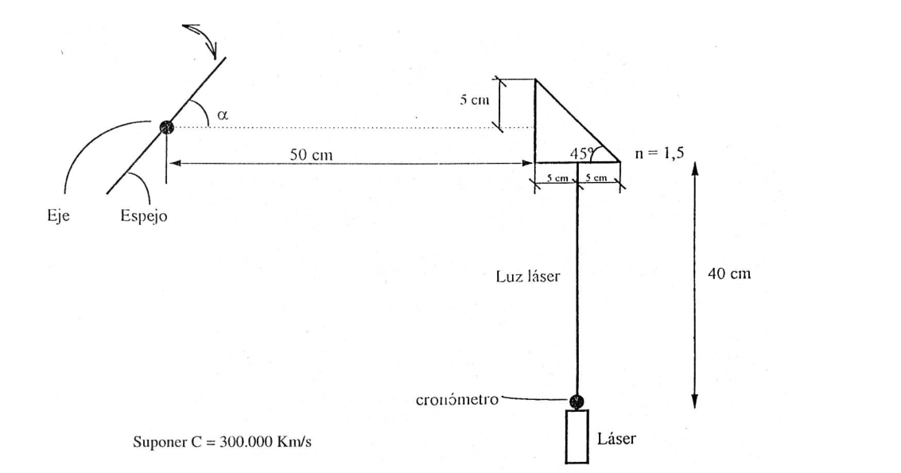
Topic: Geometric Optics Metodi: Snell’s Law, Ray Tracing Competenze: Physical Reasoning Objects: Prism, Mirror Fonte: Testo (PDF) — p.2
**Local 96 - Capitale federale (sistema ottico, prisma, specchio, cronometro) **
Si dispone di un sistema ottico come quello della figura. Questo consiste in una fonte di luce laser che invia un raggio, in modo che incide normalmente sulla base di un prisma retto di 45° e 10 cm laterale. Il prisma è costruito in materiale acrilico, il cui indice di refraczione è e si trova a 60 cm dalla sorgente luminosa. A 50 cm dal prisma, si trova uno specchio con un asse perpendicolare, in modo che possa girare sul piano della foglia. Accanto al laser si colloca un cronometro che si attiva quando si rileva un raggio luminoso e si disattiva quando si rileva un altro raggio luminoso (si è inizialmente attivato). Trovare: a) La velocità della luce nel prisma. b) Indicare il percorso che il raggio seguirà all’interno del prisma. Giustificare. c) Calcolare l’angolo (rispetto all’orizzonte) che lo specchio deve avere per far tornare il raggio allo stesso punto da cui è partito. d) Calcolare il tempo che il cronometro segnerà. (e) Indicare il percorso completo del raggio. (Figura: 50 cm, 5 cm, , 40 cm, Asso, Specchio, Laser; Spazio Km/s)
Topic: Geometric Optics Metodi: Snell’s Law, Ray Tracing Competenze: Physical Reasoning Objects: Prism, Mirror Fonte: Testo (PDF) — p.2
The Commission shall, in accordance with Article 21 of Regulation (EC) No 1272/2009, adopt delegated acts in accordance with Article 21 of Regulation (EC) No 1272/2009.
It has an optical system similar to that of the figure. This consists of a laser light source that sends a beam, such that it normally hits the base of a straight prism of 45° and 10cm on the side. The prism is constructed of acrylic material, the refractive index of which is and is 60 cm from the light source. At 50 cm from the prism, a mirror with a perpendicular axis is placed, so that it can rotate in the plane of the leaf. A chronometer is placed next to the laser, which is activated when a light beam is detected and deactivated when another light beam is detected (initially activated). Find out: (a) The speed of light in the prism. (b) Indicate the path of lightning within the prism. Justify it. (c) Calculate the angle (with respect to the horizontal) that the mirror must have to return the lightning to the same point from which it started. (d) Calculate the time to be marked by the chronometer. (e) Indicate the full path of the beam. (Figure: 50 cm, 5 cm, , 40 cm, Axis, Mirror, Laser; Space Km/s)
Topic: Geometric Optics Metodi: Snell’s Law, Ray Tracing Competenze: Physical Reasoning Objects: Prism, Mirror Fonte: Testo (PDF) — p.2
Local 97 - Dolores (Prensa hidraulica, secciones)
Las secciones rectas de los émbolos de una prensa hidráulica son cm y cm. Si se aplica al émbolo más pequeño una fuerza de 98 Newton,¿cuál es la fuerza resultante sobre el otro y qué distancia tienen ambos émbolos?
Topic: Fluid Mechanics Metodi: Hydrostatic Equilibrium Competenze: Physical Reasoning Objects: Piston Fonte: Testo (PDF) — p.2
**Local 97 - Dolores (Prensa idraulica, sezioni) **
Le sezioni rette degli emolli di una stampa idraulica sono cm e cm. Se si applica all’embolo più piccolo una forza di 98 Newton, qual è la forza risultante sull’altro e quale distanza hanno entrambi gli emboli?
Topic: Fluid Mechanics Metodi: Hydrostatic Equilibrium Competenze: Physical Reasoning Objects: Piston Fonte: Testo (PDF) — p.2
The following is the list of the following:
The straight sections of the embolts of a hydraulic press are cm and cm. If a force of 98 Newtons is applied to the smallest embolus, what is the resulting force on the other and how far apart are both embolus?
Topic: Fluid Mechanics Metodi: Hydrostatic Equilibrium Competenze: Physical Reasoning Objects: Piston Fonte: Testo (PDF) — p.2
Local 98 - Resistencia (Esfera de plomo, hielo)
Una esfera de plomo ( calor específico = 0,03 cal/g °C) de 100 g está a una temperatura de 30 °C. Se lanza verticalmente hacia arriba con una velocidad inicial de 400 m/s. Al regresar al punto de partida choca con una masa de hielo. ¿qué masa de hielo fundé? (suponer que toda la energía del choque se transforma en calor)
Topic: Conservation of Energy, Thermodynamics Metodi: Conservation of Energy, First Law of Thermodynamics Competenze: Physical Reasoning Objects: Sphere Fonte: Testo (PDF) — p.2
**Local 98 - Resistenza (Lid sphere, ghiaccio) **
Una sfera di piombo (calore specifico = 0,03 cal/g °C) di 100 g è a una temperatura di 30 °C. Si lancia verticalmente verso l’alto con una velocità iniziale di 400 m/s. Tornando al punto di partenza, si trova in una massa di ghiaccio. Che massa di ghiaccio ho fonduto? (supponendo che tutta l’energia dello scatto si trasformi in calore)
Topic: Conservation of Energy, Thermodynamics Metodi: Conservation of Energy, First Law of Thermodynamics Competenze: Physical Reasoning Objects: Sphere Fonte: Testo (PDF) — p.2
The following is the list of the types of waste and the types of waste and the types of waste and the types of waste and the types of waste and the types of waste and the types of waste and the types of waste and the types of waste and the types of waste and the types of waste and the types of waste and the types of waste and the types of waste and the types of waste and the types of waste and the types of waste and the types of waste and the types of waste and the types of waste and the types of waste and the types of waste and the types of waste and the types of waste and the types of waste and the types of waste and the types of waste and the types of waste and the types of waste and the types of waste and the types of waste and the types of waste and the types of waste and the types of waste and the waste and the types of waste and the waste.
A lead ball (specific heat = 0,03 cal/g °C) of 100 g is at a temperature of 30 °C. It is launched vertically upwards at an initial speed of 400 m/s. On his way back to the starting point, he collided with a mass of ice. What mass of ice did I melt? (assuming all the energy from the shock is converted to heat)
Topic: Conservation of Energy, Thermodynamics Metodi: Conservation of Energy, First Law of Thermodynamics Competenze: Physical Reasoning Objects: Sphere Fonte: Testo (PDF) — p.2
Local 99 - Capital Federal (Calorimetro, fem, calor especifico)
En la figura la “e” es una batería con una fem de 110V. K es un calorímetro con 800g de líquido desconocido. El amperímetro marca 2A y el voltímetro 90V. Si la resistencia interna de la batería es de 2W, el amperímetro tiene resistencia despreciable y el voltímetro resistencia infinita. a ) ¿Cuánto vale la resistencia del calorímetro (Rk)? b ) ¿Cuánto vale el calor específico del líquido si a los 10 minutos de fluir la corriente, el líquido se ha calentado 5°C? Considerar que en el calentamiento del líquido se invierte el 80% del calor emitido en el calefactor. (figura circuito , A, V, )
Topic: Circuits, Thermodynamics Metodi: Kirchhoff’s Laws, First Law of Thermodynamics Competenze: Physical Reasoning Objects: Battery, Resistor, Calorimeter Fonte: Testo (PDF) — p.2
**Local 99 - Capitale federale (calorimetro, fem, calore specifico) **
Nella figura la “e” è una batteria con una fem di 110 V. K è un caloriometro con 800 g di liquido sconosciuto. L’amperiometro è di 2A e il voltimetro 90V. Se la resistenza interna della batteria è di 2W, l’amperiometro ha una resistenza scarsa e il voltometro una resistenza infinita. a) Quanto vale la resistenza del calometro (Rk)? b) Qual è il valore specifico del calore del liquido se il liquido è stato riscaldato 5°C dopo 10 minuti dal flusso? Considerare che il riscaldamento del liquido inverte l’80% del calore emesso dal riscaldatore. (Figura di circuito , A, V, )
Topic: Circuits, Thermodynamics Metodi: Kirchhoff’s Laws, First Law of Thermodynamics Competenze: Physical Reasoning Objects: Battery, Resistor, Calorimeter Fonte: Testo (PDF) — p.2
The amount of the aid is calculated on the basis of the following data:
In the figure the “e” is a battery with a 110V fem. K is a calorimeter with 800g of unknown liquid. The amp is 2A and the voltmeter is 90V. If the internal resistance of the battery is 2W, the amperemeter has negligible resistance and the voltmeter has infinite resistance. (a) What is the resistance of the calorimeter (Rk)? (b) What is the specific heat of the liquid if the liquid has been heated 5°C within 10 minutes of flow? Consider that 80% of the heat emitted by the heater is reversed in heating the liquid. (circuit figure , A, V, )
Topic: Circuits, Thermodynamics Metodi: Kirchhoff’s Laws, First Law of Thermodynamics Competenze: Physical Reasoning Objects: Battery, Resistor, Calorimeter Fonte: Testo (PDF) — p.2
Local 100 - Capital Federal (Lentes, acelerador de protones, campo magnetico)
Un haz de rayos de luz paralelos provenientes de una fuente muy lejana (ej. la luz del sol), incide sobre una lente divergente de -10 cm de distancia focal y luego atraviesa otra convergente separada 20 cm de la anterior (los ejes principales de las lentes son coincidentes y paralelos a los rayos). Dicho punto luminoso se forma luego de pasar el haz por ambas lentes y se origina en ésta de la lente convergente y sobre el eje de la misma. Dicho punto luminoso activa un acelerador de protones quienes, luego de alcanzar una velocidad m/s, ingresan en un campo magnético de inducción T. a) Hallar el foco de la lente convergente. b) ¿Cuál es el índice de refracción de la lente convergente si se trata de una biconvexa con radios de 26 cm y 24 cm respectivamente a cada una de sus caras? c) ¿Cuál es la velocidad con que se desplaza la luz dentro de la lente convergente? d) Dibujar el sistema óptico a escala indicando la trayectoria de los rayos y las características de las imágenes formadas. e) ¿Cuál es la fuerza que actúa sobre cada protón al ingresar al campo magnético? masa del protón mp= kg; carga q= C. f) Describir el movimiento del protón dentro del campo indicando todos las magnitudes asociadas al mismo. g) Si los protones ingresaran al campo magnético con el mismo módulo de velocidad pero formando un ángulo de 56,3° respecto al eje horizontal (eje del versor ), hallar el radio de la órbita helicoidal que describirían.
Topic: Geometric Optics, Magnetism Metodi: Thin Lens & Mirror Equation, Lorentz Force Analysis, Snell’s Law Competenze: Physical Reasoning Objects: Lens, Particle Beam Fonte: Testo (PDF) — p.2
**Local 100 - capitale federale (lenti, acceleratore di protoni, campo magnetico) **
Un raggio di raggi di luce paralleli provenienti da una fonte molto lontana (es. la luce del sole), incide su una lente divergente di -10 cm di distanza focale e poi attraversa un’altra convergente separata 20 cm dalla precedente (gli assi principali delle lenti sono coincidenti e paralleli ai raggi). Tale punto luminoso si forma dopo aver attraversato il fascio attraverso entrambi i lenti e si origina in questo della lente convergente e sull’asse della stessa. Tale punto luminoso attiva un acceleratore di protoni che, dopo aver raggiunto una velocità m/s, entra in un campo magnetico di induzione T. a) Trovare il foco del lente convergente. b) Qual è l’indice di refrazione della lente convergente se si tratta di una biconvexa con radii di 26 cm e 24 cm rispettivamente a ciascuna delle loro facce? c) Qual è la velocità con cui la luce si sposta all’interno del lente convergente? d) Disegnare il sistema ottico a scala indicando il percorso dei raggi e le caratteristiche delle immagini formate. e) Qual è la forza che agisce su ogni protone quando entra nel campo magnetico? massa del protone mp= kg; carico q= C. f) Descrivere il movimento del protone all’interno del campo indicando tutte le magnitudini associate al suo campo. g) Se i protoni entrassero nel campo magnetico con lo stesso modulo di velocità ma formando un angolo di 56,3° rispetto all’asse orizzontale (asse del versore ), trovare il raggio dell’orbita elicida che descriverebbero.
Topic: Geometric Optics, Magnetism Metodi: Thin Lens & Mirror Equation, Lorentz Force Analysis, Snell’s Law Competenze: Physical Reasoning Objects: Lens, Particle Beam Fonte: Testo (PDF) — p.2
The amount of the loan shall be calculated on the basis of the amount of the loan.
A beam of parallel light rays coming from a very distant source (e.g. The lens is a lens with a focal length of -10 cm and then passes through another lens with a focal length of 20 cm (the main axes of the lenses are parallel to the rays). This bright spot is formed after passing the beam through both lenses and originates in this of the converging lens and on the axis of the same. Such a light point activates a proton accelerator which, after reaching a speed m/s, enters an induction magnetic field T. (a) Find the focus of the convergent lens. (b) What is the refractive index of the convergent lens if it is a biconvex with radii of 26 cm and 24 cm respectively on each of its faces? (c) What is the speed at which light travels within the convergent lens? (d) Draw the optical system at scale indicating the trajectory of the rays and the characteristics of the images formed. (e) What is the force acting on each proton when it enters the magnetic field? The mass of the proton mp= kg; charge q= C. (f) Describe the proton’s motion within the field indicating all the magnitudes associated with it. (g) If the protons entered the magnetic field with the same speed module but forming an angle of 56,3° with respect to the horizontal axis (versor axis ), find the radius of the helicoidal orbit they would describe.
Topic: Geometric Optics, Magnetism Metodi: Thin Lens & Mirror Equation, Lorentz Force Analysis, Snell’s Law Competenze: Physical Reasoning Objects: Lens, Particle Beam Fonte: Testo (PDF) — p.2
Local Exp 101 - Rojas (Ley de reflexion especular)
INSTANCIAS LOCALES. PROBLEMAS EXPERIMENTALES. Lugar y categoría. Comprobar experimentalmente la LEY DE REFLEXION ESPECULAR: ” El ángulo de incidencia es igual al ángulo de reflexión ”. Elaborar un informe.
Topic: Geometric Optics Metodi: Experimental Data Analysis, Ray Tracing Competenze: Experimental Data Analysis, Physical Reasoning Objects: Mirror Fonte: Testo (PDF) — p.2
**Local Exp 101 - Reds (Legge della riflessione speculare) **
- Instanze locali. Problemi sperimentali. Luogo e categoria. Provare sperimentalmente la legge della riflessione speculare: ” L’angolo di incidenza è uguale all’angolo di riflessione ”. Preparare un rapporto.
Topic: Geometric Optics Metodi: Experimental Data Analysis, Ray Tracing Competenze: Experimental Data Analysis, Physical Reasoning Objects: Mirror Fonte: Testo (PDF) — p.2
The following is the list of the types of vehicles that are subject to the approval of the competent authority:
Local instances. The problem is experimental. Place and category. Experimentally check the law of speculative reflection: “The angle of incidence is equal to the angle of reflection”. Draft a report.
Topic: Geometric Optics Metodi: Experimental Data Analysis, Ray Tracing Competenze: Experimental Data Analysis, Physical Reasoning Objects: Mirror Fonte: Testo (PDF) — p.2
Local Exp 102 - Capital Federal (Constante elastica de resortes)
Encontrar la constante elástica equivalente del sistema que se presenta en la figura y comparar con el valor teórico. (figura resortes k1, k2) Pasos previos requeridos:
- Determinar la constante elástica de cada resorte.
- Sabiendo que: , donde T es el periodo de la oscilación, k es la constante elástica del resorte, m es la masa que oscila, encontrar explícitamente la dependencia del periodo con la masa.
Topic: Oscillations & Waves, Elasticity & Materials Metodi: Hooke’s Law, Simple Harmonic Motion Analysis, Experimental Data Analysis Competenze: Experimental Data Analysis, Physical Reasoning Objects: Spring Fonte: Testo (PDF) — p.2
**Local Exp 102 - Capitale federale (constantina elastica delle sorgenti) **
Trovare la costante elastica equivalente del sistema che viene presentata nella figura e confrontare con il valore teorico. (Figura sorgenti k1, k2) Passi precedenti richiesti:
- Determinare la costante elastica di ogni primavera.
- Sapendo che: , dove T è il periodo di oscillazione, k è la costante elastica della resorsa, m è la massa che oscilla, trovare esplicitamente la dipendenza del periodo dalla massa.
Topic: Oscillations & Waves, Elasticity & Materials Metodi: Hooke’s Law, Simple Harmonic Motion Analysis, Experimental Data Analysis Competenze: Experimental Data Analysis, Physical Reasoning Objects: Spring Fonte: Testo (PDF) — p.2
The amount of the capital used for the calculation of the capital requirements for the financial year is EUR 10 million.
Find the equivalent elastic constant of the system shown in the figure and compare it to the theoretical value. (Figure spring k1, k2) Required prior steps:
- Determine the elastic constant of each spring.
- Knowing that: , where T is the period of oscillation, k is the spring elastic constant, m is the oscillating mass, find explicitly the period’s dependence on the mass.
Topic: Oscillations & Waves, Elasticity & Materials Metodi: Hooke’s Law, Simple Harmonic Motion Analysis, Experimental Data Analysis Competenze: Experimental Data Analysis, Physical Reasoning Objects: Spring Fonte: Testo (PDF) — p.2
Local Exp 103 - Mar del Plata (Densidad de chapa irregular)
Determine para la chapa irregular, con un espesor de 0,76 mm, que se le ha entregado: a) la densidad. b) la superficie. El material a emplear para determinación es el dado, que consta de: una balanza, una tijera, una regla.
Topic: Elasticity & Materials, Order-of-Magnitude Estimation Metodi: Experimental Data Analysis, Error Propagation Competenze: Experimental Data Analysis, Physical Reasoning Objects: — Fonte: Testo (PDF) — p.2
**Local Exp 103 - Mar del Plata (Densità di strato irregolare) **
Determina, per la lamiera irregolare, di 0,76 mm di spessore, che è stata consegnata: a) densità. b) la superficie. Il materiale da utilizzare per la determinazione è il dado, che consiste in: una bilancia, una forbice, una regola.
Topic: Elasticity & Materials, Order-of-Magnitude Estimation Metodi: Experimental Data Analysis, Error Propagation Competenze: Experimental Data Analysis, Physical Reasoning Objects: — Fonte: Testo (PDF) — p.2
The following is the list of the Member States that have been granted the right to use the information they have obtained:
Determine for the irregular plate, of a thickness of 0,76 mm, that it has been delivered: (a) density. (b) the surface. The material to be used for determination is the die, which consists of: a scale, a scissor, a rule.
Topic: Elasticity & Materials, Order-of-Magnitude Estimation Metodi: Experimental Data Analysis, Error Propagation Competenze: Experimental Data Analysis, Physical Reasoning Objects: — Fonte: Testo (PDF) — p.2
Local Exp 104 - Castelar (Indice de refraccion, prisma)
Determinar el índice de refracción del material de un prisma recto, utilizando solo los elementos provistos. Al construir su tarea, el experimentador deberá entregar un breve informe sobre los realizado y los resultados obtenidos. Elementos previstos: el concursante: una prisma recto de sección rectangular, de plexiglás y con dos caras pulidas. Alfileres, lápis y una fragua/cintajo de soporte/pie en forma de T; 3 maces; transformador de lámparas de 6V; soporte; lámpara de tubo; disco óptico; soporte para disco óptico; resorte de sujeción; varilla de soporte. Se pide: a) Enuncie e indique las leyes de la óptica que considere aplicables al problema; b) si puede proponer más de un método para medir el índice, describelos a todos. Use por lo menos uno para realizar la medición y, si tiene tiempo, más de uno; c) realice una estimación del error experimental de la medición realizada.
Topic: Geometric Optics Metodi: Snell’s Law, Experimental Data Analysis, Error Propagation Competenze: Experimental Data Analysis, Physical Reasoning Objects: Prism Fonte: Testo (PDF) — p.2
**Local Exp 104 - Castelar (indice di refraczione, prisma) **
Determinare l’indice di refraczione del materiale di un prisma retto, utilizzando solo gli elementi forniti. Nel costruire il suo compito, l’esperimentatore deve fornire un breve rapporto su ciò che è stato realizzato e i risultati ottenuti. Elementi previsti: il concorrente: una prisma retta di sezione rettangolare, di plexiglas e con due facce lucide. Fragliere, penne e una forga/pietra di supporto/pietra in forma di T; 3 macchie; trasformatore di lampade da 6V; supporto; lampada di tubo; disco ottico; supporto per disco ottico; risorsa di supporto; bastone di supporto. Si chiede: a) Esprimere e indicare le leggi dell’ottica che ritiene applicabili al problema; b) se si può proporre più di un metodo per misurare l’indice, descriverli tutti. Utilizza almeno una misurazione e, se hai tempo, più di una; c) stima l’errore sperimentale della misurazione effettuata.
Topic: Geometric Optics Metodi: Snell’s Law, Experimental Data Analysis, Error Propagation Competenze: Experimental Data Analysis, Physical Reasoning Objects: Prism Fonte: Testo (PDF) — p.2
The following is the list of the types of vehicles that are used:
Determine the refractive index of a rectangular prism material using only the elements provided. When constructing his task, the experimenter must provide a brief report on the results and results obtained. The intended elements: the contestant: a rectangular, plexiglass-shaped prism with two polished faces. A T-shaped braid/stick/foot; 3 matches; 6V lamp transformer; support; tube lamp; optical disc; optical disc support; grip spring; support rod. (a) state and indicate the laws of optics which you consider applicable to the problem; (b) if you can propose more than one method for measuring the index, describe them all. Use at least one to perform the measurement and, if you have time, more than one; (c) make an estimate of the experimental error of the measurement performed.
Topic: Geometric Optics Metodi: Snell’s Law, Experimental Data Analysis, Error Propagation Competenze: Experimental Data Analysis, Physical Reasoning Objects: Prism Fonte: Testo (PDF) — p.2
Local Exp 105 - Rauch (Diametro de un alambre)
Usando solamente un alambre y una regla explicar cómo procede para determinar el diámetro del alambre, y hacerlo. Sabiendo que el diámetro real es de 0,082cm determinar el error porcentual cometido en la experiencia.
Topic: Order-of-Magnitude Estimation, Elasticity & Materials Metodi: Experimental Data Analysis, Error Propagation Competenze: Experimental Data Analysis, Physical Reasoning Objects: Wire Fonte: Testo (PDF) — p.2
**Local Exp 105 - Rauch (Diametro di un filo) **
Usando solo un filo e una regola spiegare come si procede per determinare il diametro del filo, e farlo. Sapendo che il diametro reale è di 0,082 cm determinare l’errore percentuale commesso nell’esperienza.
Topic: Order-of-Magnitude Estimation, Elasticity & Materials Metodi: Experimental Data Analysis, Error Propagation Competenze: Experimental Data Analysis, Physical Reasoning Objects: Wire Fonte: Testo (PDF) — p.2
The following is the list of the types of electrical equipment used:
Using just a wire and a rule explain how you do it to determine the wire diameter, and do it. Knowing that the actual diameter is 0.082cm determines the percentage error committed in the experiment.
Topic: Order-of-Magnitude Estimation, Elasticity & Materials Metodi: Experimental Data Analysis, Error Propagation Competenze: Experimental Data Analysis, Physical Reasoning Objects: Wire Fonte: Testo (PDF) — p.2
Local Exp 106 - Ibarreta (Peso especifico de la nafta)
EXPERIENCIA: DETERMINAR EL PESO ESPECÍFICO DE LA NAFTA. MATERIALES: RECIPIENTES CON NAFTA, CON AGUA VASOS PLÁSTICOS, BALANZA DE DOS PLATILLOS, PESAS.
Topic: Fluid Mechanics, Order-of-Magnitude Estimation Metodi: Experimental Data Analysis, Error Propagation Competenze: Experimental Data Analysis, Physical Reasoning Objects: Container Fonte: Testo (PDF) — p.2
**Local Exp 106 - Ibarreta (Peso specifico della nafta) **
Esperienza: determinare il peso specifico del NAFTA. MATERIALI: RECIPIENTITÀ con NAFTA, Acqua VALLE Plastiche, BALANZO DUE PIATELLI, PESA.
Topic: Fluid Mechanics, Order-of-Magnitude Estimation Metodi: Experimental Data Analysis, Error Propagation Competenze: Experimental Data Analysis, Physical Reasoning Objects: Container Fonte: Testo (PDF) — p.2
The following table shows the number of samples taken:
Experience: Determining the specific weight of NAFTA. The Commission has also adopted a number of proposals for the establishment of a European Union-wide network of transport infrastructure providers.
Topic: Fluid Mechanics, Order-of-Magnitude Estimation Metodi: Experimental Data Analysis, Error Propagation Competenze: Experimental Data Analysis, Physical Reasoning Objects: Container Fonte: Testo (PDF) — p.2
Local Exp 107 - Corrientes (Indice de refraccion, prisma transparente)
ÍNDICE DE REFRACCIÓN. OBJETIVO: Determinar el índice de refracción de un prisma transparente. MATERIALES: Prisma, Alfileres, papel milimetrado. REQUERIMIENTOS:
- Con los materiales de que se dispone diseñe y realice un experimento para medir el índice de refracción de un prisma.
- Explique como realizó las mediciones
- Explique como realizó los cálculos
- Valores obtenidos en las mediciones realizadas
- Fuentes de error y análisis de cómo influye en el resultado
- resultado experimental de los solicitado.
Topic: Geometric Optics Metodi: Snell’s Law, Experimental Data Analysis, Error Propagation Competenze: Experimental Data Analysis, Physical Reasoning Objects: Prism Fonte: Testo (PDF) — p.2
**Local Exp 107 - Correnti (indice di rifrazione, prisma trasparente) **
Indice di rifratto. Oggetto: Determinare l’indice di refraczione di un prisma trasparente. Materiali: prisma, filtro, carta millimetrica. RICERICI:
- Con i materiali disponibili progettare e eseguire un esperimento per misurare l’indice di refraczione di un prisma.
- Spiegare come ha effettuato le misurazioni
- Spiegare come ha fatto i calcoli
- Valori ottenuti dalle misurazioni effettuate
- Fonti di errore e analisi di come influenzano il risultato
- risultato sperimentale dei richiedenti.
Topic: Geometric Optics Metodi: Snell’s Law, Experimental Data Analysis, Error Propagation Competenze: Experimental Data Analysis, Physical Reasoning Objects: Prism Fonte: Testo (PDF) — p.2
The following is the list of the main components of the electricity supply chain:
The following is the list of the following: OBJECTIVE: Determine the refractive index of a transparent prism. The following table shows the information available: The following requirements:
- With the materials available, design and perform an experiment to measure the refractive index of a prism.
- Explain how you performed the measurements
- Explain how you did the calculations
- Values obtained from measurements made
- Sources of error and analysis of how it influences the outcome
- experimental result of the applicants.
Topic: Geometric Optics Metodi: Snell’s Law, Experimental Data Analysis, Error Propagation Competenze: Experimental Data Analysis, Physical Reasoning Objects: Prism Fonte: Testo (PDF) — p.2
Local Exp 108 - Gualeguaychu (Movimiento uniforme, grafico)
Elementos: bolita, riel metálico, cronometro, regla. Haz que la bolita se desplace sobre el riel con un movimiento uniforme. a) ¿De qué manera podrías verificarlo? b) Confecciona una tabla con los datos que obtengas y realiza un gráfico.
Topic: Newtonian Mechanics Metodi: Experimental Data Analysis, Kinematic Equations, Graph Linearization Competenze: Experimental Data Analysis, Physical Reasoning Objects: Ball Fonte: Testo (PDF) — p.2
**Local Exp 108 - Gualeguaychu (Movimento uniforme, grafico) **
Elementi: pallina, rotaia metallica, cronometro, regola. Fai spostare la pallina sul binario con un movimento uniforme. a) Come potresti verificarlo? b) Configgere una tabella con i dati che si ottengono e fare un grafico.
Topic: Newtonian Mechanics Metodi: Experimental Data Analysis, Kinematic Equations, Graph Linearization Competenze: Experimental Data Analysis, Physical Reasoning Objects: Ball Fonte: Testo (PDF) — p.2
The following is the list of the Member States’ official languages:
Elements: ball, rail, timing, rule. Make the ball move over the rails with uniform movement. (a) How could you verify this? b) Make a table with the data you get and draw a graph.
Topic: Newtonian Mechanics Metodi: Experimental Data Analysis, Kinematic Equations, Graph Linearization Competenze: Experimental Data Analysis, Physical Reasoning Objects: Ball Fonte: Testo (PDF) — p.2
Local Exp 109 - Rojas (Campo magnetico por una corriente)
Determinar experimentalmente ” CAMPO MAGNETICO POR UNA CORRIENTE”. Elaborar un informe.
Topic: Magnetism, Electromagnetism Metodi: Biot-Savart Law, Experimental Data Analysis Competenze: Experimental Data Analysis, Physical Reasoning Objects: Wire Fonte: Testo (PDF) — p.2
**Local Exp 109 - Rossi (campo magnetico a corrente) **
Determinare sperimentalmente “Campo magnetico per un corrente”. Preparare un rapporto.
Topic: Magnetism, Electromagnetism Metodi: Biot-Savart Law, Experimental Data Analysis Competenze: Experimental Data Analysis, Physical Reasoning Objects: Wire Fonte: Testo (PDF) — p.2
**Local Exp 109 - Red (Magnetic field by current) **
Experimentally determine “magnetic field by a current”. Draft a report.
Topic: Magnetism, Electromagnetism Metodi: Biot-Savart Law, Experimental Data Analysis Competenze: Experimental Data Analysis, Physical Reasoning Objects: Wire Fonte: Testo (PDF) — p.2
Local Exp 110 - Mar del Plata (Circuito electrico, cajas negras)
El circuito eléctrico entregado tiene sus resistencias con los valores indicados, y las cajas negras indicadas con las letras A y B pueden ser una fuente de alimentación y una resistencia o viceversa. El voltímetro digital que se le entrega le permitirá, luego de realizar algunas mediciones: a ) Identificar la letra correcta de la caja que es la fuente de alimentación, indicando el porencial de la misma. b )La potencia que disipa cada resistencia. c )La caja negra que entrega al circuito de la batería. d )El valor de la resistencia que contiene la caja restante.
Topic: Circuits Metodi: Kirchhoff’s Laws, Experimental Data Analysis Competenze: Experimental Data Analysis, Physical Reasoning Objects: Resistor, Battery Fonte: Testo (PDF) — p.2
**Local Exp 110 - Mar del Plata (circuito elettrico, casse nere) **
Il circuito elettrico consegnato ha le sue resistenze ai valori indicati, e le caselle nere indicate con le lettere A e B possono essere una fonte di alimentazione e una resistenza o viceversa. Il voltimetro digitale che vi viene consegnato vi permetterà, dopo aver effettuato alcune misurazioni: a) Indicare la lettera corretta della casella che è la fonte di alimentazione, indicando la porenziale della casella. b) La potenza che dissipa ogni resistenza. c) La scatola nera che fornisce il circuito della batteria. d) Il valore della resistenza contenuta nella scatola rimanente.
Topic: Circuits Metodi: Kirchhoff’s Laws, Experimental Data Analysis Competenze: Experimental Data Analysis, Physical Reasoning Objects: Resistor, Battery Fonte: Testo (PDF) — p.2
The Commission has decided to extend the period of validity of the measures to be taken to ensure that the measures are implemented in accordance with the conditions laid down in Article 107 (1) of the Treaty.
The electrical circuit delivered has its resistance to the indicated values, and the black boxes indicated by the letters A and B can be a power supply and resistance or vice versa. The digital voltmeter you are given will allow you, after making some measurements: (a) Identify the correct letter of the box which is the power supply, indicating the portion of the box. b) The power that dissipates each resistance. c) The black box that delivers to the battery circuit. d) The value of the resistance contained in the remaining box.
Topic: Circuits Metodi: Kirchhoff’s Laws, Experimental Data Analysis Competenze: Experimental Data Analysis, Physical Reasoning Objects: Resistor, Battery Fonte: Testo (PDF) — p.2
Local Exp 111 - Bahia Blanca (Indice de refraccion, caras paralelas)
Determinar el índice de refracción del material de un cuerpo regular de caras paralelas empleando los elementos provistos y que se detallan a continuación. Finalmente elaborar un informe sobre la tarea realizada y los resultados obtenidos. Elementos Previstos: Cuerpo regular de caras paralelas de material transparente. Regla milimetrada y Transportador. Alfileres, Lápiz y Plancha de poliestireno. Información Solicitada: a) Enunciar las leyes de la óptica que considere aplicables a la experiencia. b) Si fuera posible proponga métodos alternativos para la determinación de la magnitud solicitada. c) Mencionar las principales causas de error experimental. d) Dar una estimación del error experimental de la medición realizada.
Topic: Geometric Optics Metodi: Snell’s Law, Experimental Data Analysis, Error Propagation Competenze: Experimental Data Analysis, Physical Reasoning Objects: Prism Fonte: Testo (PDF) — p.2
**Local Exp 111 - Bahia Blanca (indice di rifrazione, facce parallele) **
Determinare l’indice di refraczione del materiale di un corpo regolare di facce parallele utilizzando gli elementi forniti e dettagliati di seguito. Infine, elaborare un rapporto sul lavoro svolto e sui risultati ottenuti. Elementi previsti: corpo regolare di facce parallele di materiale trasparente. Regola millimetrica e Trasportatore. Pelle, penna e scheda di poliestirene. Informazioni richieste: a) Esprimere le leggi dell’ottica che ritiene applicabili all’esperienza. b) Se possibile, proporre metodi alternativi per determinare la quantità richiesta. c) Indicare le principali cause di errore sperimentale. (d) Estimare l’errore sperimentale della misurazione effettuata.
Topic: Geometric Optics Metodi: Snell’s Law, Experimental Data Analysis, Error Propagation Competenze: Experimental Data Analysis, Physical Reasoning Objects: Prism Fonte: Testo (PDF) — p.2
The following is the list of the Member States’ national energy efficiency targets:
Determine the refractive index of a regular parallel-faced body material using the elements provided and detailed below. Finally, a report on the task carried out and the results obtained. Foreseen elements: Regular body of parallel faces of transparent material. Millimeter rule and transporter. Pulleys, pencils and polystyrene board. Requested information: (a) To state the laws of optics which it considers applicable to experience. (b) If possible, propose alternative methods for determining the quantity requested. (c) To identify the main causes of experimental error. (d) To give an estimate of the experimental error of the measurement performed.
Topic: Geometric Optics Metodi: Snell’s Law, Experimental Data Analysis, Error Propagation Competenze: Experimental Data Analysis, Physical Reasoning Objects: Prism Fonte: Testo (PDF) — p.2